产品规则 · 完整脚本 · 共用动作 · 初瑞雪表现
初瑞雪通用表现库
表达类别 → 情绪与语气 → 关键词／相近说法 → 对应动作与表情
按整句意思查找表现，再结合当前持物和节奏安排动作。原话与视频证据保留在每条详情里。
当前没有已核实的话术—动作关联。已有动作素材保留在下方待补全区；核对原声、语气及动作对应关系后，再参与新台词的动作编排。
没有匹配的记录。
待补全 · 话术与动作关系尚未核实 76 条
| 表达类别 | 情绪／语气 | 关键词／相近说法 | 对应表现 | 核查情况 |
|---|---|---|---|---|
| 待确认 | 待核查 | 待核查实词 待核查 近义扩展尚未扩展 | 手从下方抬起，拇指与食指形成环状，随后转为向下指示；回到胸前松握，间隔后再次短促抬指。 表情目光：主要直视镜头，伴随眨眼、眉眼轻抬和小幅头部偏转。 安排时机：需核对台词后确定 | 待补全 单次情境样例 1 次观察 · 1 个来源组 |
查看原话、视频和动作过程手从下方抬起，拇指与食指形成环状，随后转为向下指示；回到胸前松握，间隔后再次短促抬指。 单次情境视觉样例，原声未听审。 待补全原因：已保留原片及视觉动作观察；尚未核查原话、情绪语气和台词与动作的对应关系。
原片证据 · 17–24.2 秒公共大厅的近距离自拍；当前片段没有持产品，另一只手未完整入镜。 待核查文字：尚未核查 当时语气：待核查 台词与动作的关系：待核查 打开原片并定位来源：src-crx-20261107-01 · 独立来源组：family-crx-20261107-01 核查限制：动作与表情描述来自抽样图像序列；区间和节奏为近似，未认证连续播放自然程度。、未听审原音频；不能据 ASR、文件名、字幕或口形推定已经核实的原话与语气。、仅为情境样例，不证明习惯频率；不同文件并不自动代表独立拍摄来源。、未做 Seedance 成片生成、人物相似度或口型验证。、用户确认适用于素材中的初瑞雪本人，不覆盖其他入镜人物；只提取本人的动作。 抽帧证据（不代替连续播放和原声核查） | ||||
| 待确认 | 待核查 | 待核查实词 待核查 近义扩展尚未扩展 | 先短暂侧看，回镜头后把食指举到脸侧，保持片刻，再将指尖转向镜头方向，最后放下。 表情目光：视线从一侧回到镜头，竖指期间头略倾；面部没有持续夸张笑容。 安排时机：需核对台词后确定 | 待补全 单次情境样例 1 次观察 · 1 个来源组 |
查看原话、视频和动作过程先短暂侧看，回镜头后把食指举到脸侧，保持片刻，再将指尖转向镜头方向，最后放下。 单次情境视觉样例，原声未听审。 待补全原因：已保留原片及视觉动作观察；尚未核查原话、情绪语气和台词与动作的对应关系。
原片证据 · 17–25 秒靠窗坐姿的近景自拍；没有展示商品。 待核查文字：尚未核查 当时语气：待核查 台词与动作的关系：待核查 打开原片并定位来源：src-crx-20261107-02 · 独立来源组：family-crx-20261107-02 核查限制：动作与表情描述来自抽样图像序列；区间和节奏为近似，未认证连续播放自然程度。、未听审原音频；不能据 ASR、文件名、字幕或口形推定已经核实的原话与语气。、仅为情境样例，不证明习惯频率；不同文件并不自动代表独立拍摄来源。、未做 Seedance 成片生成、人物相似度或口型验证。、用户确认适用于素材中的初瑞雪本人，不覆盖其他入镜人物；只提取本人的动作。 抽帧证据（不代替连续播放和原声核查） | ||||
| 待确认 | 待核查 | 待核查实词 待核查 近义扩展尚未扩展 | 食指抬离、再次指向对侧手指，随后双手在低位保持接触或相邻。 表情目光：视线主要朝镜头，偶有向上侧看的短变化；头部动作小于手部动作。 安排时机：需核对台词后确定 | 待补全 单次情境样例 1 次观察 · 1 个来源组 |
查看原话、视频和动作过程食指抬离、再次指向对侧手指，随后双手在低位保持接触或相邻。 单次情境视觉样例，原声未听审。 待补全原因：已保留原片及视觉动作观察；尚未核查原话、情绪语气和台词与动作的对应关系。
原片证据 · 233.5–238.9 秒同一化妆整理现场；本人双手在桌面前方，工作人员动作不属于本记录。 待核查文字：尚未核查 当时语气：待核查 台词与动作的关系：待核查 打开原片并定位来源：src-crx-20261107-03 · 独立来源组：family-crx-20261107-03 核查限制：动作与表情描述来自抽样图像序列；区间和节奏为近似，未认证连续播放自然程度。、未听审原音频；不能据 ASR、文件名、字幕或口形推定已经核实的原话与语气。、仅为情境样例，不证明习惯频率；不同文件并不自动代表独立拍摄来源。、未做 Seedance 成片生成、人物相似度或口型验证。、用户确认适用于素材中的初瑞雪本人，不覆盖其他入镜人物；只提取本人的动作。 抽帧证据（不代替连续播放和原声核查） | ||||
| 待确认 | 待核查 | 待核查实词 待核查 近义扩展尚未扩展 | 一只前臂从交叠状态抬起，食指在脸前和侧方作短距离指示，回桌后再抬一次，最后重新交叠。 表情目光：主要看镜头，头部位置较稳定，眨眼间仍保持交流。 安排时机：需核对台词后确定 | 待补全 单次情境样例 1 次观察 · 1 个来源组 |
查看原话、视频和动作过程一只前臂从交叠状态抬起，食指在脸前和侧方作短距离指示，回桌后再抬一次，最后重新交叠。 单次情境视觉样例，原声未听审。 待补全原因：已保留原片及视觉动作观察；尚未核查原话、情绪语气和台词与动作的对应关系。
原片证据 · 10–18 秒化妆整理现场，身后工作人员正在整理头发；只记录本人前臂、手和目光。 待核查文字：尚未核查 当时语气：待核查 台词与动作的关系：待核查 打开原片并定位来源：src-crx-20261107-03 · 独立来源组：family-crx-20261107-03 核查限制：动作与表情描述来自抽样图像序列；区间和节奏为近似，未认证连续播放自然程度。、未听审原音频；不能据 ASR、文件名、字幕或口形推定已经核实的原话与语气。、仅为情境样例，不证明习惯频率；不同文件并不自动代表独立拍摄来源。、未做 Seedance 成片生成、人物相似度或口型验证。、用户确认适用于素材中的初瑞雪本人，不覆盖其他入镜人物；只提取本人的动作。 抽帧证据（不代替连续播放和原声核查） | ||||
| 待确认 | 待核查 | 待核查实词 待核查 近义扩展尚未扩展 | 一手抬到太阳穴附近比V，短暂保持；手指收拢后掌面经过额头和眼前，再移开。 表情目光：比V时有闭眼和单眼眯起，手移开后重新看向镜头。 安排时机：需核对台词后确定 | 待补全 单次情境样例 1 次观察 · 1 个来源组 |
查看原话、视频和动作过程一手抬到太阳穴附近比V，短暂保持；手指收拢后掌面经过额头和眼前，再移开。 单次情境视觉样例，原声未听审。 待补全原因：已保留原片及视觉动作观察；尚未核查原话、情绪语气和台词与动作的对应关系。
原片证据 · 12–20 秒座椅靠背上的半卧自拍，穿粉色上衣；属于特定放松场景样例。 待核查文字：尚未核查 当时语气：待核查 台词与动作的关系：待核查 打开原片并定位来源：src-crx-20261107-04 · 独立来源组：family-crx-20261107-04 核查限制：动作与表情描述来自抽样图像序列；区间和节奏为近似，未认证连续播放自然程度。、未听审原音频；不能据 ASR、文件名、字幕或口形推定已经核实的原话与语气。、仅为情境样例，不证明习惯频率；不同文件并不自动代表独立拍摄来源。、未做 Seedance 成片生成、人物相似度或口型验证。、用户确认适用于素材中的初瑞雪本人，不覆盖其他入镜人物；只提取本人的动作。 抽帧证据（不代替连续播放和原声核查） | ||||
| 待确认 | 待核查 | 待核查实词 待核查 近义扩展尚未扩展 | 空闲手掌面向上或斜向镜头展开，手指收拢再展开，短暂指向侧前方，最后松握到下巴以下。 表情目光：目光在侧方和镜头之间切换，回镜头时眉眼抬起，身体保持前倾交流。 安排时机：需核对台词后确定 | 待补全 单次情境样例 1 次观察 · 1 个来源组 |
查看原话、视频和动作过程空闲手掌面向上或斜向镜头展开，手指收拢再展开，短暂指向侧前方，最后松握到下巴以下。 单次情境视觉样例，原声未听审。 待补全原因：已保留原片及视觉动作观察；尚未核查原话、情绪语气和台词与动作的对应关系。
原片证据 · 18–26 秒室内坐姿讲解；一手托持多个容器，另一手参与交流。商品型号未确认。 待核查文字：尚未核查 当时语气：待核查 台词与动作的关系：待核查 打开原片并定位来源：src-crx-20261107-201 · 独立来源组：family-crx-20261107-201 核查限制：动作与表情描述来自抽样图像序列；区间和节奏为近似，未认证连续播放自然程度。、未听审原音频；不能据 ASR、文件名、字幕或口形推定已经核实的原话与语气。、仅为情境样例，不证明习惯频率；不同文件并不自动代表独立拍摄来源。、未做 Seedance 成片生成、人物相似度或口型验证。、用户确认适用于素材中的初瑞雪本人，不覆盖其他入镜人物；只提取本人的动作。 抽帧证据（不代替连续播放和原声核查） | ||||
| 待确认 | 待核查 | 待核查实词 待核查 近义扩展尚未扩展 | 双手分开，两个食指同时指向各自眼下附近，保持片刻后一起下降。 表情目光：指示时看向镜头，手落下时目光转向桌面。 安排时机：需核对台词后确定 | 待补全 单次情境样例 1 次观察 · 1 个来源组 |
查看原话、视频和动作过程双手分开，两个食指同时指向各自眼下附近，保持片刻后一起下降。 单次情境视觉样例，原声未听审。 待补全原因：已保留原片及视觉动作观察；尚未核查原话、情绪语气和台词与动作的对应关系。
原片证据 · 109.7–113.2 秒产品讲解中的短暂停顿，瓶子已在桌面，双手可短暂离开操作。 待核查文字：尚未核查 当时语气：待核查 台词与动作的关系：待核查 打开原片并定位来源：src-crx-20261107-201 · 独立来源组：family-crx-20261107-201 核查限制：动作与表情描述来自抽样图像序列；区间和节奏为近似，未认证连续播放自然程度。、未听审原音频；不能据 ASR、文件名、字幕或口形推定已经核实的原话与语气。、仅为情境样例，不证明习惯频率；不同文件并不自动代表独立拍摄来源。、未做 Seedance 成片生成、人物相似度或口型验证。、用户确认适用于素材中的初瑞雪本人，不覆盖其他入镜人物；只提取本人的动作。 抽帧证据（不代替连续播放和原声核查） | ||||
| 待确认 | 待核查 | 待核查实词 待核查 近义扩展尚未扩展 | 手先在胸前做较小捏合状，身体随后向镜头前探，食指伸向镜头附近；之后身体退回，手也降低。 表情目光：前探时看向镜头，眉眼较打开；退回时头略偏，继续讲述。 安排时机：需核对台词后确定 | 待补全 单次情境样例 1 次观察 · 1 个来源组 |
查看原话、视频和动作过程手先在胸前做较小捏合状，身体随后向镜头前探，食指伸向镜头附近；之后身体退回，手也降低。 单次情境视觉样例，原声未听审。 待补全原因：已保留原片及视觉动作观察；尚未核查原话、情绪语气和台词与动作的对应关系。
原片证据 · 73–78.2 秒豹纹衣室内讲解，当前选段无明确产品接触；画面带原有字幕。 待核查文字：尚未核查 当时语气：待核查 台词与动作的关系：待核查 打开原片并定位来源：src-crx-20261107-235 · 独立来源组：family-crx-20261107-235 核查限制：动作与表情描述来自抽样图像序列；区间和节奏为近似，未认证连续播放自然程度。、未听审原音频；不能据 ASR、文件名、字幕或口形推定已经核实的原话与语气。、仅为情境样例，不证明习惯频率；不同文件并不自动代表独立拍摄来源。、未做 Seedance 成片生成、人物相似度或口型验证。、用户确认适用于素材中的初瑞雪本人，不覆盖其他入镜人物；只提取本人的动作。 抽帧证据（不代替连续播放和原声核查） | ||||
| 待确认 | 待核查 | 待核查实词 待核查 近义扩展尚未扩展 | 转头看向身旁的人，稍靠近交流，再转回前方；回正后笑容展开，随后逐渐收小。 表情目光：目光有明确交流对象，笑时眼睛变窄、嘴角抬起，回镜头后仍保留笑意。 安排时机：需核对台词后确定 | 待补全 单次情境样例 1 次观察 · 1 个来源组 |
查看原话、视频和动作过程转头看向身旁的人，稍靠近交流，再转回前方；回正后笑容展开，随后逐渐收小。 单次情境视觉样例，原声未听审。 待补全原因：已保留原片及视觉动作观察；尚未核查原话、情绪语气和台词与动作的对应关系。
原片证据 · 90.5–100 秒与孩子同处候坐区域；只提取初瑞雪的转头和笑容变化，不提取孩子动作。 待核查文字：尚未核查 当时语气：待核查 台词与动作的关系：待核查 打开原片并定位来源：src-crx-20261107-24 · 独立来源组：family-crx-20261107-24 核查限制：动作与表情描述来自抽样图像序列；区间和节奏为近似，未认证连续播放自然程度。、未听审原音频；不能据 ASR、文件名、字幕或口形推定已经核实的原话与语气。、仅为情境样例，不证明习惯频率；不同文件并不自动代表独立拍摄来源。、未做 Seedance 成片生成、人物相似度或口型验证。、用户确认适用于素材中的初瑞雪本人，不覆盖其他入镜人物；只提取本人的动作。 抽帧证据（不代替连续播放和原声核查）  | ||||
| 待确认 | 待核查 | 待核查实词 待核查 近义扩展尚未扩展 | 手在脸侧比V并保持，随后收成单指和松握状，在嘴边附近短暂停留，再降至胸前。 表情目光：视线以镜头为主，中间短暂侧看，表情从轻笑回到讲述状态。 安排时机：需核对台词后确定 | 待补全 单次情境样例 1 次观察 · 1 个来源组 |
查看原话、视频和动作过程手在脸侧比V并保持，随后收成单指和松握状，在嘴边附近短暂停留，再降至胸前。 单次情境视觉样例，原声未听审。 待补全原因：已保留原片及视觉动作观察；尚未核查原话、情绪语气和台词与动作的对应关系。
原片证据 · 180.8–188 秒同一候坐自拍的后段；身旁有人，但本观察只记录本人单手。 待核查文字：尚未核查 当时语气：待核查 台词与动作的关系：待核查 打开原片并定位来源：src-crx-20261107-24 · 独立来源组：family-crx-20261107-24 核查限制：动作与表情描述来自抽样图像序列；区间和节奏为近似，未认证连续播放自然程度。、未听审原音频；不能据 ASR、文件名、字幕或口形推定已经核实的原话与语气。、仅为情境样例，不证明习惯频率；不同文件并不自动代表独立拍摄来源。、未做 Seedance 成片生成、人物相似度或口型验证。、用户确认适用于素材中的初瑞雪本人，不覆盖其他入镜人物；只提取本人的动作。 抽帧证据（不代替连续播放和原声核查） | ||||
| 待确认 | 待核查 | 待核查实词 待核查 近义扩展尚未扩展 | 上身退回坐姿，之后略前探；中途抬眼看上方，再回到镜头。 表情目光：眼神与眉眼变化承担交流，短暂眨眼和抬眉；没有用大量手势填充。 安排时机：需核对台词后确定 | 待补全 单次情境样例 1 次观察 · 1 个来源组 |
查看原话、视频和动作过程上身退回坐姿，之后略前探；中途抬眼看上方，再回到镜头。 单次情境视觉样例，原声未听审。 待补全原因：已保留原片及视觉动作观察；尚未核查原话、情绪语气和台词与动作的对应关系。
原片证据 · 17–25 秒桌前裹披肩坐姿；手大多位于披肩内或镜外。 待核查文字：尚未核查 当时语气：待核查 台词与动作的关系：待核查 打开原片并定位来源：src-crx-20261107-280 · 独立来源组：family-crx-20261107-280 核查限制：动作与表情描述来自抽样图像序列；区间和节奏为近似，未认证连续播放自然程度。、未听审原音频；不能据 ASR、文件名、字幕或口形推定已经核实的原话与语气。、仅为情境样例，不证明习惯频率；不同文件并不自动代表独立拍摄来源。、未做 Seedance 成片生成、人物相似度或口型验证。、用户确认适用于素材中的初瑞雪本人，不覆盖其他入镜人物；只提取本人的动作。 抽帧证据（不代替连续播放和原声核查） | ||||
| 待确认 | 待核查 | 待核查实词 待核查 近义扩展尚未扩展 | 开掌举到头侧上方并停留，随后落回胸前，再抬到耳侧附近。 表情目光：看向镜头，头略侧倾，嘴角有轻微笑意。 安排时机：需核对台词后确定 | 待补全 单次情境样例 1 次观察 · 1 个来源组 |
查看原话、视频和动作过程开掌举到头侧上方并停留，随后落回胸前，再抬到耳侧附近。 单次情境视觉样例，原声未听审。 待补全原因：已保留原片及视觉动作观察；尚未核查原话、情绪语气和台词与动作的对应关系。
原片证据 · 0–5.2 秒黄色服装的造型现场；后方他人整理头发不属于本人动作。 待核查文字：尚未核查 当时语气：待核查 台词与动作的关系：待核查 打开原片并定位来源：src-crx-20261107-282 · 独立来源组：family-crx-20261107-282 核查限制：动作与表情描述来自抽样图像序列；区间和节奏为近似，未认证连续播放自然程度。、未听审原音频；不能据 ASR、文件名、字幕或口形推定已经核实的原话与语气。、仅为情境样例，不证明习惯频率；不同文件并不自动代表独立拍摄来源。、未做 Seedance 成片生成、人物相似度或口型验证。、用户确认适用于素材中的初瑞雪本人，不覆盖其他入镜人物；只提取本人的动作。 抽帧证据（不代替连续播放和原声核查） | ||||
| 待确认 | 待核查 | 待核查实词 待核查 近义扩展尚未扩展 | 空闲手抬至胸上方，张开后向镜头方向短送，回到胸前；随后再开掌一次并放下。 表情目光：目光短暂侧上方后回镜头；面膜遮挡限制了细微面部判断。 安排时机：需核对台词后确定 | 待补全 单次情境样例 1 次观察 · 1 个来源组 |
查看原话、视频和动作过程空闲手抬至胸上方，张开后向镜头方向短送，回到胸前；随后再开掌一次并放下。 单次情境视觉样例，原声未听审。 待补全原因：已保留原片及视觉动作观察；尚未核查原话、情绪语气和台词与动作的对应关系。
原片证据 · 26.1–30.8 秒已经贴好面膜的室内近景，只记录空闲手和视线，不提取贴膜或取用教程。 待核查文字：尚未核查 当时语气：待核查 台词与动作的关系：待核查 打开原片并定位来源：src-crx-20261107-606 · 独立来源组：family-crx-20261107-606 核查限制：动作与表情描述来自抽样图像序列；区间和节奏为近似，未认证连续播放自然程度。、未听审原音频；不能据 ASR、文件名、字幕或口形推定已经核实的原话与语气。、仅为情境样例，不证明习惯频率；不同文件并不自动代表独立拍摄来源。、未做 Seedance 成片生成、人物相似度或口型验证。、用户确认适用于素材中的初瑞雪本人，不覆盖其他入镜人物；只提取本人的动作。 抽帧证据（不代替连续播放和原声核查） | ||||
| 待确认 | 待核查 | 待核查实词 待核查 近义扩展尚未扩展 | 头和目光下移到当前操作区域，随后抬眼看镜头，头部回正。 表情目光：没有持续笑容，主要是眼神从下方转回观众，伴随眨眼。 安排时机：需核对台词后确定 | 待补全 单次情境样例 1 次观察 · 1 个来源组 |
查看原话、视频和动作过程头和目光下移到当前操作区域，随后抬眼看镜头，头部回正。 单次情境视觉样例，原声未听审。 待补全原因：已保留原片及视觉动作观察；尚未核查原话、情绪语气和台词与动作的对应关系。
原片证据 · 48.5–50.5 秒额头护理过程中的短暂间隙；原片包含安瓶类物体和涂抹，具体商品身份未核对。 待核查文字：尚未核查 当时语气：待核查 台词与动作的关系：待核查 打开原片并定位来源：src-crx-20261107-654 · 独立来源组：family-crx-20261107-654 核查限制：动作与表情描述来自抽样图像序列；区间和节奏为近似，未认证连续播放自然程度。、未听审原音频；不能据 ASR、文件名、字幕或口形推定已经核实的原话与语气。、仅为情境样例，不证明习惯频率；不同文件并不自动代表独立拍摄来源。、未做 Seedance 成片生成、人物相似度或口型验证。、用户确认适用于素材中的初瑞雪本人，不覆盖其他入镜人物；只提取本人的动作。 抽帧证据（不代替连续播放和原声核查） | ||||
| 待确认 | 待核查 | 待核查实词 待核查 近义扩展尚未扩展 | 保持手部真实接触时，目光先侧看再回镜头；短暂低头看双手，抬眼后双掌展开，随后合回。 表情目光：目光在操作目标、镜头与侧方之间切换，回镜头时头略侧倾。 安排时机：需核对台词后确定 | 待补全 单次情境样例 1 次观察 · 1 个来源组 |
查看原话、视频和动作过程保持手部真实接触时，目光先侧看再回镜头；短暂低头看双手，抬眼后双掌展开，随后合回。 单次情境视觉样例，原声未听审。 待补全原因：已保留原片及视觉动作观察；尚未核查原话、情绪语气和台词与动作的对应关系。
原片证据 · 43–50.8 秒站姿护理操作后段；双手正在接触、摩擦，可能有前序残留，不能当作凭空搓手的模板。 待核查文字：尚未核查 当时语气：待核查 台词与动作的关系：待核查 打开原片并定位来源：src-crx-20261107-657 · 独立来源组：family-crx-20261107-657 核查限制：动作与表情描述来自抽样图像序列；区间和节奏为近似，未认证连续播放自然程度。、未听审原音频；不能据 ASR、文件名、字幕或口形推定已经核实的原话与语气。、仅为情境样例，不证明习惯频率；不同文件并不自动代表独立拍摄来源。、未做 Seedance 成片生成、人物相似度或口型验证。、用户确认适用于素材中的初瑞雪本人，不覆盖其他入镜人物；只提取本人的动作。 抽帧证据（不代替连续播放和原声核查） | ||||
| 待确认 | 待核查 | 待核查实词 待核查 近义扩展尚未扩展 | 短暂睁眼后，手在胸前抬起作一次小指示，随后降低；眼睛再次闭合。 表情目光：约18.6秒短暂睁眼，之后恢复闭眼；不能据此判断舒适程度或功效。 安排时机：需核对台词后确定 | 待补全 单次情境样例 1 次观察 · 1 个来源组 |
查看原话、视频和动作过程短暂睁眼后，手在胸前抬起作一次小指示，随后降低；眼睛再次闭合。 单次情境视觉样例，原声未听审。 待补全原因：已保留原片及视觉动作观察；尚未核查原话、情绪语气和台词与动作的对应关系。
原片证据 · 16–24 秒侧卧接受耳部护理的自拍；只记录本人眼部和胸前活动手，旁人操作不属于本记录。 待核查文字：尚未核查 当时语气：待核查 台词与动作的关系：待核查 打开原片并定位来源：src-crx-20261107-845 · 独立来源组：family-crx-20261107-845 核查限制：动作与表情描述来自抽样图像序列；区间和节奏为近似，未认证连续播放自然程度。、未听审原音频；不能据 ASR、文件名、字幕或口形推定已经核实的原话与语气。、仅为情境样例，不证明习惯频率；不同文件并不自动代表独立拍摄来源。、未做 Seedance 成片生成、人物相似度或口型验证。、用户确认适用于素材中的初瑞雪本人，不覆盖其他入镜人物；只提取本人的动作。 抽帧证据（不代替连续播放和原声核查） | ||||
| 待确认 | 待核查 | 待核查实词 待核查 近义扩展尚未扩展 | 头和目光由侧方回镜头，随后再侧看，再回到镜头附近。 表情目光：带轻微笑意，侧看和回视有明确变化。 安排时机：需核对台词后确定 | 待补全 单次情境样例 1 次观察 · 1 个来源组 |
查看原话、视频和动作过程头和目光由侧方回镜头，随后再侧看，再回到镜头附近。 单次情境视觉样例，原声未听审。 待补全原因：已保留原片及视觉动作观察；尚未核查原话、情绪语气和台词与动作的对应关系。
原片证据 · 20–28 秒仓储空间内移动自拍；画面位移不单独证明步行，其他人物不属于本记录。 待核查文字：尚未核查 当时语气：待核查 台词与动作的关系：待核查 打开原片并定位来源：src-crx-20261107-905 · 独立来源组：family-crx-20261107-905 核查限制：动作与表情描述来自抽样图像序列；区间和节奏为近似，未认证连续播放自然程度。、未听审原音频；不能据 ASR、文件名、字幕或口形推定已经核实的原话与语气。、仅为情境样例，不证明习惯频率；不同文件并不自动代表独立拍摄来源。、未做 Seedance 成片生成、人物相似度或口型验证。、用户确认适用于素材中的初瑞雪本人，不覆盖其他入镜人物；只提取本人的动作。 抽帧证据（不代替连续播放和原声核查） | ||||
| 待确认 | 待核查 | 待核查实词 待核查 近义扩展尚未扩展 | 本人开掌抬到脸前，短暂经过后降回胸前；人物与镜头距离略增。 表情目光：表情带笑，目光围绕镜头，手经过时短暂遮挡部分脸。 安排时机：需核对台词后确定 | 待补全 单次情境样例 1 次观察 · 1 个来源组 |
查看原话、视频和动作过程本人开掌抬到脸前，短暂经过后降回胸前；人物与镜头距离略增。 单次情境视觉样例，原声未听审。 待补全原因：已保留原片及视觉动作观察；尚未核查原话、情绪语气和台词与动作的对应关系。
原片证据 · 8.1–10.8 秒紫色上衣的造型现场；后续整理头发与工作人员动作不纳入。 待核查文字：尚未核查 当时语气：待核查 台词与动作的关系：待核查 打开原片并定位来源：src-crx-20261107-918 · 独立来源组：family-crx-20261107-918 核查限制：动作与表情描述来自抽样图像序列；区间和节奏为近似，未认证连续播放自然程度。、未听审原音频；不能据 ASR、文件名、字幕或口形推定已经核实的原话与语气。、仅为情境样例，不证明习惯频率；不同文件并不自动代表独立拍摄来源。、未做 Seedance 成片生成、人物相似度或口型验证。、用户确认适用于素材中的初瑞雪本人，不覆盖其他入镜人物；只提取本人的动作。 抽帧证据（不代替连续播放和原声核查） | ||||
| 待确认 | 待核查 | 待核查实词 待核查 近义扩展尚未扩展 | 一手抬起比V，短停后收成向下指示，再放低，中间短暂侧看。 表情目光：多数时间看镜头，约30.6–31秒侧看，之后回视。 安排时机：需核对台词后确定 | 待补全 单次情境样例 1 次观察 · 1 个来源组 |
查看原话、视频和动作过程一手抬起比V，短停后收成向下指示，再放低，中间短暂侧看。 单次情境视觉样例，原声未听审。 待补全原因：已保留原片及视觉动作观察；尚未核查原话、情绪语气和台词与动作的对应关系。
原片证据 · 27–32.6 秒机场内移动自拍，脸上有原有贴纸；不包含原片末尾尚未收回的第二次比V。 待核查文字：尚未核查 当时语气：待核查 台词与动作的关系：待核查 打开原片并定位来源：src-crx-20261107-920 · 独立来源组：family-crx-20261107-920 核查限制：动作与表情描述来自抽样图像序列；区间和节奏为近似，未认证连续播放自然程度。、未听审原音频；不能据 ASR、文件名、字幕或口形推定已经核实的原话与语气。、仅为情境样例，不证明习惯频率；不同文件并不自动代表独立拍摄来源。、未做 Seedance 成片生成、人物相似度或口型验证。、用户确认适用于素材中的初瑞雪本人，不覆盖其他入镜人物；只提取本人的动作。 抽帧证据（不代替连续播放和原声核查） | ||||
| 待确认 | 待核查 | 待核查实词 待核查 近义扩展尚未扩展 | 本人开掌短暂进入下半脸前方，随后降低，头没有随手大幅摇动。 表情目光：视线主要面向镜头，表情和眨眼继续变化。 安排时机：需核对台词后确定 | 待补全 单次情境样例 1 次观察 · 1 个来源组 |
查看原话、视频和动作过程本人开掌短暂进入下半脸前方，随后降低，头没有随手大幅摇动。 单次情境视觉样例，原声未听审。 待补全原因：已保留原片及视觉动作观察；尚未核查原话、情绪语气和台词与动作的对应关系。
原片证据 · 31.5–35.8 秒粉色礼服造型现场；此前太阳穴旁工作人员的手不纳入本人动作。 待核查文字：尚未核查 当时语气：待核查 台词与动作的关系：待核查 打开原片并定位来源：src-crx-20261107-940 · 独立来源组：family-crx-20261107-940 核查限制：动作与表情描述来自抽样图像序列；区间和节奏为近似，未认证连续播放自然程度。、未听审原音频；不能据 ASR、文件名、字幕或口形推定已经核实的原话与语气。、仅为情境样例，不证明习惯频率；不同文件并不自动代表独立拍摄来源。、未做 Seedance 成片生成、人物相似度或口型验证。、用户确认适用于素材中的初瑞雪本人，不覆盖其他入镜人物；只提取本人的动作。 抽帧证据（不代替连续播放和原声核查） | ||||
| 待确认 | 待核查 | 待核查实词 待核查 近义扩展尚未扩展 | 一手抬到胸前作捏合状小手势，放下后间隔片刻，再开掌横向短扫并回落。 表情目光：主要看镜头，眉眼随交流变化，头位相对稳定。 安排时机：需核对台词后确定 | 待补全 单次情境样例 1 次观察 · 1 个来源组 |
查看原话、视频和动作过程一手抬到胸前作捏合状小手势，放下后间隔片刻，再开掌横向短扫并回落。 单次情境视觉样例，原声未听审。 待补全原因：已保留原片及视觉动作观察；尚未核查原话、情绪语气和台词与动作的对应关系。
原片证据 · 14–20.8 秒红色上衣、珍珠项链的坐姿讲述；此选段与后续产品操作分开记录。 待核查文字：尚未核查 当时语气：待核查 台词与动作的关系：待核查 打开原片并定位来源：src-crx-20261107-941 · 独立来源组：family-crx-20261107-red-event 核查限制：动作与表情描述来自抽样图像序列；区间和节奏为近似，未认证连续播放自然程度。、未听审原音频；不能据 ASR、文件名、字幕或口形推定已经核实的原话与语气。、仅为情境样例，不证明习惯频率；不同文件并不自动代表独立拍摄来源。、未做 Seedance 成片生成、人物相似度或口型验证。、用户确认适用于素材中的初瑞雪本人，不覆盖其他入镜人物；只提取本人的动作。 抽帧证据（不代替连续播放和原声核查） | ||||
| 待确认 | 待核查 | 待核查实词 待核查 近义扩展尚未扩展 | 双掌短展开，随后合拢交握到下巴下方，停留后降低并改变手位。 表情目光：目光朝镜头，头略前倾；双手合拢不证明拍掌或发声。 安排时机：需核对台词后确定 | 待补全 单次情境样例 1 次观察 · 1 个来源组 |
查看原话、视频和动作过程双掌短展开，随后合拢交握到下巴下方，停留后降低并改变手位。 单次情境视觉样例，原声未听审。 待补全原因：已保留原片及视觉动作观察；尚未核查原话、情绪语气和台词与动作的对应关系。
原片证据 · 58–60.8 秒同一红衣视频的产品操作后段，双手延续前序接触状态；不迁移未知产品用法。 待核查文字：尚未核查 当时语气：待核查 台词与动作的关系：待核查 打开原片并定位来源：src-crx-20261107-941 · 独立来源组：family-crx-20261107-red-event 核查限制：动作与表情描述来自抽样图像序列；区间和节奏为近似，未认证连续播放自然程度。、未听审原音频；不能据 ASR、文件名、字幕或口形推定已经核实的原话与语气。、仅为情境样例，不证明习惯频率；不同文件并不自动代表独立拍摄来源。、未做 Seedance 成片生成、人物相似度或口型验证。、用户确认适用于素材中的初瑞雪本人，不覆盖其他入镜人物；只提取本人的动作。 抽帧证据（不代替连续播放和原声核查） | ||||
| 待确认 | 待核查 | 待核查实词 待核查 近义扩展尚未扩展 | 头小幅侧倾后回到较正位置，眉眼随讲述变化。 表情目光：目光围绕镜头，眨眼与眉眼变化可见。 安排时机：需核对台词后确定 | 待补全 单次情境样例 1 次观察 · 1 个来源组 |
查看原话、视频和动作过程头小幅侧倾后回到较正位置，眉眼随讲述变化。 单次情境视觉样例，原声未听审。 待补全原因：已保留原片及视觉动作观察；尚未核查原话、情绪语气和台词与动作的对应关系。
原片证据 · 40–44 秒活动后台近景自拍；此前另一位讲述者和37–39秒拨发不纳入本段。 待核查文字：尚未核查 当时语气：待核查 台词与动作的关系：待核查 打开原片并定位来源：src-crx-20261107-943 · 独立来源组：family-crx-20261107-red-event 核查限制：动作与表情描述来自抽样图像序列；区间和节奏为近似，未认证连续播放自然程度。、未听审原音频；不能据 ASR、文件名、字幕或口形推定已经核实的原话与语气。、仅为情境样例，不证明习惯频率；不同文件并不自动代表独立拍摄来源。、未做 Seedance 成片生成、人物相似度或口型验证。、用户确认适用于素材中的初瑞雪本人，不覆盖其他入镜人物；只提取本人的动作。 抽帧证据（不代替连续播放和原声核查） | ||||
| 待确认 | 待核查 | 待核查实词 待核查 近义扩展尚未扩展 | 笑容扩大后，本人一手抬起短遮嘴部，随后降低。 表情目光：笑时眼睛变窄；落手后仍带笑，恢复讲述时的口部变化。 安排时机：需核对台词后确定 | 待补全 单次情境样例 1 次观察 · 1 个来源组 |
查看原话、视频和动作过程笑容扩大后，本人一手抬起短遮嘴部，随后降低。 单次情境视觉样例，原声未听审。 待补全原因：已保留原片及视觉动作观察；尚未核查原话、情绪语气和台词与动作的对应关系。
原片证据 · 18.3–21.1 秒红色礼服、花饰造型现场；工作人员梳发的手与本人活动手分开。 待核查文字：尚未核查 当时语气：待核查 台词与动作的关系：待核查 打开原片并定位来源：src-crx-20261107-949 · 独立来源组：family-crx-20261107-949 核查限制：动作与表情描述来自抽样图像序列；区间和节奏为近似，未认证连续播放自然程度。、未听审原音频；不能据 ASR、文件名、字幕或口形推定已经核实的原话与语气。、仅为情境样例，不证明习惯频率；不同文件并不自动代表独立拍摄来源。、未做 Seedance 成片生成、人物相似度或口型验证。、用户确认适用于素材中的初瑞雪本人，不覆盖其他入镜人物；只提取本人的动作。 抽帧证据（不代替连续播放和原声核查） | ||||
| 待确认 | 待核查 | 待核查实词 待核查 近义扩展尚未扩展 | 目光和头位短暂朝前方或侧上方偏转，再回镜头，多次交替。 表情目光：约7.3、9.2、11.6秒看环境；8.1、10.4、12.4秒附近回镜头。 安排时机：需核对台词后确定 | 待补全 单次情境样例 1 次观察 · 1 个来源组 |
查看原话、视频和动作过程目光和头位短暂朝前方或侧上方偏转，再回镜头，多次交替。 单次情境视觉样例，原声未听审。 待补全原因：已保留原片及视觉动作观察；尚未核查原话、情绪语气和台词与动作的对应关系。
原片证据 · 6–14 秒白色上衣的机场移动自拍，手主要在镜外。 待核查文字：尚未核查 当时语气：待核查 台词与动作的关系：待核查 打开原片并定位来源：src-crx-20261107-950 · 独立来源组：family-crx-20261107-950 核查限制：动作与表情描述来自抽样图像序列；区间和节奏为近似，未认证连续播放自然程度。、未听审原音频；不能据 ASR、文件名、字幕或口形推定已经核实的原话与语气。、仅为情境样例，不证明习惯频率；不同文件并不自动代表独立拍摄来源。、未做 Seedance 成片生成、人物相似度或口型验证。、用户确认适用于素材中的初瑞雪本人，不覆盖其他入镜人物；只提取本人的动作。 抽帧证据（不代替连续播放和原声核查） | ||||
| 待确认 | 待核查 | 待核查实词 待核查 近义扩展尚未扩展 | 一手数次短促张开朝镜头，之间略回收，之后再展开横扫并放低。 表情目光：视线在镜头与前进方向之间切换，头随移动轻调。 安排时机：需核对台词后确定 | 待补全 单次情境样例 1 次观察 · 1 个来源组 |
查看原话、视频和动作过程一手数次短促张开朝镜头，之间略回收，之后再展开横扫并放低。 单次情境视觉样例，原声未听审。 待补全原因：已保留原片及视觉动作观察；尚未核查原话、情绪语气和台词与动作的对应关系。
原片证据 · 18–26 秒蓝色服装户外移动自拍，身旁有另一人；仅提取本人空闲手和视线。原片尾部损坏，此区间在已验证前段。 待核查文字：尚未核查 当时语气：待核查 台词与动作的关系：待核查 打开原片并定位来源：src-crx-20261107-952 · 独立来源组：family-crx-20261107-blue-travel 核查限制：动作与表情描述来自抽样图像序列；区间和节奏为近似，未认证连续播放自然程度。、未听审原音频；不能据 ASR、文件名、字幕或口形推定已经核实的原话与语气。、仅为情境样例，不证明习惯频率；不同文件并不自动代表独立拍摄来源。、未做 Seedance 成片生成、人物相似度或口型验证。、用户确认适用于素材中的初瑞雪本人，不覆盖其他入镜人物；只提取本人的动作。 抽帧证据（不代替连续播放和原声核查） | ||||
| 待确认 | 待核查 | 待核查实词 待核查 近义扩展尚未扩展 | 笑容扩大，头与自拍画面轻晃；手降到胸前后再靠近衣领。 表情目光：约65–69秒嘴角与眼周笑意增强、眼睛变窄；70秒后笑容略收小但保留。 安排时机：需核对台词后确定 | 待补全 单次情境样例 1 次观察 · 1 个来源组 |
查看原话、视频和动作过程笑容扩大，头与自拍画面轻晃；手降到胸前后再靠近衣领。 单次情境视觉样例，原声未听审。 待补全原因：已保留原片及视觉动作观察；尚未核查原话、情绪语气和台词与动作的对应关系。
原片证据 · 64–72 秒蓝色服装车内坐姿，活动手在衣领或胸前附近；此区间在损坏原片的可用前段内。 待核查文字：尚未核查 当时语气：待核查 台词与动作的关系：待核查 打开原片并定位来源：src-crx-20261107-953 · 独立来源组：family-crx-20261107-blue-travel 核查限制：动作与表情描述来自抽样图像序列；区间和节奏为近似，未认证连续播放自然程度。、未听审原音频；不能据 ASR、文件名、字幕或口形推定已经核实的原话与语气。、仅为情境样例，不证明习惯频率；不同文件并不自动代表独立拍摄来源。、未做 Seedance 成片生成、人物相似度或口型验证。、用户确认适用于素材中的初瑞雪本人，不覆盖其他入镜人物；只提取本人的动作。 抽帧证据（不代替连续播放和原声核查） | ||||
| 待确认 | 待核查 | 待核查实词 待核查 近义扩展尚未扩展 | 一手在脸侧比V停留后降低，头随后略向侧方偏转。 表情目光：比V时主要看镜头，落手后短暂侧移视线。 安排时机：需核对台词后确定 | 待补全 单次情境样例 1 次观察 · 1 个来源组 |
查看原话、视频和动作过程一手在脸侧比V停留后降低，头随后略向侧方偏转。 单次情境视觉样例，原声未听审。 待补全原因：已保留原片及视觉动作观察；尚未核查原话、情绪语气和台词与动作的对应关系。
原片证据 · 24.6–29.6 秒阳台附近红色无袖上衣近景，脸有原有贴纸；只记录第一组完整比V和回收。 待核查文字：尚未核查 当时语气：待核查 台词与动作的关系：待核查 打开原片并定位来源：src-crx-20261107-954 · 独立来源组：family-crx-20261107-954 核查限制：动作与表情描述来自抽样图像序列；区间和节奏为近似，未认证连续播放自然程度。、未听审原音频；不能据 ASR、文件名、字幕或口形推定已经核实的原话与语气。、仅为情境样例，不证明习惯频率；不同文件并不自动代表独立拍摄来源。、未做 Seedance 成片生成、人物相似度或口型验证。、用户确认适用于素材中的初瑞雪本人，不覆盖其他入镜人物；只提取本人的动作。 抽帧证据（不代替连续播放和原声核查） | ||||
| 待确认 | 待核查 | 待核查实词 待核查 近义扩展尚未扩展 | 一手在胸前作小范围手指指示，随后松握，最后停在领口和胸前附近。 表情目光：主要看镜头，头有轻微侧倾，面部保持讲述变化。 安排时机：需核对台词后确定 | 待补全 单次情境样例 1 次观察 · 1 个来源组 |
查看原话、视频和动作过程一手在胸前作小范围手指指示，随后松握，最后停在领口和胸前附近。 单次情境视觉样例，原声未听审。 待补全原因：已保留原片及视觉动作观察；尚未核查原话、情绪语气和台词与动作的对应关系。
原片证据 · 35–41.4 秒户外坐姿、浅色花纹服装讲述；不包含视频开头另一人的表现。 待核查文字：尚未核查 当时语气：待核查 台词与动作的关系：待核查 打开原片并定位来源：src-crx-20261107-957 · 独立来源组：family-crx-20261107-957 核查限制：动作与表情描述来自抽样图像序列；区间和节奏为近似，未认证连续播放自然程度。、未听审原音频；不能据 ASR、文件名、字幕或口形推定已经核实的原话与语气。、仅为情境样例，不证明习惯频率；不同文件并不自动代表独立拍摄来源。、未做 Seedance 成片生成、人物相似度或口型验证。、用户确认适用于素材中的初瑞雪本人，不覆盖其他入镜人物；只提取本人的动作。 抽帧证据（不代替连续播放和原声核查） | ||||
| 待审：说明搭配产品 | 待核查 | 待核查实词 搭配、面霜 近义扩展搭配这个一起用、接着用这款面霜 | 空闲手食指指向罐身正面后收回，罐移至胸前，随后双手配合开盖。 表情目光：先看镜头，手转入操作时视线落向罐身；表情随讲话变化，语气未核查。 安排时机：约 0.5–1.5 秒指罐，约 2 秒降低容器，3.5 秒附近外盖分离。 | 待补全 单次情境样例 1 次观察 · 1 个来源组 |
查看原话、视频和动作过程待核查：机器转写的“搭配的面霜”区间与开头指罐相邻，尚未对原声核实动作发起和语气。 待补全原因：类别与关键词仅由未复核机器文字形成候选；原声、情绪语气和精确对应尚未核查。
原片证据 · 0–4.5 秒用户确认本人；B5面霜/4.mp4 中的近景讲述窗口。 待核查文字：6A醇搭配的面霜是A醇B5面霜 当时语气：待核查 台词与动作的关系：待核查：机器转写的“搭配的面霜”区间与开头指罐相邻，尚未对原声核实动作发起和语气。 打开原片并定位来源：src-crx-20261107-cream-b5-4 · 独立来源组：family-crx-20261107-cream-b5-4 核查限制：本轮工具返回不支持音频输入，未完成原声听审。、机器文字有明显误识别；不静默纠正后声称听审通过。、动作观察来自抽帧序列，节奏近似，未认证连续播放或生成效果。 抽帧证据（不代替连续播放和原声核查） | ||||
| 待审：表达个人推荐 | 待核查 | 待核查实词 我觉得、更好用 近义扩展我更喜欢这款、这款我更推荐 | 容器正面朝镜头，在脸侧略举近并调整角度，手指持续扶稳下缘，接近段末降低产品。 表情目光：主要面对镜头，偶有短暂转眼，表情保持讲话变化。 安排时机：约 13–18 秒以持稳和距离微调为主，随后产品逐渐离开画面；对应台词估计 14.88–19.20 秒。 | 待补全 单次情境样例 1 次观察 · 1 个来源组 |
查看原话、视频和动作过程待核查：机器转写含“我觉得我这个更好用”，与脸侧持品窗口重叠；没有据此认定固定动作或产品优劣。 待补全原因：类别与关键词仅由未复核机器文字形成候选；原声、情绪语气和精确对应尚未核查。
原片证据 · 12–19.5 秒用户确认本人；辛等等樱桃面霜/3.mp4 中的近景讲述窗口。 待核查文字：然后就标那个来的 但我觉得我这个更好用 这就是心脏的品牌 当时语气：待核查 台词与动作的关系：待核查：机器转写含“我觉得我这个更好用”，与脸侧持品窗口重叠；没有据此认定固定动作或产品优劣。 打开原片并定位来源：src-crx-20261107-cream-cherry-3 · 独立来源组：family-crx-20261107-cream-cherry-3 核查限制：本轮工具返回不支持音频输入，未完成原声听审。、机器文字有明显误识别；不静默纠正后声称听审通过。、动作观察来自抽帧序列，节奏近似，未认证连续播放或生成效果。 抽帧证据（不代替连续播放和原声核查） | ||||
| 待审：强调产品独有性 | 待核查 | 待核查实词 除了咱家、还没有别人 近义扩展这个特点只有我们做、这是我们这款的不同之处 | 手指在脸侧作指示，随后短暂展开手掌再收回松握，手停在面颊旁的低一些位置。 表情目光：视线短暂侧上看后回到镜头，讲话中眉眼有变化；未核查声音的强调程度。 安排时机：约 20–21 秒指形变化，22 秒收握，23 秒再次开掌，24–25 秒回落。 | 待补全 单次情境样例 1 次观察 · 1 个来源组 |
查看原话、视频和动作过程待核查：机器文字中的排他性表达与该手势窗口重叠；不据此认可“独有”说法，也不认定真人固定习惯。 待补全原因：类别与关键词仅由未复核机器文字形成候选；原声、情绪语气和精确对应尚未核查。
原片证据 · 19.5–25 秒用户确认本人；银霜/1.mp4 中的近景讲述窗口。 待核查文字：咱家是国内的话就是 除了咱家 目前还没有别人给你做这叶台银 当时语气：待核查 台词与动作的关系：待核查：机器文字中的排他性表达与该手势窗口重叠；不据此认可“独有”说法，也不认定真人固定习惯。 打开原片并定位来源：src-crx-20261107-cream-silver-1 · 独立来源组：family-crx-20261107-cream-silver-1 核查限制：本轮工具返回不支持音频输入，未完成原声听审。、机器文字有明显误识别；不静默纠正后声称听审通过。、动作观察来自抽帧序列，节奏近似，未认证连续播放或生成效果。 抽帧证据（不代替连续播放和原声核查） | ||||
| 待审：引导购买 | 待核查 | 待核查实词 点击这里、去拍 近义扩展赶紧拍、快下单、想要的点下面链接 | 身体略前探，活动手抬起并以食指向画面下方作短指示，随后降低退出脸前。 表情目光：主要看镜头，落手后嘴角略带笑，视线继续与镜头交流。 安排时机：约 84.5–85.0 秒可见指示，85.5 秒附近手已放低；机器句时约 84.78–86.02 秒，未听审。 | 待补全 单次情境样例 1 次观察 · 1 个来源组 |
查看原话、视频和动作过程待核查：机器句“点击这里去拍吧”附近出现向下指示；这是候选关系，不是已核实原话或反复习惯。 待补全原因：类别与关键词仅由未复核机器文字形成候选；原声、情绪语气和精确对应尚未核查。
原片证据 · 83.5–86.5 秒用户确认本人；水光霜/8.mp4 中的近景讲述窗口。 待核查文字：点击这里去拍吧 当时语气：待核查 台词与动作的关系：待核查：机器句“点击这里去拍吧”附近出现向下指示；这是候选关系，不是已核实原话或反复习惯。 打开原片并定位来源：src-crx-20261107-cream-waterglow-8 · 独立来源组：family-crx-20261107-cream-waterglow-8 核查限制：本轮工具返回不支持音频输入，未完成原声听审。、机器文字有明显误识别；不静默纠正后声称听审通过。、动作观察来自抽帧序列，节奏近似，未认证连续播放或生成效果。 抽帧证据（不代替连续播放和原声核查） | ||||
| 待确认 | 待核查 | 待核查实词 待核查 近义扩展尚未扩展 | 双手托瓶、指向瓶内根状物并轻转 → 瓶留脸侧，空手张掌、捏指配合讲解 → 继续持瓶，手指向镜头或下方后收回 表情目光：概览中可见朝镜头、看手中物或侧看；未逐段量化视线，表情不等同已核实情绪。 安排时机：需核对台词后确定 | 待补全 单次情境样例 3 次观察 · 1 个来源组 |
查看原话、视频和动作过程以指示瓶内实物代替只报成分名；产品与脸保持同框。 已确认真人来源，仅保存视觉动作；不认定语言、情绪、手势之间的习惯关系。 待补全原因：尚未对原声听审、区分说话人或核对原话/语气/动作对应。ASR存在明显错字，不能用于ready关联。
原片证据 · 0–16 秒绿黑旗袍单人；视频原声ASR候选，可能混入旁人，不做本人逐字定稿。 待核查文字：人参油怎么里边真的有一个人参啊 干皮用这个 然后油皮用那个水油平衡的 这个就是真心干皮老喜欢了 具好用 你用它的时候 然后你再敷个面膜 或者把它挤到面膜里面 效果都老明显了 这个就是红面刺一下 你们 你的脸的话也可以去用这个 当时语气：待核查 台词与动作的关系：待核查 打开原片并定位来源：20261109-ginseng-daily-v01 · 独立来源组：20261109-ginseng-daily-v01 原片证据 · 16–26 秒绿黑旗袍单人；视频原声ASR候选，可能混入旁人，不做本人逐字定稿。 待核查文字：这个就是红面刺一下 你们 你的脸的话也可以去用这个 它能够帮助你的脸 变得更好啊 然后仅限干皮沙漠蛋干皮是明明的宝贝吗 油皮不要拍这个 油皮拍那个水油平衡的 上下分层的 当时语气：待核查 台词与动作的关系：待核查 打开原片并定位来源：20261109-ginseng-daily-v01 · 独立来源组：20261109-ginseng-daily-v01 原片证据 · 26–34.11 秒绿黑旗袍单人；视频原声ASR候选，可能混入旁人，不做本人逐字定稿。 待核查文字：油皮不要拍这个 油皮拍那个水油平衡的 上下分层的 那他们两个搭的话最好是那个早上用这个晚上用 前来给大家推荐 当时语气：待核查 台词与动作的关系：待核查 打开原片并定位来源：20261109-ginseng-daily-v01 · 独立来源组：20261109-ginseng-daily-v01 抽帧证据（不代替连续播放和原声核查）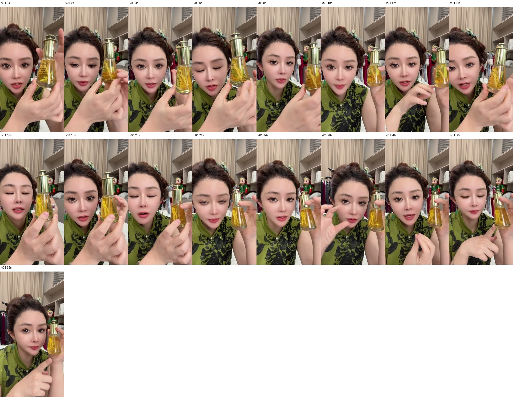 | ||||
| 待确认 | 待核查 | 待核查实词 待核查 近义扩展尚未扩展 | 近镜托瓶展示根状物 → 放瓶讲解、双掌贴颊并操作台面物品 → 滴管指向掌心，收工具并搓掌 → 双手上脸推抹 → 低头操作、重新举瓶 → 额头鼻侧两颊轮流推抹，双掌沿下颌/颈侧停留 → 补充讲解，举白色瓶和人参油同框 表情目光：概览中可见朝镜头、看手中物或侧看；未逐段量化视线，表情不等同已核实情绪。 安排时机：需核对台词后确定 | 待补全 单次情境样例 7 次观察 · 1 个来源组 |
查看原话、视频和动作过程完整日常护理节奏与下颌颈部衔接；中间容许低头取放。 已确认真人来源，仅保存视觉动作；不认定语言、情绪、手势之间的习惯关系。 待补全原因：尚未对原声听审、区分说话人或核对原话/语气/动作对应。ASR存在明显错字，不能用于ready关联。
原片证据 · 0–4 秒白长袖衣帽间；视频原声ASR候选，可能混入旁人，不做本人逐字定稿。 待核查文字：看到没有,有一个人生,真的一个大人生 当时语气：待核查 台词与动作的关系：待核查 打开原片并定位来源：20261109-ginseng-daily-v02 · 独立来源组：20261109-ginseng-daily-v02 原片证据 · 4–20 秒白长袖衣帽间；视频原声ASR候选，可能混入旁人，不做本人逐字定稿。 待核查文字：看到没有,有一个人生,真的一个大人生 然后,真的,就出通话,你啥也没有,你有一个人生有点够了 有点人生有点深深感,我也要了,我也要了,深深感太干了 你就用油润最好的办法 你嘴干的时候行吗,你不把油润用吗 当时语气：待核查 台词与动作的关系：待核查 打开原片并定位来源：20261109-ginseng-daily-v02 · 独立来源组：20261109-ginseng-daily-v02 原片证据 · 20–28 秒白长袖衣帽间；视频原声ASR候选，可能混入旁人，不做本人逐字定稿。 待核查文字：你嘴干的时候行吗,你不把油润用吗 有点麻烦 太尴尬了 当时语气：待核查 台词与动作的关系：待核查 打开原片并定位来源：20261109-ginseng-daily-v02 · 独立来源组：20261109-ginseng-daily-v02 原片证据 · 28–34 秒白长袖衣帽间；视频原声ASR候选，可能混入旁人，不做本人逐字定稿。 待核查文字：有点麻烦 太尴尬了 到处都需要游泳了 行吗 泡完脚也没有感觉就是泡脚 你怎么沾水干的 当时语气：待核查 台词与动作的关系：待核查 打开原片并定位来源：20261109-ginseng-daily-v02 · 独立来源组：20261109-ginseng-daily-v02 原片证据 · 34–44 秒白长袖衣帽间；视频原声ASR候选，可能混入旁人，不做本人逐字定稿。 待核查文字：你怎么沾水干的 你还是赶 这游泳划算了 就这瓶全身漏了 当时语气：待核查 台词与动作的关系：待核查 打开原片并定位来源：20261109-ginseng-daily-v02 · 独立来源组：20261109-ginseng-daily-v02 原片证据 · 44–68 秒白长袖衣帽间；视频原声ASR候选，可能混入旁人，不做本人逐字定稿。 待核查文字：再来一瓶 眼睛上的肛瑞修的地方一定要太抖 這個肝皮用了 当时语气：待核查 台词与动作的关系：待核查 打开原片并定位来源：20261109-ginseng-daily-v02 · 独立来源组：20261109-ginseng-daily-v02 原片证据 · 68–79.923 秒白长袖衣帽间；视频原声ASR候选，可能混入旁人，不做本人逐字定稿。 待核查文字：好 可以了 這個打開這個水 它倆能這樣 当时语气：待核查 台词与动作的关系：待核查 打开原片并定位来源：20261109-ginseng-daily-v02 · 独立来源组：20261109-ginseng-daily-v02 抽帧证据（不代替连续播放和原声核查）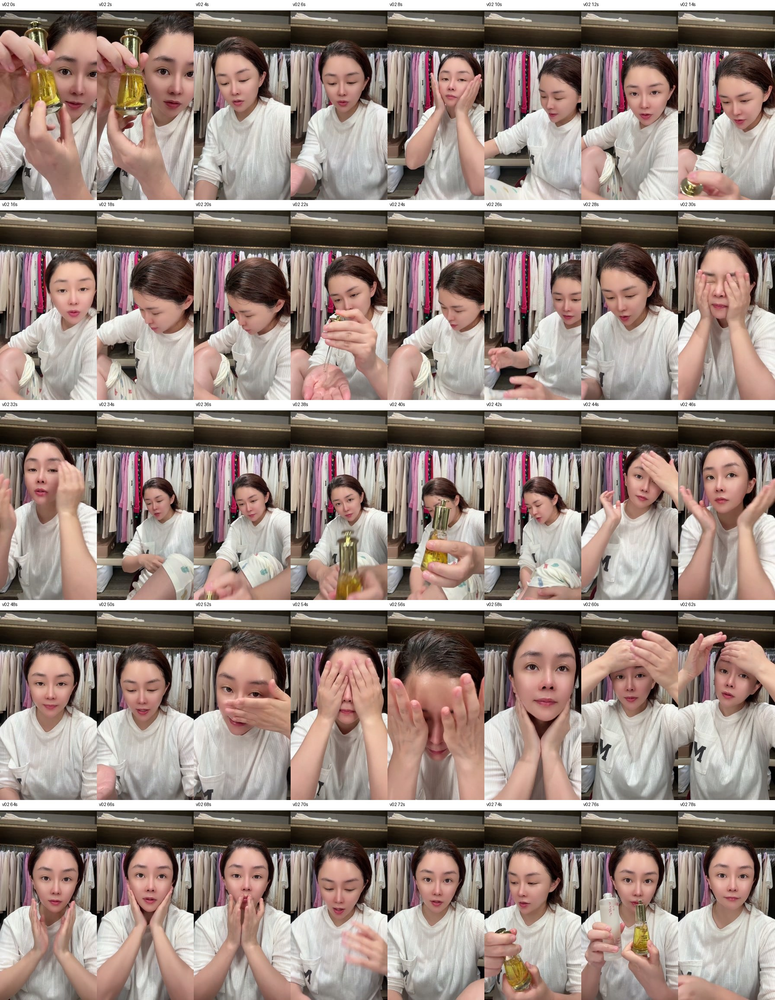 | ||||
| 待确认 | 待核查 | 待核查实词 待核查 近义扩展尚未扩展 | 托瓶近镜、转瓶看根状物 → 旋开提管至掌心，回瓶 → 双手额头两颊推抹，单手沿鼻侧和下颌细推 → 再次取油至掌心并搓开 → 继续面颊额头局部推抹，近镜停留 → 再次举瓶后放低，露出面部收尾 表情目光：概览中可见朝镜头、看手中物或侧看；未逐段量化视线，表情不等同已核实情绪。 安排时机：需核对台词后确定 | 待补全 单次情境样例 6 次观察 · 1 个来源组 |
查看原话、视频和动作过程单手局部与双手分区交替，不全程机械拍脸。 已确认真人来源，仅保存视觉动作；不认定语言、情绪、手势之间的习惯关系。 待补全原因：尚未对原声听审、区分说话人或核对原话/语气/动作对应。ASR存在明显错字，不能用于ready关联。
原片证据 · 0–10 秒紫色睡衣桌边侧坐；视频原声ASR候选，可能混入旁人，不做本人逐字定稿。 待核查文字：搭配一唇就好就用这个人参有了 里边真的有一个人参的 好玩吗 看 当时语气：待核查 台词与动作的关系：待核查 打开原片并定位来源：20261109-ginseng-daily-v03 · 独立来源组：20261109-ginseng-daily-v03 原片证据 · 10–18 秒紫色睡衣桌边侧坐；视频原声ASR候选，可能混入旁人，不做本人逐字定稿。 待核查文字：这也是在最后一口音乐 唱一首 人参味道 当时语气：待核查 台词与动作的关系：待核查 打开原片并定位来源：20261109-ginseng-daily-v03 · 独立来源组：20261109-ginseng-daily-v03 原片证据 · 18–46 秒紫色睡衣桌边侧坐；视频原声ASR候选，可能混入旁人，不做本人逐字定稿。 待核查文字：出来吧 上车来吧 宝宝 卖走到妈妈这儿来 人呢 月圆 当时语气：待核查 台词与动作的关系：待核查 打开原片并定位来源：20261109-ginseng-daily-v03 · 独立来源组：20261109-ginseng-daily-v03 原片证据 · 46–52 秒紫色睡衣桌边侧坐；视频原声ASR候选，可能混入旁人，不做本人逐字定稿。 待核查文字：人呢 月圆 妈呀 我不知道 找了半天没找到 当时语气：待核查 台词与动作的关系：待核查 打开原片并定位来源：20261109-ginseng-daily-v03 · 独立来源组：20261109-ginseng-daily-v03 原片证据 · 52–76 秒紫色睡衣桌边侧坐；视频原声ASR候选，可能混入旁人，不做本人逐字定稿。 待核查文字：找了半天没找到 房间也没有 太复复复复复复复复复复复复复复复复复复复复复复复复复复复复复复复复 快出来 大姑抱紧了 抱紧了 大姑抱紧了 大姑吓死了 大姑在哭啊 找不着了 找不着了 找不着了 这家里边浮夸的眼镜 怎么找不着了 老外书 好了 人生有 有需要自己拍 当时语气：待核查 台词与动作的关系：待核查 打开原片并定位来源：20261109-ginseng-daily-v03 · 独立来源组：20261109-ginseng-daily-v03 原片证据 · 76–82.57 秒紫色睡衣桌边侧坐；视频原声ASR候选，可能混入旁人，不做本人逐字定稿。 待核查文字：有需要自己拍 当时语气：待核查 台词与动作的关系：待核查 打开原片并定位来源：20261109-ginseng-daily-v03 · 独立来源组：20261109-ginseng-daily-v03 | ||||
| 待确认 | 待核查 | 待核查实词 待核查 近义扩展尚未扩展 | 闭盖托瓶近镜 → 开瓶并提管至掌心 → 单手面颊鼻侧额头下巴推抹 → 回瓶、再举瓶展示 → 画面构图变化后近镜侧脸、触颊和指腹局部推抹 表情目光：概览中可见朝镜头、看手中物或侧看；未逐段量化视线，表情不等同已核实情绪。 安排时机：需核对台词后确定 | 待补全 单次情境样例 5 次观察 · 1 个来源组 |
查看原话、视频和动作过程单手跨区域连续涂抹，后段侧脸留出观察时间。 已确认真人来源，仅保存视觉动作；不认定语言、情绪、手势之间的习惯关系。 待补全原因：尚未对原声听审、区分说话人或核对原话/语气/动作对应。ASR存在明显错字，不能用于ready关联。
原片证据 · 0–4 秒黑T恤灰墙；视频原声ASR候选，可能混入旁人，不做本人逐字定稿。 待核查文字：脸上干润细纹的确实还缺油 才能够俩 缺油啊 当时语气：待核查 台词与动作的关系：待核查 打开原片并定位来源：20261109-ginseng-daily-v04 · 独立来源组：20261109-ginseng-daily-v04 原片证据 · 4–12 秒黑T恤灰墙；视频原声ASR候选，可能混入旁人，不做本人逐字定稿。 待核查文字：缺油啊 尤其下面眼睛上面都是干润的 原来油瓶比较干润 我今天脸的话就是 嗯 比较灵感的 当时语气：待核查 台词与动作的关系：待核查 打开原片并定位来源：20261109-ginseng-daily-v04 · 独立来源组：20261109-ginseng-daily-v04 原片证据 · 12–28 秒黑T恤灰墙；视频原声ASR候选，可能混入旁人，不做本人逐字定稿。 待核查文字：我今天脸的话就是 嗯 比较灵感的 我就立马上照这个油 睫脚的眼后和浮上就完事了 你们要说 我今天把嘴都浮上了 他嘴都干了 我们公司有的时候 主播一天 用了四四到五次的脸 实在不行啊 我就让他们去把这个油浮在脸上 当时语气：待核查 台词与动作的关系：待核查 打开原片并定位来源：20261109-ginseng-daily-v04 · 独立来源组：20261109-ginseng-daily-v04 原片证据 · 28–34 秒黑T恤灰墙；视频原声ASR候选，可能混入旁人，不做本人逐字定稿。 待核查文字：我就让他们去把这个油浮在脸上 立刻去继续 看 好漂亮 当时语气：待核查 台词与动作的关系：待核查 打开原片并定位来源：20261109-ginseng-daily-v04 · 独立来源组：20261109-ginseng-daily-v04 原片证据 · 34–52.524 秒黑T恤灰墙；视频原声ASR候选，可能混入旁人，不做本人逐字定稿。 待核查文字：好漂亮 给大家做活动 我需要自己拍 秋冬的调天食堂调片玩 办公几颗调 掰 我都不用这洗手人的 我土耗一层 肩脸太有点敏了 赶快的护照 当时语气：待核查 台词与动作的关系：待核查 打开原片并定位来源：20261109-ginseng-daily-v04 · 独立来源组：20261109-ginseng-daily-v04 抽帧证据（不代替连续播放和原声核查）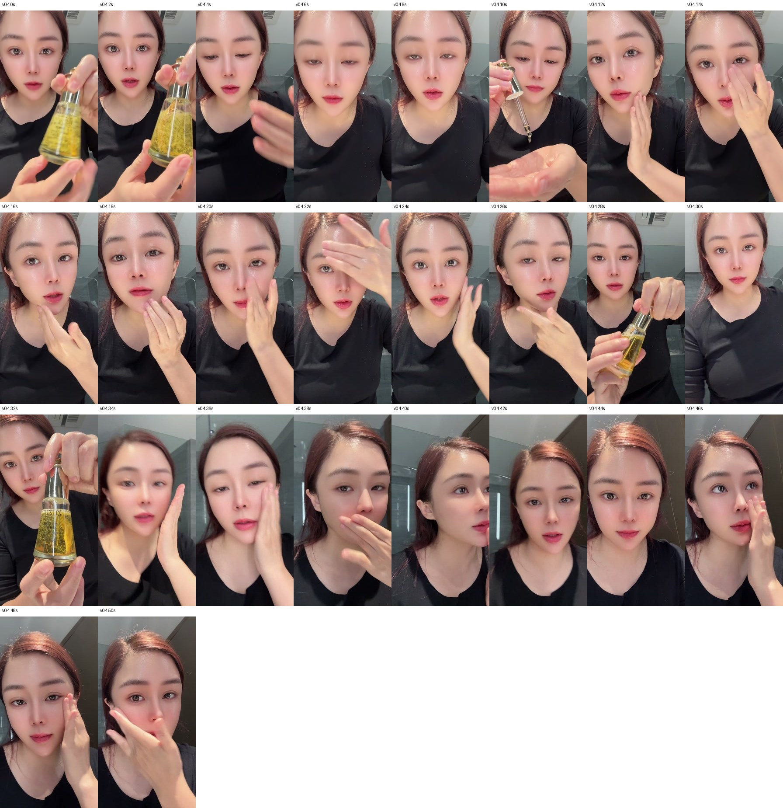 | ||||
| 待确认 | 待核查 | 待核查实词 待核查 近义扩展尚未扩展 | 从空手进入举瓶、转动瓶身 → 瓶在脸侧升降前后移动，交替看瓶与镜头 → 收瓶、前倾面向镜头讲解 表情目光：概览中可见朝镜头、看手中物或侧看；未逐段量化视线，表情不等同已核实情绪。 安排时机：需核对台词后确定 | 待补全 单次情境样例 3 次观察 · 1 个来源组 |
查看原话、视频和动作过程持品口播通过远近与视线变化丰富画面。 已确认真人来源，仅保存视觉动作；不认定语言、情绪、手势之间的习惯关系。 待补全原因：尚未对原声听审、区分说话人或核对原话/语气/动作对应。ASR存在明显错字，不能用于ready关联。
原片证据 · 0–8 秒绿黑旗袍单人；视频原声ASR候选，可能混入旁人，不做本人逐字定稿。 待核查文字：人家强烈推荐咱家人身有 人家有代犯的脸干嘛 干皮的最爱 刚才采耳朵睡了一觉 当时语气：待核查 台词与动作的关系：待核查 打开原片并定位来源：20261109-ginseng-daily-v05 · 独立来源组：20261109-ginseng-daily-v01 原片证据 · 8–22 秒绿黑旗袍单人；视频原声ASR候选，可能混入旁人，不做本人逐字定稿。 待核查文字：刚才采耳朵睡了一觉 在我自己公司办公室采耳朵过来 这看到人生了吗 带人身的有女婉的小脸老 嫩了 调面膜脸 嘎嘎嘀嘀嘀 当时语气：待核查 台词与动作的关系：待核查 打开原片并定位来源：20261109-ginseng-daily-v05 · 独立来源组：20261109-ginseng-daily-v01 原片证据 · 22–27.918 秒绿黑旗袍单人；视频原声ASR候选，可能混入旁人，不做本人逐字定稿。 待核查文字：嘎嘎嘀嘀嘀 有消息不点心希望自己拍 陈希 当时语气：待核查 台词与动作的关系：待核查 打开原片并定位来源：20261109-ginseng-daily-v05 · 独立来源组：20261109-ginseng-daily-v01 抽帧证据（不代替连续播放和原声核查）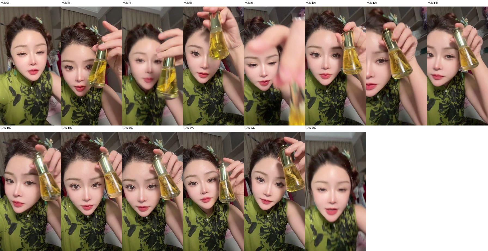 | ||||
| 待确认 | 待核查 | 待核查实词 待核查 近义扩展尚未扩展 | 瓶在脸侧讲解，轻转展示 → 指尖触鼻侧、滴管靠额头，随后放低 → 手指横向推抹额头并接触面颊 → 近镜指示鼻侧和额头，继续交流 表情目光：概览中可见朝镜头、看手中物或侧看；未逐段量化视线，表情不等同已核实情绪。 安排时机：需核对台词后确定 | 待补全 单次情境样例 4 次观察 · 1 个来源组 |
查看原话、视频和动作过程生活化半躺视角、额头局部操作。 已确认真人来源，仅保存视觉动作；不认定语言、情绪、手势之间的习惯关系。 待补全原因：尚未对原声听审、区分说话人或核对原话/语气/动作对应。ASR存在明显错字，不能用于ready关联。
原片证据 · 0–16 秒紫睡衣床上半躺；视频原声ASR候选，可能混入旁人，不做本人逐字定稿。 待核查文字：人参里边把人参放在油里 这个是真正的人参油 妈妈你看 我们家最适合干皮来用的 这个油饼的很热很热 妈妈你看 当时语气：待核查 台词与动作的关系：待核查 打开原片并定位来源：20261109-ginseng-daily-v06 · 独立来源组：20261109-ginseng-daily-v06 原片证据 · 16–24 秒紫睡衣床上半躺；视频原声ASR候选，可能混入旁人，不做本人逐字定稿。 待核查文字：妈妈你看 哇 太厉害了 最热的那一款 为什么那么神奇 妈妈这样就是变小 当时语气：待核查 台词与动作的关系：待核查 打开原片并定位来源：20261109-ginseng-daily-v06 · 独立来源组：20261109-ginseng-daily-v06 原片证据 · 24–34 秒紫睡衣床上半躺；视频原声ASR候选，可能混入旁人，不做本人逐字定稿。 待核查文字：妈妈这样就是变小 哇 太好玩了 就干了洗衣服里用多去用些油 咖啡的地方用些油 把这摄像这个水油 当时语气：待核查 台词与动作的关系：待核查 打开原片并定位来源：20261109-ginseng-daily-v06 · 独立来源组：20261109-ginseng-daily-v06 原片证据 · 34–40.3333 秒紫睡衣床上半躺；视频原声ASR候选，可能混入旁人，不做本人逐字定稿。 待核查文字：把这摄像这个水油 人生又给它搬来就需要自己拍 当时语气：待核查 台词与动作的关系：待核查 打开原片并定位来源：20261109-ginseng-daily-v06 · 独立来源组：20261109-ginseng-daily-v06 抽帧证据（不代替连续播放和原声核查）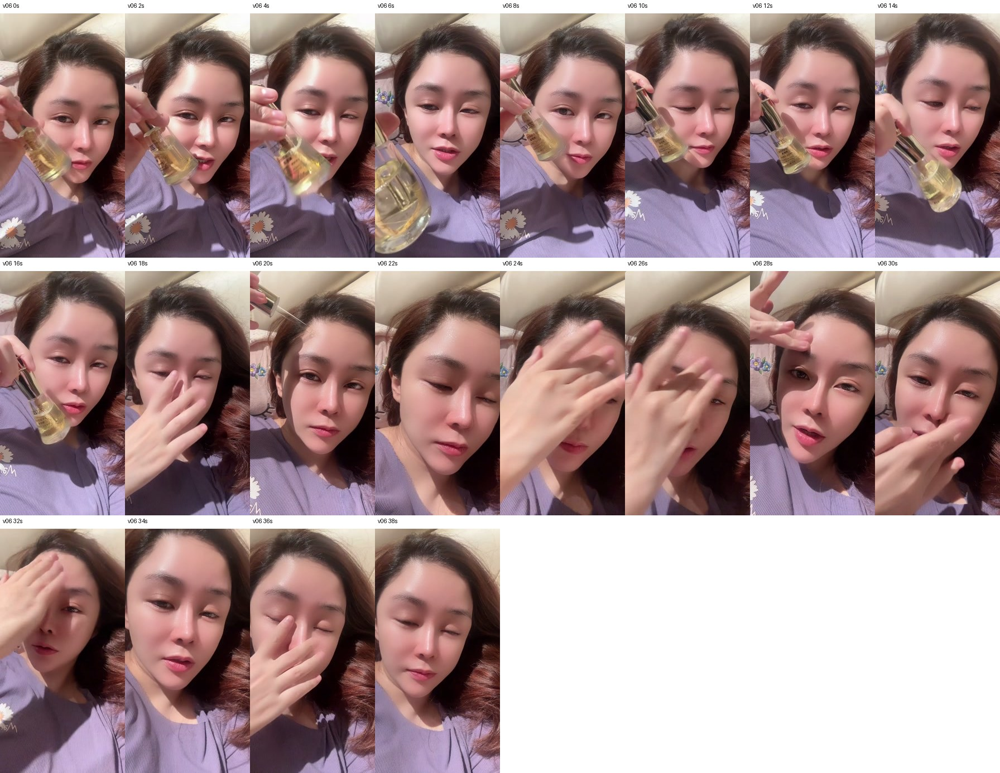 | ||||
| 待确认 | 待核查 | 待核查实词 待核查 近义扩展尚未扩展 | 持瓶触颊开场，托底转瓶 → 另拿喷雾对面部喷洒、双手轻按 → 举人参油并用手机灯从瓶底照亮 → 放手机、提管取用、搓掌 → 两颊鼻侧额头持续推抹与按压，穿插离手 → 放低双手讲解、捏指和指示面颊鼻侧，指向下方收尾 表情目光：概览中可见朝镜头、看手中物或侧看；未逐段量化视线，表情不等同已核实情绪。 安排时机：需核对台词后确定 | 待补全 单次情境样例 6 次观察 · 1 个来源组 |
查看原话、视频和动作过程内容物展示与实际使用分成两段；手部操作跨多句。 已确认真人来源，仅保存视觉动作；不认定语言、情绪、手势之间的习惯关系。 待补全原因：尚未对原声听审、区分说话人或核对原话/语气/动作对应。ASR存在明显错字，不能用于ready关联。
原片证据 · 0–10 秒卡通睡衣衣帽间；视频原声ASR候选，可能混入旁人，不做本人逐字定稿。 待核查文字：用安逸唇的脸上很紧很紧的也很细腻 大家能看得到的量 抱完皮了 我这次抱了皮了 那我就是会觉得干 干皮就会觉得干 油瓶会觉得超喜欢 当时语气：待核查 台词与动作的关系：待核查 打开原片并定位来源：20261109-ginseng-daily-v07 · 独立来源组：20261109-ginseng-daily-v07 原片证据 · 10–18 秒卡通睡衣衣帽间；视频原声ASR候选，可能混入旁人，不做本人逐字定稿。 待核查文字：油瓶会觉得超喜欢 那这个我用油的习惯是一定要用水的 当然大家可以不用水 但我是一定要用水的 当时语气：待核查 台词与动作的关系：待核查 打开原片并定位来源：20261109-ginseng-daily-v07 · 独立来源组：20261109-ginseng-daily-v07 原片证据 · 18–34 秒卡通睡衣衣帽间；视频原声ASR候选，可能混入旁人，不做本人逐字定稿。 待核查文字：但我是一定要用水的 然后呢 这是大家的人生油 这人生油是给你们第一次做这个活动的 你们可以打灯看一下这个效果 这个就是大家今天有看卖风了 卖海了是不是 可下等了给你们做活动呢 这咱家的人生有肉啊 当时语气：待核查 台词与动作的关系：待核查 打开原片并定位来源：20261109-ginseng-daily-v07 · 独立来源组：20261109-ginseng-daily-v07 原片证据 · 34–44 秒卡通睡衣衣帽间；视频原声ASR候选，可能混入旁人，不做本人逐字定稿。 待核查文字：这咱家的人生有肉啊 然后再手上给它加热一下 你也可以调到面膜里 看我接着点亮吧 又亮又透的 我家粉丝说千万别再加这个品啊 当时语气：待核查 台词与动作的关系：待核查 打开原片并定位来源：20261109-ginseng-daily-v07 · 独立来源组：20261109-ginseng-daily-v07 原片证据 · 44–88 秒卡通睡衣衣帽间；视频原声ASR候选，可能混入旁人，不做本人逐字定稿。 待核查文字：我家粉丝说千万别再加这个品啊 太好用了 这款的话是咱家有对味的 哎呦你妈呀 有有有有 最少几块钱人生都被倒了啊 看你们想做到啥程度 我是需要多热一点 因为我实在是脸太干了 用了一唇的脸 一唇爆了一层皮吗 你们看我之前的视频 爆了一层皮 所以我的脸现在就 很紧很亮很透 但是有个问题就是 干皮你爆一层皮的话 你就会觉得干 你到一模美 你上周门的话 不也是跟你爆一层皮吗 啪啪啪 打几下的时候 你耗一千 然后告你回去 再两天 注意多用面膜 注意保持护水 然后我把这个油 压一下 当时语气：待核查 台词与动作的关系：待核查 打开原片并定位来源：20261109-ginseng-daily-v07 · 独立来源组：20261109-ginseng-daily-v07 原片证据 · 88–110.272 秒卡通睡衣衣帽间；视频原声ASR候选，可能混入旁人，不做本人逐字定稿。 待核查文字：哎呀 真的 原本这两天连紧的都不行了 就是你不太适应的那个底层给你处理胶圆 胶圆的话就是让你的脸的话能够就是往上去走 往上去提 很紧致 但是就有一个问题 干批 干批 干批你就觉得干啊 今天又是急救的一天 给你们做活动啊 今天这个是金正车假活动不是天地友的 给你们做活动大家就转眼楼点击这里哦 当时语气：待核查 台词与动作的关系：待核查 打开原片并定位来源：20261109-ginseng-daily-v07 · 独立来源组：20261109-ginseng-daily-v07 | ||||
| 待确认 | 待核查 | 待核查实词 待核查 近义扩展尚未扩展 | 托瓶指参、转瓶和短幅摇动 → 手机灯置瓶底，前后轻移展示根状物 → 看向桌面并继续持瓶讲解 表情目光：概览中可见朝镜头、看手中物或侧看；未逐段量化视线，表情不等同已核实情绪。 安排时机：需核对台词后确定 | 待补全 单次情境样例 3 次观察 · 1 个来源组 |
查看原话、视频和动作过程通过透光展示瓶内结构，给产品介绍一个可见依据。 已确认真人来源，仅保存视觉动作；不认定语言、情绪、手势之间的习惯关系。 待补全原因：尚未对原声听审、区分说话人或核对原话/语气/动作对应。ASR存在明显错字，不能用于ready关联。
原片证据 · 0–12 秒红花旗袍衣帽间；视频原声ASR候选，可能混入旁人，不做本人逐字定稿。 待核查文字：你们问我家最润的游戏那一款就是这一款 但是我们在现在所有的大号没有小科单了 然后呢这个号的话是跟大家专门给大家带一下 这个百元以内的报片就在人身游 当时语气：待核查 台词与动作的关系：待核查 打开原片并定位来源：20261109-ginseng-daily-v08 · 独立来源组：20261109-ginseng-daily-v08 原片证据 · 12–28 秒红花旗袍衣帽间；视频原声ASR候选，可能混入旁人，不做本人逐字定稿。 待核查文字：这个百元以内的报片就在人身游 这是我家最润的一款游戏 没有更容易了 所以你再外面说点干 用哪一个 水就用粉水 游戏就用这个 人身游里边真的有一颗人身游 当时语气：待核查 台词与动作的关系：待核查 打开原片并定位来源：20261109-ginseng-daily-v08 · 独立来源组：20261109-ginseng-daily-v08 原片证据 · 28–32.485 秒红花旗袍衣帽间；视频原声ASR候选，可能混入旁人，不做本人逐字定稿。 待核查文字：有需要给你们自己拍 表面玻璃特别好 当时语气：待核查 台词与动作的关系：待核查 打开原片并定位来源：20261109-ginseng-daily-v08 · 独立来源组：20261109-ginseng-daily-v08 抽帧证据（不代替连续播放和原声核查）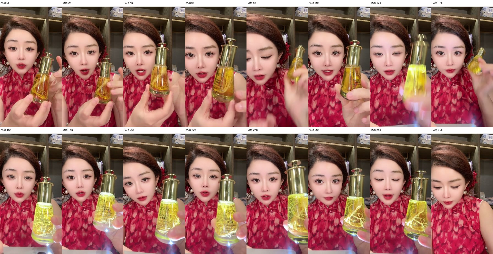 | ||||
| 待确认 | 待核查 | 待核查实词 待核查 近义扩展尚未扩展 | 举瓶展示后放低 → 滴管至掌心、放工具、搓掌 → 单手额头起步转双手全脸；期间出现蓝色配套盒 → 举瓶后放下继续讲解 → 再次双手额头两颊鼻侧推抹按压 → 单手面颊、下巴和鼻侧展示 → 瓶举到脸侧，另一手指示鼻侧面颊收尾 表情目光：概览中可见朝镜头、看手中物或侧看；未逐段量化视线，表情不等同已核实情绪。 安排时机：需核对台词后确定 | 待补全 单次情境样例 7 次观察 · 1 个来源组 |
查看原话、视频和动作过程先完成操作，再让瓶与皮肤展示同框。 已确认真人来源，仅保存视觉动作；不认定语言、情绪、手势之间的习惯关系。 待补全原因：尚未对原声听审、区分说话人或核对原话/语气/动作对应。ASR存在明显错字，不能用于ready关联。
原片证据 · 0–6 秒白雏菊睡衣红发夹衣帽间；视频原声ASR候选，可能混入旁人，不做本人逐字定稿。 待核查文字：用了A純刚刚摸了一个神经线的修处 待会现在马上又用个油 别的油还不行 整个现在我只能用这个人身油 当时语气：待核查 台词与动作的关系：待核查 打开原片并定位来源：20261109-ginseng-daily-v09 · 独立来源组：20261109-ginseng-daily-v09 原片证据 · 6–14 秒白雏菊睡衣红发夹衣帽间；视频原声ASR候选，可能混入旁人，不做本人逐字定稿。 待核查文字：整个现在我只能用这个人身油 太淡了 你看蓝色胎也是修复的 但蓝色胎跟A純不能一起使用 当时语气：待核查 台词与动作的关系：待核查 打开原片并定位来源：20261109-ginseng-daily-v09 · 独立来源组：20261109-ginseng-daily-v09 原片证据 · 14–32 秒白雏菊睡衣红发夹衣帽间；视频原声ASR候选，可能混入旁人，不做本人逐字定稿。 待核查文字：但蓝色胎跟A純不能一起使用 所以就说你叫蓝色胎的水人说 哎那我家里有蓝色胎水人用的 不能 功效护肤值关键 不要自己下刀 都是在功效的 你们买的过功过的 啥都打啥都行 无所谓 但是没有功效的 赶紧拿我的人参油啊 当时语气：待核查 台词与动作的关系：待核查 打开原片并定位来源：20261109-ginseng-daily-v09 · 独立来源组：20261109-ginseng-daily-v09 原片证据 · 32–40 秒白雏菊睡衣红发夹衣帽间；视频原声ASR候选，可能混入旁人，不做本人逐字定稿。 待核查文字：赶紧拿我的人参油啊 我总感觉泡的时间越长 应该越浓 整个脸太干了 当时语气：待核查 台词与动作的关系：待核查 打开原片并定位来源：20261109-ginseng-daily-v09 · 独立来源组：20261109-ginseng-daily-v09 原片证据 · 40–58 秒白雏菊睡衣红发夹衣帽间；视频原声ASR候选，可能混入旁人，不做本人逐字定稿。 待核查文字：干的都不行了 因为它就是 给你收毛孔 我就要你训练英文尾 为什么给你抱同皮之后 你要 这一周要让你亲服面膜呢 超干 可能今天我带了一天妆 今天去那个化妆了吗 当时语气：待核查 台词与动作的关系：待核查 打开原片并定位来源：20261109-ginseng-daily-v09 · 独立来源组：20261109-ginseng-daily-v09 原片证据 · 58–72 秒白雏菊睡衣红发夹衣帽间；视频原声ASR候选，可能混入旁人，不做本人逐字定稿。 待核查文字：今天去那个化妆了吗 太尷尬了 要命了要命了 好 舒服多了舒服多了 健身油给你们做活动吧 当时语气：待核查 台词与动作的关系：待核查 打开原片并定位来源：20261109-ginseng-daily-v09 · 独立来源组：20261109-ginseng-daily-v09 原片证据 · 72–88.1333 秒白雏菊睡衣红发夹衣帽间；视频原声ASR候选，可能混入旁人，不做本人逐字定稿。 待核查文字：健身油一直都没有给你们做过这么低的活动 我说了一下刚刚的下午你们点在这去一看 让你们不过百能拿到几瓶 我让你们没有用过油 东东区用起来的油 给大家倒床 不过百 四瓶 点这 当时语气：待核查 台词与动作的关系：待核查 打开原片并定位来源：20261109-ginseng-daily-v09 · 独立来源组：20261109-ginseng-daily-v09 | ||||
| 待确认 | 待核查 | 待核查实词 待核查 近义扩展尚未扩展 | 手机底光照瓶、翻转观察根状物 → 开瓶提管对准手背 → 指腹在手背推匀，举近手背展示 → 合掌、竖指和空手讲解 → 举瓶脸侧后手指向镜头收尾 表情目光：概览中可见朝镜头、看手中物或侧看；未逐段量化视线，表情不等同已核实情绪。 安排时机：需核对台词后确定 | 待补全 单次情境样例 5 次观察 · 1 个来源组 |
查看原话、视频和动作过程手背试油给穿妆出镜提供替代面部操作的路线。 已确认真人来源，仅保存视觉动作；不认定语言、情绪、手势之间的习惯关系。 待补全原因：尚未对原声听审、区分说话人或核对原话/语气/动作对应。ASR存在明显错字，不能用于ready关联。
原片证据 · 0–10 秒浅金旗袍衣帽间；视频原声ASR候选，可能混入旁人，不做本人逐字定稿。 待核查文字：姐妹这啥呀 人是油啊 你干的话用手解决不了 你说干皮和油皮之间的话 它确实是水吗 确实是油 对不对 你嘴干的话 当时语气：待核查 台词与动作的关系：待核查 打开原片并定位来源：20261109-ginseng-daily-v10 · 独立来源组：20261109-ginseng-daily-v10 原片证据 · 10–16 秒浅金旗袍衣帽间；视频原声ASR候选，可能混入旁人，不做本人逐字定稿。 待核查文字：你嘴干的话 一千块盐的水 让你去个干吗 没有 你要用啥 用油油皮不卖 再一个 纸卖干皮 红品刺激姐妹 当时语气：待核查 台词与动作的关系：待核查 打开原片并定位来源：20261109-ginseng-daily-v10 · 独立来源组：20261109-ginseng-daily-v10 原片证据 · 16–22 秒浅金旗袍衣帽间；视频原声ASR候选，可能混入旁人，不做本人逐字定稿。 待核查文字：红品刺激姐妹 是不是缺油了 晚上是要练出啥的 出油了 所以一定要对油人认知 当时语气：待核查 台词与动作的关系：待核查 打开原片并定位来源：20261109-ginseng-daily-v10 · 独立来源组：20261109-ginseng-daily-v10 原片证据 · 22–32 秒浅金旗袍衣帽间；视频原声ASR候选，可能混入旁人，不做本人逐字定稿。 待核查文字：再有底线干皮 底线干皮油皮不卖 啊 脚后跟那张干 你说你泡脚泡五年 天天用水有用吗 没有用 所以你就用一杯水 你干味儿下少了吗 你没少 当时语气：待核查 台词与动作的关系：待核查 打开原片并定位来源：20261109-ginseng-daily-v10 · 独立来源组：20261109-ginseng-daily-v10 原片证据 · 32–40.798 秒浅金旗袍衣帽间；视频原声ASR候选，可能混入旁人，不做本人逐字定稿。 待核查文字：所以你就用一杯水 你干味儿下少了吗 你没少 用啥呀 行吧 用油 抖它 就用它 没扎上来 你打发你干 你就用这油 当时语气：待核查 台词与动作的关系：待核查 打开原片并定位来源：20261109-ginseng-daily-v10 · 独立来源组：20261109-ginseng-daily-v10 抽帧证据（不代替连续播放和原声核查）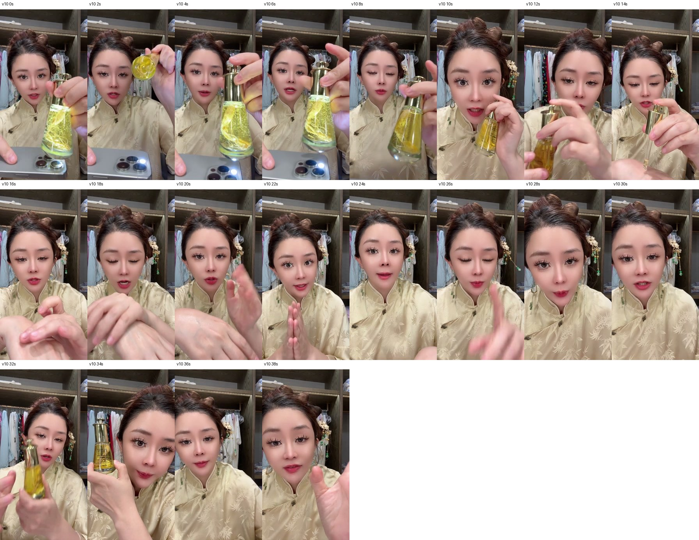 | ||||
| 待确认 | 待核查 | 待核查实词 待核查 近义扩展尚未扩展 | 手机照瓶，油与粉色面膜袋同框 → 放下工具、讲解、开面膜袋和台面取用 → 先单手推抹面颊额头下巴 → 从袋中取出展开面膜，贴到脸上并揭去外层网状/承托片 → 沿鼻翼下巴面颊抚平贴合 → 低头拿袋/取用，手指在面部局部操作 → 指尖眼下鼻侧及双掌面部按压 → 离手讲解、侧看、指向镜头或下方 表情目光：概览中可见朝镜头、看手中物或侧看；未逐段量化视线，表情不等同已核实情绪。 安排时机：需核对台词后确定 | 待补全 单次情境样例 8 次观察 · 1 个来源组 |
查看原话、视频和动作过程长流程可分为油前打底、贴膜与后续按摩；展示完成状态。 已确认真人来源，仅保存视觉动作；不认定语言、情绪、手势之间的习惯关系。 待补全原因：尚未对原声听审、区分说话人或核对原话/语气/动作对应。ASR存在明显错字，不能用于ready关联。
原片证据 · 0–10 秒卡通睡衣衣帽间；视频原声ASR候选，可能混入旁人，不做本人逐字定稿。 待核查文字：这是咱家的人参油 我今天不是跟大家说我抱了一层皮了吗 用完一唇 那这个我今天要把人参油和咱家的面膜调到一起 当时语气：待核查 台词与动作的关系：待核查 打开原片并定位来源：20261109-ginseng-daily-v11 · 独立来源组：20261109-ginseng-daily-v07 原片证据 · 10–40 秒卡通睡衣衣帽间；视频原声ASR候选，可能混入旁人，不做本人逐字定稿。 待核查文字：那这个我今天要把人参油和咱家的面膜调到一起 你的脸上可以先抹一层油 然后再拿这个人参油 你不是真的放了一颗人参呢 看到了吗 然后把人参油挤到我们的面膜里面 太淡了 用完一唇 就是你抱皮的话你就会觉得干 因为做的活动是历时到点了 从来没给过你这活动 然后有如何咱家的无防红线的 有酒精的面膜它调的一起 不能有那种气性的 然后直接再点人敷补才能够敷 当时语气：待核查 台词与动作的关系：待核查 打开原片并定位来源：20261109-ginseng-daily-v11 · 独立来源组：20261109-ginseng-daily-v07 原片证据 · 40–50 秒卡通睡衣衣帽间；视频原声ASR候选，可能混入旁人，不做本人逐字定稿。 待核查文字：然后直接再点人敷补才能够敷 所以就一成爆皮漆的话 大家是用不了美白油了 因为都是强功耀损的 这个就是比如说在红血丝 然后讲抗粥 抗衰 气色不好 当时语气：待核查 台词与动作的关系：待核查 打开原片并定位来源：20261109-ginseng-daily-v11 · 独立来源组：20261109-ginseng-daily-v07 原片证据 · 50–68 秒卡通睡衣衣帽间；视频原声ASR候选，可能混入旁人，不做本人逐字定稿。 待核查文字：然后讲抗粥 抗衰 气色不好 脸发黄 去使用这块油 你要知道用20年的水没有效果 你要用油了 你可不是在用这个水的 然后就把这个 鱼肉和面包调在一起 啊 这小味 挺全的味道 当时语气：待核查 台词与动作的关系：待核查 打开原片并定位来源：20261109-ginseng-daily-v11 · 独立来源组：20261109-ginseng-daily-v07 原片证据 · 68–84 秒卡通睡衣衣帽间；视频原声ASR候选，可能混入旁人，不做本人逐字定稿。 待核查文字：把这个油和面包揉在一起 你们要是用美白油的话也用这个方法 非常复提 看到了吗 当时语气：待核查 台词与动作的关系：待核查 打开原片并定位来源：20261109-ginseng-daily-v11 · 独立来源组：20261109-ginseng-daily-v07 原片证据 · 84–110 秒卡通睡衣衣帽间；视频原声ASR候选，可能混入旁人，不做本人逐字定稿。 待核查文字：非常非常富贴咱们就是服装个10分钟可以了啊 我服面膏不准服15分钟 看 还有这么多 眼睛下面一定要带到啊 也干味咋来的 干味你这缺水啊还是缺油啊 自己想想 人油皮咋叫不叫干味呢 对不对 干味你这缺油啊 不叫缺水啊 当时语气：待核查 台词与动作的关系：待核查 打开原片并定位来源：20261109-ginseng-daily-v11 · 独立来源组：20261109-ginseng-daily-v07 原片证据 · 110–132 秒卡通睡衣衣帽间；视频原声ASR候选，可能混入旁人，不做本人逐字定稿。 待核查文字：这个人生油我觉得应该红到了它的季节了 尤其大东北的像条片霜呢 这个油就比别的油要更有油感一些 就不像别的嘛玩的就你现在吸出完了 这个就是你就我今天特别干我急救用它我就是这个油 当时语气：待核查 台词与动作的关系：待核查 打开原片并定位来源：20261109-ginseng-daily-v11 · 独立来源组：20261109-ginseng-daily-v07 原片证据 · 132–146.367 秒卡通睡衣衣帽间；视频原声ASR候选，可能混入旁人，不做本人逐字定稿。 待核查文字：这个就是你就我今天特别干我急救用它我就是这个油 不想多借这老房子 人生还用借这吗 人生交皮弄容脚都给商保了 有需要点这里啊 今天活动多点了啊 别再等了 当时语气：待核查 台词与动作的关系：待核查 打开原片并定位来源：20261109-ginseng-daily-v11 · 独立来源组：20261109-ginseng-daily-v07 | ||||
| 待确认 | 待核查 | 待核查实词 待核查 近义扩展尚未扩展 | 手机底光照瓶、转瓶或短摇 → 提滴管到手背并推抹，手背举近 → 提管至掌心，搓掌 → 触颊和空手讲解 → 再次闭盖转瓶透光展示 → 脸侧持瓶，指唇侧与手指强调收尾 表情目光：概览中可见朝镜头、看手中物或侧看；未逐段量化视线，表情不等同已核实情绪。 安排时机：需核对台词后确定 | 待补全 单次情境样例 6 次观察 · 1 个来源组 |
查看原话、视频和动作过程手背展示与掌心肤感讲解并用，收尾回产品。 已确认真人来源，仅保存视觉动作；不认定语言、情绪、手势之间的习惯关系。 待补全原因：尚未对原声听审、区分说话人或核对原话/语气/动作对应。ASR存在明显错字，不能用于ready关联。
原片证据 · 0–14 秒浅金旗袍衣帽间；视频原声ASR候选，可能混入旁人，不做本人逐字定稿。 待核查文字：见过吗 姐们 太漂亮了 这啥呀 加人参油啊 每一个里面都有这样的一个人参 卖飞了 还不了解人参油的姐们 看过来啊 这个呢就是调的面膜 当时语气：待核查 台词与动作的关系：待核查 打开原片并定位来源：20261109-ginseng-daily-v12 · 独立来源组：20261109-ginseng-daily-v10 原片证据 · 14–24 秒浅金旗袍衣帽间；视频原声ASR候选，可能混入旁人，不做本人逐字定稿。 待核查文字：这个呢就是调的面膜 然后呢或者是调的面霜 调的粉底液都超好用 万物皆可调 刚刚是戏本你告诉我来 你去水去油的 是不是去油的 当时语气：待核查 台词与动作的关系：待核查 打开原片并定位来源：20261109-ginseng-daily-v12 · 独立来源组：20261109-ginseng-daily-v10 原片证据 · 24–32 秒浅金旗袍衣帽间；视频原声ASR候选，可能混入旁人，不做本人逐字定稿。 待核查文字：你去水去油的 是不是去油的 你这个你大凡你的脸干啊 你有没有这种用面膜 你脸都疼的时候 我都说我好疼啊你们 当时语气：待核查 台词与动作的关系：待核查 打开原片并定位来源：20261109-ginseng-daily-v12 · 独立来源组：20261109-ginseng-daily-v10 原片证据 · 32–42 秒浅金旗袍衣帽间；视频原声ASR候选，可能混入旁人，不做本人逐字定稿。 待核查文字：我都说我好疼啊你们 你就把油用在你脸上之后 你再去用面膜 一定要知道眼睛下面干味儿 我说你是缺油来的 你绝对不是缺水来的 用啥 就用这个油 听懂吗 人家就是油啊 当时语气：待核查 台词与动作的关系：待核查 打开原片并定位来源：20261109-ginseng-daily-v12 · 独立来源组：20261109-ginseng-daily-v10 原片证据 · 42–52 秒浅金旗袍衣帽间；视频原声ASR候选，可能混入旁人，不做本人逐字定稿。 待核查文字：挺挂的 露一个 给大家看看 每一个里面都跟大家保证 你们有一颗人身啊 我总感觉是泡的越久效果又好 当时语气：待核查 台词与动作的关系：待核查 打开原片并定位来源：20261109-ginseng-daily-v12 · 独立来源组：20261109-ginseng-daily-v10 原片证据 · 52–64.97 秒浅金旗袍衣帽间；视频原声ASR候选，可能混入旁人，不做本人逐字定稿。 待核查文字：自己你试试 你就知道了 完美 就揣都入来的 能你嘴在咱一千块眼水没有用 你得用油是不是 就这个道理 所以要知道人家那时候要用油 当时语气：待核查 台词与动作的关系：待核查 打开原片并定位来源：20261109-ginseng-daily-v12 · 独立来源组：20261109-ginseng-daily-v10 抽帧证据（不代替连续播放和原声核查）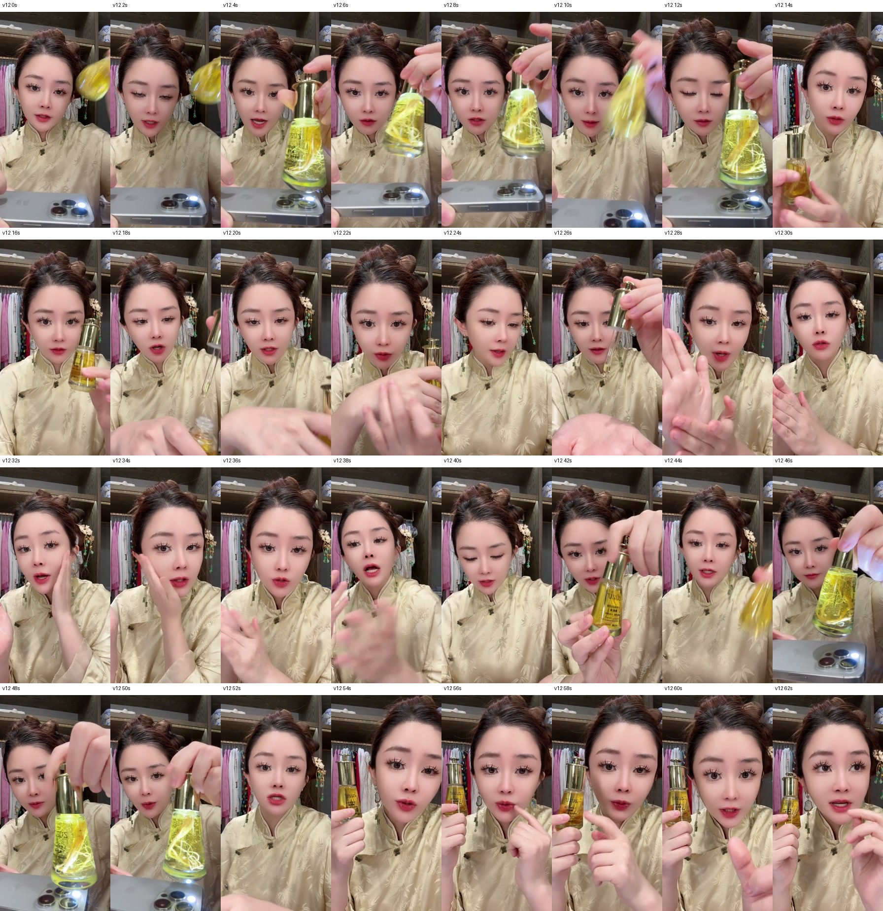 | ||||
| 待确认 | 待核查 | 待核查实词 待核查 近义扩展尚未扩展 | 托瓶近镜，与身后人短暂交流 → 手机底光照瓶，转瓶和前后移动展示根状物 → 放瓶后面向镜头交流收尾 表情目光：概览中可见朝镜头、看手中物或侧看；未逐段量化视线，表情不等同已核实情绪。 安排时机：需核对台词后确定 | 待补全 单次情境样例 3 次观察 · 1 个来源组 |
查看原话、视频和动作过程只提取前景初瑞雪的托瓶、指示与看镜头过程。 已确认真人来源，仅保存视觉动作；不认定语言、情绪、手势之间的习惯关系。 待补全原因：尚未对原声听审、区分说话人或核对原话/语气/动作对应。ASR存在明显错字，不能用于ready关联。
原片证据 · 0–6 秒绿黑旗袍、后方另一女性；视频原声ASR候选，可能混入旁人，不做本人逐字定稿。 待核查文字：脸肝用什么 人身油 人身油啊姐妹们 这个肝脾尤其是合格打个灯给大家看起来 当时语气：待核查 台词与动作的关系：待核查 打开原片并定位来源：20261109-ginseng-daily-v13 · 独立来源组：20261109-ginseng-daily-v01 原片证据 · 6–36 秒绿黑旗袍、后方另一女性；视频原声ASR候选，可能混入旁人，不做本人逐字定稿。 待核查文字：这个肝脾尤其是合格打个灯给大家看起来 姐妹们 就这 进来来把脸露起来 封面呢 姐妹们来 看不见满满的营养 还有粉丝问我了 俊姐 这个人身到最后能不能拿出来 炖菜呀姐妹们 都没完了 你要非那个喜不喜欢炖菜 我真不知道这些事 就这小人身油 我问你们小脸肝的时候 你涂得好不好事 眼膜里好不好使 风神紧盲 就这个人身油 你干皮就用这个 你要是油皮的话 你就用那个水油平衡的 当时语气：待核查 台词与动作的关系：待核查 打开原片并定位来源：20261109-ginseng-daily-v13 · 独立来源组：20261109-ginseng-daily-v01 原片证据 · 36–41.564 秒绿黑旗袍、后方另一女性；视频原声ASR候选，可能混入旁人，不做本人逐字定稿。 待核查文字：你就用那个水油平衡的 他俩我建议你们那个找用 这个碗就用风神了 当时语气：待核查 台词与动作的关系：待核查 打开原片并定位来源：20261109-ginseng-daily-v13 · 独立来源组：20261109-ginseng-daily-v01 抽帧证据（不代替连续播放和原声核查）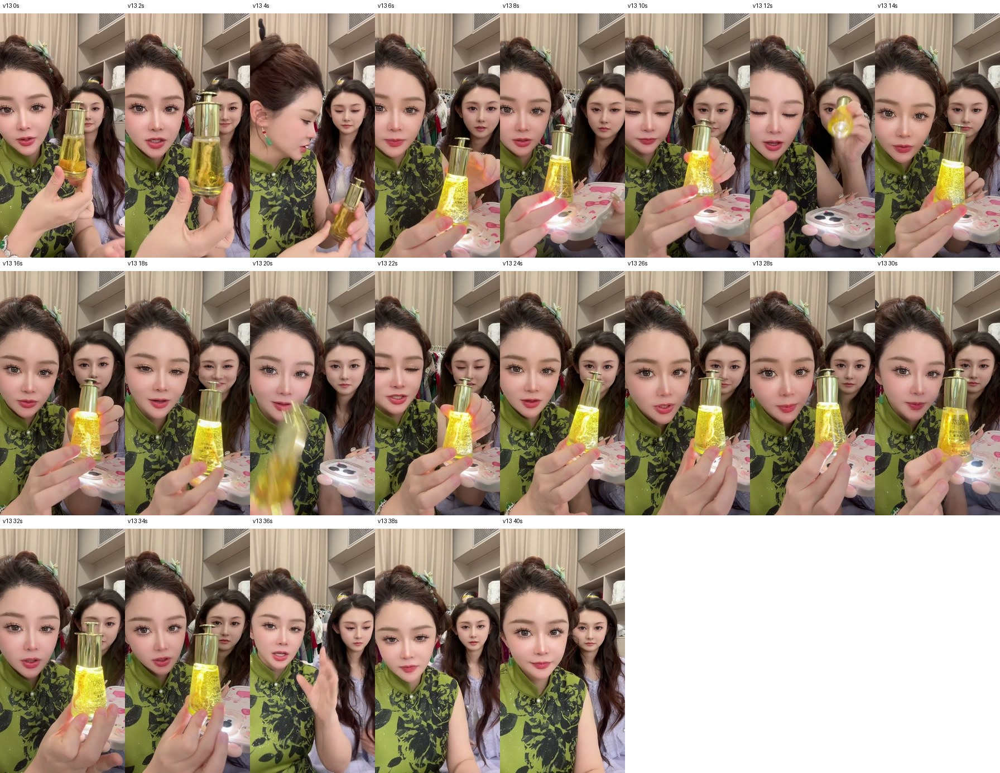 | ||||
| 待确认 | 待核查 | 待核查实词 待核查 近义扩展尚未扩展 | 双掌触脸、喷蓝色喷雾 → 使用另一透明滴管瓶、搓掌和全脸推抹 → 人参油举瓶、提管至掌心、搓开 → 双手全脸按压与讲解交替 → 展开并贴合面膜，沿边缘整理 → 面膜上调整下巴鼻翼额头并按压 → 面膜已不明显，拿纸巾擦手、局部触脸和讲解 表情目光：概览中可见朝镜头、看手中物或侧看；未逐段量化视线，表情不等同已核实情绪。 安排时机：需核对台词后确定 | 待补全 单次情境样例 7 次观察 · 1 个来源组 |
查看原话、视频和动作过程多产品流程中把人参油的取用与完成状态独立标明。 已确认真人来源，仅保存视觉动作；不认定语言、情绪、手势之间的习惯关系。 待补全原因：尚未对原声听审、区分说话人或核对原话/语气/动作对应。ASR存在明显错字，不能用于ready关联。
原片证据 · 0–10 秒白雏菊长袖白桌；视频原声ASR候选，可能混入旁人，不做本人逐字定稿。 待核查文字：敷个面膜 现在脸特别干 你们要这个敷面膜之前一定要先给脸补一下水 要有水 然后整个脸比较干一点 当时语气：待核查 台词与动作的关系：待核查 打开原片并定位来源：20261109-ginseng-daily-v14 · 独立来源组：20261109-ginseng-daily-v14 原片证据 · 10–34 秒白雏菊长袖白桌；视频原声ASR候选，可能混入旁人，不做本人逐字定稿。 待核查文字：要有水 然后整个脸比较干一点 所以就是我要用油 水油平衡 把这个油上下两层 这个摇一摇 咱家有很多油 这款的话就是比较 夏天都能用的 干啤啤都能用的 这波青的油 敷上油 你看 光敷了个油脸就亮得很过了 但我覺得我急救的話,我更適合用這個人身油 当时语气：待核查 台词与动作的关系：待核查 打开原片并定位来源：20261109-ginseng-daily-v14 · 独立来源组：20261109-ginseng-daily-v14 原片证据 · 34–44 秒白雏菊长袖白桌；视频原声ASR候选，可能混入旁人，不做本人逐字定稿。 待核查文字：但我覺得我急救的話,我更適合用這個人身油 就是急救,臉有紅油的保護膜 急救就找找找人身油了 我今天還是加大力度一下 因為我家的阿姨是我的臉 当时语气：待核查 台词与动作的关系：待核查 打开原片并定位来源：20261109-ginseng-daily-v14 · 独立来源组：20261109-ginseng-daily-v14 原片证据 · 44–68 秒白雏菊长袖白桌；视频原声ASR候选，可能混入旁人，不做本人逐字定稿。 待核查文字：因為我家的阿姨是我的臉 今天有一點乾 明天早上出國 人身油 敷在我的臉上 然後再拿出來面膜 你再去敷 这就是油敷面膜 让这个水分更好的吸收 水和油太在一起会现成皮肤膜 明天早上我见不散了 当时语气：待核查 台词与动作的关系：待核查 打开原片并定位来源：20261109-ginseng-daily-v14 · 独立来源组：20261109-ginseng-daily-v14 原片证据 · 68–82 秒白雏菊长袖白桌；视频原声ASR候选，可能混入旁人，不做本人逐字定稿。 待核查文字：明天早上我见不散了 最后一下子了 不敷了 我的脸是超级明明肌 然后很容易过敏 又很容易干 当时语气：待核查 台词与动作的关系：待核查 打开原片并定位来源：20261109-ginseng-daily-v14 · 独立来源组：20261109-ginseng-daily-v14 原片证据 · 82–110 秒白雏菊长袖白桌；视频原声ASR候选，可能混入旁人，不做本人逐字定稿。 待核查文字：好了,这是,你们用面膜之前不要干包拉鸡的,直接敷面膜,这是不对的。 给点水,也可不可以干的时候,给点油。 那我能换一款这个吗? 换什么呀? 这个,这个每天好有,天好多。 你要拼多久呀? 当时语气：待核查 台词与动作的关系：待核查 打开原片并定位来源：20261109-ginseng-daily-v14 · 独立来源组：20261109-ginseng-daily-v14 原片证据 · 110–132.833 秒白雏菊长袖白桌；视频原声ASR候选，可能混入旁人，不做本人逐字定稿。 待核查文字：应该 应该要拼很久吧 再把剩下的面膜放进去 人生油我们也要给大家做活动了 好了 不要做过新迷索吧 Bye Love Elsa Smarter 当时语气：待核查 台词与动作的关系：待核查 打开原片并定位来源：20261109-ginseng-daily-v14 · 独立来源组：20261109-ginseng-daily-v14 | ||||
| 待确认 | 待核查 | 待核查实词 待核查 近义扩展尚未扩展 | 近镜悬提瓶、轻摇和转瓶 → 收至脸侧或胸前，指脸并继续交流 → 再次举瓶靠近镜头，远近升降变化，末尾手指朝下 表情目光：概览中可见朝镜头、看手中物或侧看；未逐段量化视线，表情不等同已核实情绪。 安排时机：需核对台词后确定 | 待补全 单次情境样例 3 次观察 · 1 个来源组 |
查看原话、视频和动作过程同一持品条件下通过距离和角度区分讲解层次。 已确认真人来源，仅保存视觉动作；不认定语言、情绪、手势之间的习惯关系。 待补全原因：尚未对原声听审、区分说话人或核对原话/语气/动作对应。ASR存在明显错字，不能用于ready关联。
原片证据 · 0–24 秒浅紫上衣软包床头；视频原声ASR候选，可能混入旁人，不做本人逐字定稿。 待核查文字：给大家介绍一下咱俩人身有了 因为我秋冬家那一款有 这适合就是干 灵干的情况下也适用 就是这款 每一个里面都带一个人身的这个人身有 这个就是 只要是你想润的话 这个超级润 你们要知道好的有的话 在脸上的停留时间和润度是很长的 这个咱俩人身有了 这个怕你们脸干 特地给你们说一声 我自己脸要红的 刺激的 或者什么任何情况下 当时语气：待核查 台词与动作的关系：待核查 打开原片并定位来源：20261109-ginseng-daily-v15 · 独立来源组：20261109-ginseng-daily-v15 原片证据 · 24–34 秒浅紫上衣软包床头；视频原声ASR候选，可能混入旁人，不做本人逐字定稿。 待核查文字：我自己脸要红的 刺激的 或者什么任何情况下 我都会立刻找人身有 这个就是你可能会觉得 怎么吸收的没有别的那么快 它不是那么薄的 当时语气：待核查 台词与动作的关系：待核查 打开原片并定位来源：20261109-ginseng-daily-v15 · 独立来源组：20261109-ginseng-daily-v15 原片证据 · 34–56.3667 秒浅紫上衣软包床头；视频原声ASR候选，可能混入旁人，不做本人逐字定稿。 待核查文字：它不是那么薄的 它是比较润一点的在脸上 比较适合秋冬 大肥面膜什么的效果也有 闹猛了 今天给大家这个人是有惯在这 把活动给大家打开的 不用等了 双胀也有这个价钱 里边一颗一颗小人神 我总有一种感觉就是 我这个人身多泡一会 它效果就会更好 总有这种感觉 有像的是一拍 当时语气：待核查 台词与动作的关系：待核查 打开原片并定位来源：20261109-ginseng-daily-v15 · 独立来源组：20261109-ginseng-daily-v15 抽帧证据（不代替连续播放和原声核查）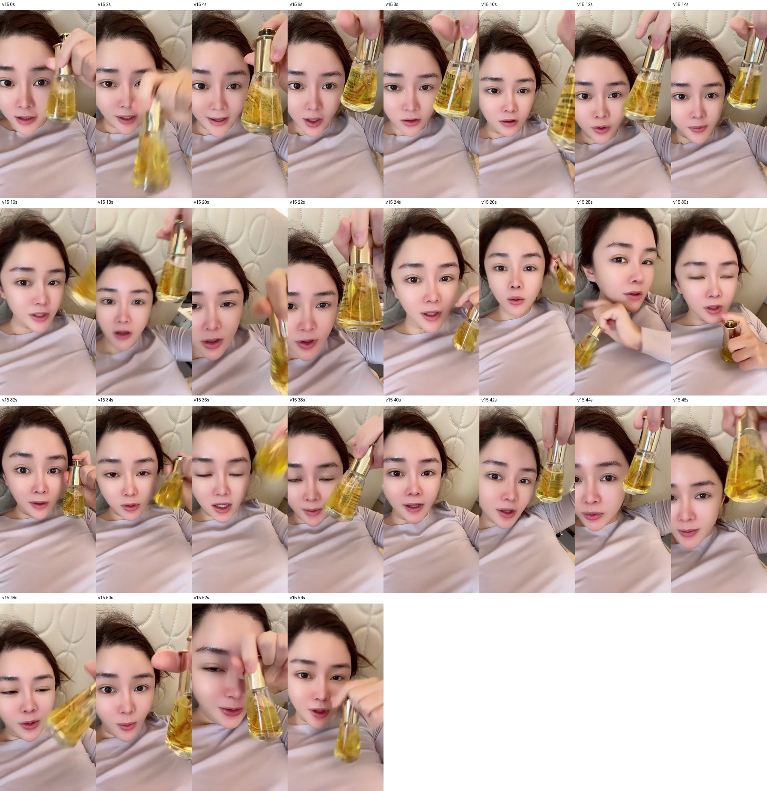 | ||||
| 待确认 | 待核查 | 待核查实词 待核查 近义扩展尚未扩展 | 持瓶介绍并摇转 → 放低取用、搓掌、双手上脸 → 提管至掌心，回瓶后全脸推抹 → 局部推抹与空手讲解、重新举瓶 → 放下产品，面对镜头交流 → 拿起摄像设备移至另一光线环境，转脸近镜展示 表情目光：概览中可见朝镜头、看手中物或侧看；未逐段量化视线，表情不等同已核实情绪。 安排时机：需核对台词后确定 | 待补全 单次情境样例 6 次观察 · 1 个来源组 |
查看原话、视频和动作过程使用后换视角展示的构图方式。 已确认真人来源，仅保存视觉动作；不认定语言、情绪、手势之间的习惯关系。 待补全原因：尚未对原声听审、区分说话人或核对原话/语气/动作对应。ASR存在明显错字，不能用于ready关联。
原片证据 · 0–10 秒白卡通皇冠T恤；视频原声ASR候选，可能混入旁人，不做本人逐字定稿。 待核查文字：微醇带给我们的弊端的话就是干皮 虽然去皱了 脸也亮了 紧致了 就是有问题干的 我刚去健康室 健康室带人身 当时语气：待核查 台词与动作的关系：待核查 打开原片并定位来源：20261109-ginseng-daily-v16 · 独立来源组：20261109-ginseng-daily-v16 原片证据 · 10–18 秒白卡通皇冠T恤；视频原声ASR候选，可能混入旁人，不做本人逐字定稿。 待核查文字：没劲了 手都堆了 稍微粗热一点 把油揉点上 我就出门了 闷这个脸 当时语气：待核查 台词与动作的关系：待核查 打开原片并定位来源：20261109-ginseng-daily-v16 · 独立来源组：20261109-ginseng-daily-v16 原片证据 · 18–26 秒白卡通皇冠T恤；视频原声ASR候选，可能混入旁人，不做本人逐字定稿。 待核查文字：闷这个脸 干 干的 平安上那个 平常吃的粗热点 当时语气：待核查 台词与动作的关系：待核查 打开原片并定位来源：20261109-ginseng-daily-v16 · 独立来源组：20261109-ginseng-daily-v16 原片证据 · 26–38 秒白卡通皇冠T恤；视频原声ASR候选，可能混入旁人，不做本人逐字定稿。 待核查文字：平常吃的粗热点 出門了 所以就是你們下個油了 再再加上油 当时语气：待核查 台词与动作的关系：待核查 打开原片并定位来源：20261109-ginseng-daily-v16 · 独立来源组：20261109-ginseng-daily-v16 原片证据 · 38–48 秒白卡通皇冠T恤；视频原声ASR候选，可能混入旁人，不做本人逐字定稿。 待核查文字：這給大家抗戰抗鬥了 給大家取黃的 不沖陰藥 頭臉特別亮的 健身頭髮 還沒洗吧 還會洗 再還運動去 当时语气：待核查 台词与动作的关系：待核查 打开原片并定位来源：20261109-ginseng-daily-v16 · 独立来源组：20261109-ginseng-daily-v16 原片证据 · 48–58.9333 秒白卡通皇冠T恤；视频原声ASR候选，可能混入旁人，不做本人逐字定稿。 待核查文字：再還運動去 給你們點鼓勵 這周帶他們出去 跑步比賽 少少少 好久不見 当时语气：待核查 台词与动作的关系：待核查 打开原片并定位来源：20261109-ginseng-daily-v16 · 独立来源组：20261109-ginseng-daily-v16 抽帧证据（不代替连续播放和原声核查）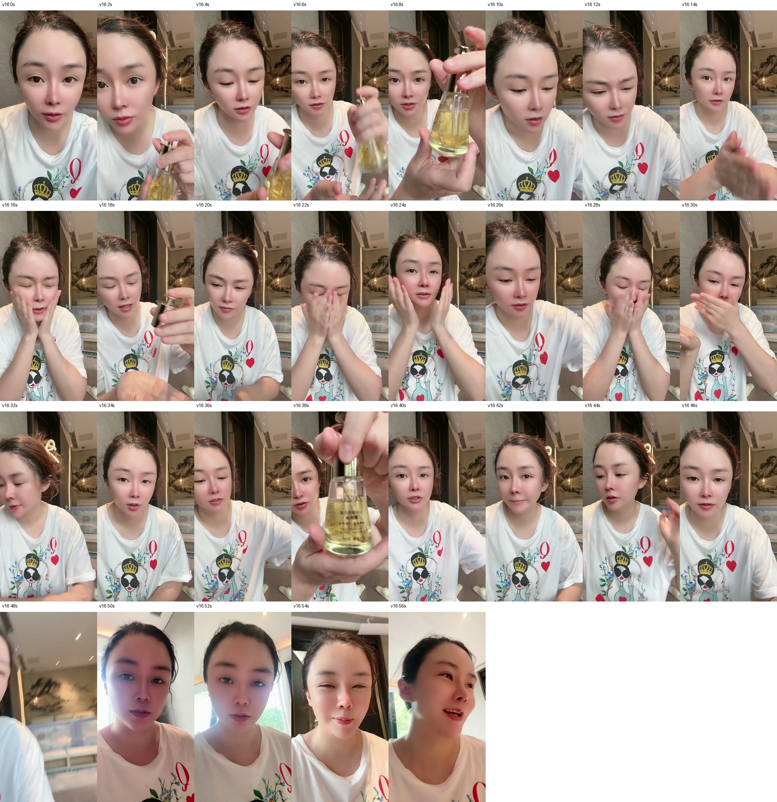 | ||||
| 待确认 | 待核查 | 待核查实词 待核查 近义扩展尚未扩展 | 倒持/倾斜透明瓶展示内容物 → 已有油的手掌搓开并近镜展示 → 额头、两颊、鼻侧推抹 → 打开面膜袋、举瓶说明 → 滴管伸向打开的面膜袋，随后回瓶/收工具 → 手在袋外揉按后单手触脸 → 取出展开面膜并举到脸前贴上 → 揭下外层承托片，沿额头鼻翼下巴抚平 → 整理膜布、取用余液并局部按压；实际状态需细查 → 袋口倒向掌心、展示余液并触脸 → 滴管对掌心，继续额头鼻侧面颊操作 表情目光：概览中可见朝镜头、看手中物或侧看；未逐段量化视线，表情不等同已核实情绪。 安排时机：需核对台词后确定 | 待补全 单次情境样例 11 次观察 · 1 个来源组 |
查看原话、视频和动作过程面膜打开、加油、揉袋、展开、揭外层等因果可独立检索。 已确认真人来源，仅保存视觉动作；不认定语言、情绪、手势之间的习惯关系。 待补全原因：尚未对原声听审、区分说话人或核对原话/语气/动作对应。ASR存在明显错字，不能用于ready关联。
原片证据 · 0–8 秒粉白蕾丝袖湿发；视频原声ASR候选，可能混入旁人，不做本人逐字定稿。 待核查文字：叫你个女巨牛茶 我想要有胶的东西 油泡面膜 什么叫 老伯 太感人了 只要有胶可以把这两块 当时语气：待核查 台词与动作的关系：待核查 打开原片并定位来源：20261109-ginseng-daily-v17 · 独立来源组：20261109-ginseng-daily-v17 原片证据 · 8–16 秒粉白蕾丝袖湿发；视频原声ASR候选，可能混入旁人，不做本人逐字定稿。 待核查文字：只要有胶可以把这两块 站在一起就好了 谁有胶啊 月月找一找 先拿这个油 托在脸上 当时语气：待核查 台词与动作的关系：待核查 打开原片并定位来源：20261109-ginseng-daily-v17 · 独立来源组：20261109-ginseng-daily-v17 原片证据 · 16–40 秒粉白蕾丝袖湿发；视频原声ASR候选，可能混入旁人，不做本人逐字定稿。 待核查文字：先拿这个油 托在脸上 月月 你过来想个办法的 虽然我没有胶 但是可以想个其他方法 急救啊 刚刚写了个草 只要你敢,就醉了 但是人生有緣斷貨了 這塊醉了那塊有沒有質疑了 当时语气：待核查 台词与动作的关系：待核查 打开原片并定位来源：20261109-ginseng-daily-v17 · 独立来源组：20261109-ginseng-daily-v17 原片证据 · 40–54 秒粉白蕾丝袖湿发；视频原声ASR候选，可能混入旁人，不做本人逐字定稿。 待核查文字：然後拿面膜 用油 這邊泡了一顆蒸蒸的那個人生 把這個旁面膜裏面 用六十餐面膜 那边大小可不可 当时语气：待核查 台词与动作的关系：待核查 打开原片并定位来源：20261109-ginseng-daily-v17 · 独立来源组：20261109-ginseng-daily-v17 原片证据 · 54–66 秒粉白蕾丝袖湿发；视频原声ASR候选，可能混入旁人，不做本人逐字定稿。 待核查文字：那边大小可不可 拆亮开面膜 卡在哪里 你这样啊 可以 是我刚才 我刚才做的方法 当时语气：待核查 台词与动作的关系：待核查 打开原片并定位来源：20261109-ginseng-daily-v17 · 独立来源组：20261109-ginseng-daily-v17 原片证据 · 66–82 秒粉白蕾丝袖湿发；视频原声ASR候选，可能混入旁人，不做本人逐字定稿。 待核查文字：我刚才做的方法 就用奏效了吗 月圆 相当奏效 你能这样 我目前都想 面膜是有的 调好 老龙的脸 太干了 当时语气：待核查 台词与动作的关系：待核查 打开原片并定位来源：20261109-ginseng-daily-v17 · 独立来源组：20261109-ginseng-daily-v17 原片证据 · 82–100 秒粉白蕾丝袖湿发；视频原声ASR候选，可能混入旁人，不做本人逐字定稿。 待核查文字：油溢醇去肉的過程的話,臉可以乾 油溢醇的臉又緊又涼又透 毛孔又很小,都沒了 油溢醇過程的臉特別乾 就是,每次睡都睡 当时语气：待核查 台词与动作的关系：待核查 打开原片并定位来源：20261109-ginseng-daily-v17 · 独立来源组：20261109-ginseng-daily-v17 原片证据 · 100–122 秒粉白蕾丝袖湿发；视频原声ASR候选，可能混入旁人，不做本人逐字定稿。 待核查文字：就是,每次睡都睡 那有可能會掉 我們小時候拿大米飯粒去捏 我这样虽然可以了 当时语气：待核查 台词与动作的关系：待核查 打开原片并定位来源：20261109-ginseng-daily-v17 · 独立来源组：20261109-ginseng-daily-v17 原片证据 · 122–154 秒粉白蕾丝袖湿发；视频原声ASR候选，可能混入旁人，不做本人逐字定稿。 待核查文字：你热死了刚刚都冷死了 我现在全屋都暖了吗 我在家也经常累着 我俩冷了我就把那个浴缸打开 去泡酒 泡了那个浴缸的水 就这么 就这么 又冷 这个油热的蒙着腿 又开始了 好酷 这水够了呀 当时语气：待核查 台词与动作的关系：待核查 打开原片并定位来源：20261109-ginseng-daily-v17 · 独立来源组：20261109-ginseng-daily-v17 原片证据 · 154–174 秒粉白蕾丝袖湿发；视频原声ASR候选，可能混入旁人，不做本人逐字定稿。 待核查文字：剩的面膜和油 有缸子的时候可以放在脸上挤 还有好多面膜和油 就一定 我昨晚肝肺炸麵的時候臉老疼了 当时语气：待核查 台词与动作的关系：待核查 打开原片并定位来源：20261109-ginseng-daily-v17 · 独立来源组：20261109-ginseng-daily-v17 原片证据 · 174–198.647 秒粉白蕾丝袖湿发；视频原声ASR候选，可能混入旁人，不做本人逐字定稿。 待核查文字：誰啊 你也叫什麼人啊這一排 但是得預受了 我再用给你们上去 当时语气：待核查 台词与动作的关系：待核查 打开原片并定位来源：20261109-ginseng-daily-v17 · 独立来源组：20261109-ginseng-daily-v17 | ||||
| 待确认 | 待核查 | 待核查实词 待核查 近义扩展尚未扩展 | 举瓶、空手讲解 → 另拿喷雾闭眼喷洒并放下 → 拿人参油取用到掌心，搓掌 → 双手两颊鼻侧全脸推抹 → 拿纸巾擦手，继续讲解 → 再次举瓶展示后放低 → 手指指示眼周/面颊、张掌和擦手讲解 表情目光：概览中可见朝镜头、看手中物或侧看；未逐段量化视线，表情不等同已核实情绪。 安排时机：需核对台词后确定 | 待补全 单次情境样例 7 次观察 · 1 个来源组 |
查看原话、视频和动作过程用后擦手再持品的自然收尾，站姿可用。 已确认真人来源，仅保存视觉动作；不认定语言、情绪、手势之间的习惯关系。 待补全原因：尚未对原声听审、区分说话人或核对原话/语气/动作对应。ASR存在明显错字，不能用于ready关联。
原片证据 · 0–8 秒白雏菊长袖浴室站姿；视频原声ASR候选，可能混入旁人，不做本人逐字定稿。 待核查文字：老规矩我还是油的爱好者 这个是人参油 里面有个人参 我平时装在里面的时候我一定会去用油的 就先去那个打底的水 当时语气：待核查 台词与动作的关系：待核查 打开原片并定位来源：20261109-ginseng-daily-v18 · 独立来源组：20261109-ginseng-daily-v18 原片证据 · 8–18 秒白雏菊长袖浴室站姿；视频原声ASR候选，可能混入旁人，不做本人逐字定稿。 待核查文字：就先去那个打底的水 然后去用个油 这个是油干碗 就是比如说 放豆腐豆腐、油酥筍 这种人 先可以先用这个油干碗 当时语气：待核查 台词与动作的关系：待核查 打开原片并定位来源：20261109-ginseng-daily-v18 · 独立来源组：20261109-ginseng-daily-v18 原片证据 · 18–28 秒白雏菊长袖浴室站姿；视频原声ASR候选，可能混入旁人，不做本人逐字定稿。 待核查文字：先可以先用这个油干碗 然后重点是用油来修复我 我用油来修复 我之前也有点红 这个人参油 拿手给它弄热 当时语气：待核查 台词与动作的关系：待核查 打开原片并定位来源：20261109-ginseng-daily-v18 · 独立来源组：20261109-ginseng-daily-v18 原片证据 · 28–40 秒白雏菊长袖浴室站姿；视频原声ASR候选，可能混入旁人，不做本人逐字定稿。 待核查文字：拿手给它弄热 哎呀在脸上啊一股真身份 是有一种喝了个营养品的感觉 我喜欢水油平衡 当时语气：待核查 台词与动作的关系：待核查 打开原片并定位来源：20261109-ginseng-daily-v18 · 独立来源组：20261109-ginseng-daily-v18 原片证据 · 40–58 秒白雏菊长袖浴室站姿；视频原声ASR候选，可能混入旁人，不做本人逐字定稿。 待核查文字：我喜欢水油平衡 我不喜欢只用油 水油平衡会让我觉得我的脸 第二天会轻转到膜 就是水油在一起会像个膜嘛 劈着膜嘛 我们拼的膜就是水油 接着在一起才能形态 所以一定要水油同步 这个不能再多介绍了 当时语气：待核查 台词与动作的关系：待核查 打开原片并定位来源：20261109-ginseng-daily-v18 · 独立来源组：20261109-ginseng-daily-v18 原片证据 · 58–66 秒白雏菊长袖浴室站姿；视频原声ASR候选，可能混入旁人，不做本人逐字定稿。 待核查文字：这个不能再多介绍了 这个是人身的这个抗肿肉油 眼睛像个小干纹的这个细纹上 吸用水 再用这个油 在哪儿水 你在这个线上敷上去弄 当时语气：待核查 台词与动作的关系：待核查 打开原片并定位来源：20261109-ginseng-daily-v18 · 独立来源组：20261109-ginseng-daily-v18 原片证据 · 66–90.1333 秒白雏菊长袖浴室站姿；视频原声ASR候选，可能混入旁人，不做本人逐字定稿。 待核查文字：在哪儿水 你在这个线上敷上去弄 那个脸上没有披着膜的 都是不够亮的 去用油 晚上是要人都出油的 你油出的少了皮肤 真正是要比别人差 这纹纹要干纹要多 这个年龄你要么40岁的人的话 我就觉得没有这纹纹是很正常的一件事情 除非干 没啥个干纹呢 干出来的 调你的粉底液 调你的面霜 调面膜都行 简直点 简直拿头弄 当时语气：待核查 台词与动作的关系：待核查 打开原片并定位来源：20261109-ginseng-daily-v18 · 独立来源组：20261109-ginseng-daily-v18 | ||||
| 待确认 | 待核查 | 待核查实词 待核查 近义扩展尚未扩展 | 人参油瓶脸侧开场 → 换成深色方形瓶介绍 → 回到人参油，近镜转瓶与脸侧停留 表情目光：概览中可见朝镜头、看手中物或侧看；未逐段量化视线，表情不等同已核实情绪。 安排时机：需核对台词后确定 | 待补全 单次情境样例 3 次观察 · 1 个来源组 |
查看原话、视频和动作过程实体轮换辅助区分两种产品。 已确认真人来源，仅保存视觉动作；不认定语言、情绪、手势之间的习惯关系。 待补全原因：尚未对原声听审、区分说话人或核对原话/语气/动作对应。ASR存在明显错字，不能用于ready关联。
原片证据 · 0–4 秒黑上衣长发山水墙；视频原声ASR候选，可能混入旁人，不做本人逐字定稿。 待核查文字：人身邮件报单了 这款干皮来用 当时语气：待核查 台词与动作的关系：待核查 打开原片并定位来源：20261109-ginseng-daily-v21 · 独立来源组：20261109-ginseng-daily-v21 原片证据 · 4–18 秒黑上衣长发山水墙；视频原声ASR候选，可能混入旁人，不做本人逐字定稿。 待核查文字：然后呢我建议你们带这个手油平衡的 它来一起用 这个就用完面膜之后 你需要手油平衡同步 然后这个一摇 你说到会非常非常惊喜的 信我的 当时语气：待核查 台词与动作的关系：待核查 打开原片并定位来源：20261109-ginseng-daily-v21 · 独立来源组：20261109-ginseng-daily-v21 原片证据 · 18–36.548 秒黑上衣长发山水墙；视频原声ASR候选，可能混入旁人，不做本人逐字定稿。 待核查文字：油皮可以用这个 干皮也能用 那个是看得到的油 但是你涂起来精华之地 这个就很软很软很软 仅限于干皮用 所以 大家自己认识 我選你自己喜歡的 当时语气：待核查 台词与动作的关系：待核查 打开原片并定位来源：20261109-ginseng-daily-v21 · 独立来源组：20261109-ginseng-daily-v21 抽帧证据（不代替连续播放和原声核查）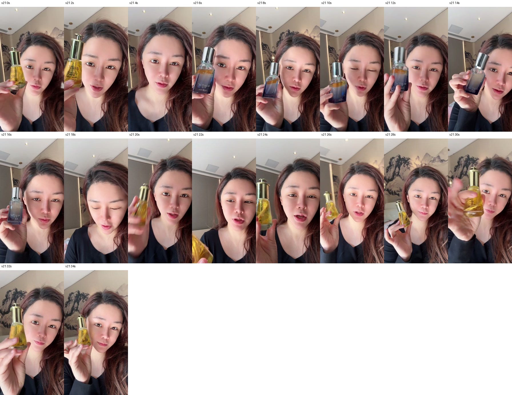 | ||||
| 待确认 | 待核查 | 待核查实词 待核查 近义扩展尚未扩展 | 手机底光照瓶，转动、短幅摇瓶 → 撤底光后托瓶指参、脸侧持稳 → 放低瓶继续讲解 表情目光：概览中可见朝镜头、看手中物或侧看；未逐段量化视线，表情不等同已核实情绪。 安排时机：需核对台词后确定 | 待补全 单次情境样例 3 次观察 · 1 个来源组 |
查看原话、视频和动作过程透光结构展示与正常光线包装展示分开。 已确认真人来源，仅保存视觉动作；不认定语言、情绪、手势之间的习惯关系。 待补全原因：尚未对原声听审、区分说话人或核对原话/语气/动作对应。ASR存在明显错字，不能用于ready关联。
原片证据 · 0–10 秒白字母毛衣、他人整理头发；视频原声ASR候选，可能混入旁人，不做本人逐字定稿。 待核查文字：姐妹们真正给大家带人参饮容里边满满的营养 满满的活性 里边泡了个小人参 看了见的东西咱们一起奉行对不对 这款是个干皮啊 当时语气：待核查 台词与动作的关系：待核查 打开原片并定位来源：20261109-ginseng-daily-v22 · 独立来源组：20261109-ginseng-daily-v22 原片证据 · 10–24 秒白字母毛衣、他人整理头发；视频原声ASR候选，可能混入旁人，不做本人逐字定稿。 待核查文字：这款是个干皮啊 咱们大家脸干的话 就给大家推荐这款人参饮容 有需要的自己去拍啊 然后这款可以是晚上来用 这款因为很润 白的你可以用 另外一款是油平衡的 你们自己去搭 有这个选项 当时语气：待核查 台词与动作的关系：待核查 打开原片并定位来源：20261109-ginseng-daily-v22 · 独立来源组：20261109-ginseng-daily-v22 原片证据 · 24–30.07 秒白字母毛衣、他人整理头发；视频原声ASR候选，可能混入旁人，不做本人逐字定稿。 待核查文字：然后给大家播个套盒 呃 去机场了 拜拜 出去留了 当时语气：待核查 台词与动作的关系：待核查 打开原片并定位来源：20261109-ginseng-daily-v22 · 独立来源组：20261109-ginseng-daily-v22 抽帧证据（不代替连续播放和原声核查）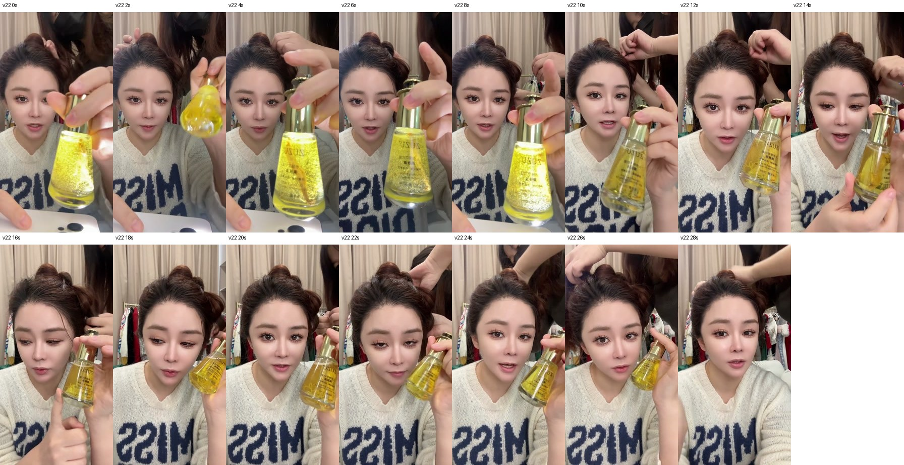 | ||||
| 待确认 | 待核查 | 待核查实词 待核查 近义扩展尚未扩展 | 两手横持闭盖瓶，缓慢滚转看内部 → 放瓶，手背托近下巴、侧看后回镜头 → 张开五指、收手、脸侧小幅手势收尾 表情目光：概览中可见朝镜头、看手中物或侧看；未逐段量化视线，表情不等同已核实情绪。 安排时机：需核对台词后确定 | 待补全 单次情境样例 3 次观察 · 1 个来源组 |
查看原话、视频和动作过程横向转瓶是直立举品之外的展示变体。 已确认真人来源，仅保存视觉动作；不认定语言、情绪、手势之间的习惯关系。 待补全原因：尚未对原声听审、区分说话人或核对原话/语气/动作对应。ASR存在明显错字，不能用于ready关联。
原片证据 · 0–10 秒绿黑旗袍造型中；视频原声ASR候选，可能混入旁人，不做本人逐字定稿。 待核查文字：油里面真的有人伸 你看见了吗 满满的营养 就是这个活性 营养非常非常的粗 干皮就用这个 晚上用 当时语气：待核查 台词与动作的关系：待核查 打开原片并定位来源：20261109-ginseng-daily-v23 · 独立来源组：20261109-ginseng-daily-v01 原片证据 · 10–20 秒绿黑旗袍造型中；视频原声ASR候选，可能混入旁人，不做本人逐字定稿。 待核查文字：晚上用 然后另外一款给你们搭的那个就是白营养 这款强烈给大家推荐 就是干皮会觉得具体喜欢 油皮还得搭配的那一款 然后这个条面膜里面 当时语气：待核查 台词与动作的关系：待核查 打开原片并定位来源：20261109-ginseng-daily-v23 · 独立来源组：20261109-ginseng-daily-v01 原片证据 · 20–29.327 秒绿黑旗袍造型中；视频原声ASR候选，可能混入旁人，不做本人逐字定稿。 待核查文字：然后这个条面膜里面 就是或者先抹在脸上 然后再去敷个面膜 整个脸又软又糯的 咱家粉丝都说俱好用 有需要你们自己拍 当时语气：待核查 台词与动作的关系：待核查 打开原片并定位来源：20261109-ginseng-daily-v23 · 独立来源组：20261109-ginseng-daily-v01 抽帧证据（不代替连续播放和原声核查）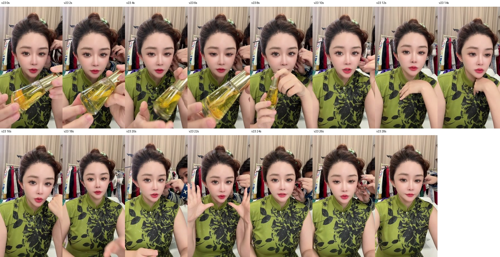 | ||||
| 待确认 | 待核查 | 待核查实词 待核查 近义扩展尚未扩展 | 持瓶并指示瓶底/内容物 → 双手指尖捏合示意后收回 → 瓶留脸侧，张掌和捏指交替讲解 → 瓶向前展示再靠脸侧停留 表情目光：概览中可见朝镜头、看手中物或侧看；未逐段量化视线，表情不等同已核实情绪。 安排时机：需核对台词后确定 | 待补全 单次情境样例 4 次观察 · 1 个来源组 |
查看原话、视频和动作过程捏指、指示与产品距离变化形成讲解层次。 已确认真人来源，仅保存视觉动作；不认定语言、情绪、手势之间的习惯关系。 待补全原因：尚未对原声听审、区分说话人或核对原话/语气/动作对应。ASR存在明显错字，不能用于ready关联。
原片证据 · 0–4 秒浅灰蓝上衣衣帽间；视频原声ASR候选，可能混入旁人，不做本人逐字定稿。 待核查文字：你眼乾啊 上面大概平常用這個人身油就行了 当时语气：待核查 台词与动作的关系：待核查 打开原片并定位来源：20261109-ginseng-daily-v24 · 独立来源组：20261109-ginseng-daily-v24 原片证据 · 4–8 秒浅灰蓝上衣衣帽间；视频原声ASR候选，可能混入旁人，不做本人逐字定稿。 待核查文字：上面大概平常用這個人身油就行了 嗓啞了吃個糖 這三日沒有的 当时语气：待核查 台词与动作的关系：待核查 打开原片并定位来源：20261109-ginseng-daily-v24 · 独立来源组：20261109-ginseng-daily-v24 原片证据 · 8–22 秒浅灰蓝上衣衣帽间；视频原声ASR候选，可能混入旁人，不做本人逐字定稿。 待核查文字：這三日沒有的 你可以搶的粉底液你會發現你的粉底液超刺花超潤 然後呢如果你 搶的面膜裡面你會發現你的面膜全都舊過了 平常買個10塊的10代塊面膜不滋潤你說用的幹嘛 眼睛下面乾味細微的 平常買個眼油的話大幾百塊錢 当时语气：待核查 台词与动作的关系：待核查 打开原片并定位来源：20261109-ginseng-daily-v24 · 独立来源组：20261109-ginseng-daily-v24 原片证据 · 22–33.785 秒浅灰蓝上衣衣帽间；视频原声ASR候选，可能混入旁人，不做本人逐字定稿。 待核查文字：平常買個眼油的話大幾百塊錢 我這個油全裏露過它沒問題 而且裏邊真有一個小人身 啊 他们家真正食料好玩意 有需要你们点击上自己楼 当时语气：待核查 台词与动作的关系：待核查 打开原片并定位来源：20261109-ginseng-daily-v24 · 独立来源组：20261109-ginseng-daily-v24 抽帧证据（不代替连续播放和原声核查）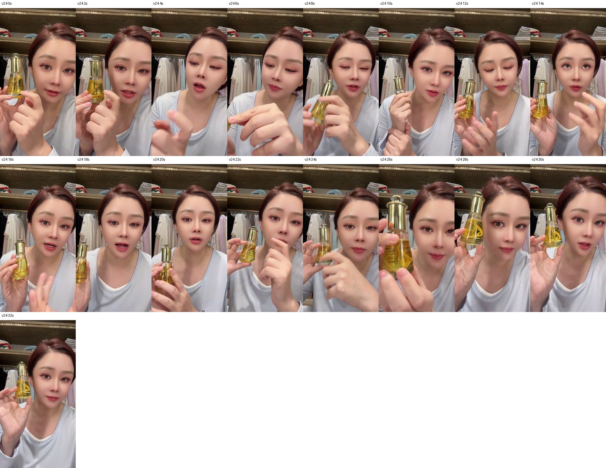 | ||||
| 待确认 | 待核查 | 待核查实词 待核查 近义扩展尚未扩展 | 摇转举瓶并开盖 → 滴管朝掌心后单手触颊，再次取用 → 单手在两颊、下巴、鼻侧和额头推抹 → 收工具后继续触脸、指示收尾 表情目光：概览中可见朝镜头、看手中物或侧看；未逐段量化视线，表情不等同已核实情绪。 安排时机：需核对台词后确定 | 待补全 单次情境样例 4 次观察 · 1 个来源组 |
查看原话、视频和动作过程单手持工具与分区接触的衔接 已确认真人来源，仅保存视觉动作；不认定语言、情绪、手势之间的习惯关系。 待补全原因：尚未对原声听审、区分说话人或核对原话/语气/动作对应。ASR存在明显错字，不能用于ready关联。
原片证据 · 0–8 秒黑T灰墙；视频原声ASR候选，可能混入旁人，不做本人逐字定稿。 待核查文字：今天啊 山梅刷了 嗯 这样刷了呢 三四四梅 整个脸真的受不了 山梅不能总刷了 一周我觉得大家刷两次 当时语气：待核查 台词与动作的关系：待核查 打开原片并定位来源：20261109-ginseng-daily-v26 · 独立来源组：20261109-ginseng-daily-v04 原片证据 · 8–16 秒黑T灰墙；视频原声ASR候选，可能混入旁人，不做本人逐字定稿。 待核查文字：山梅不能总刷了 一周我觉得大家刷两次 多点 于是 山梅的话 她还是 虽然说她不是去角质 她也不给吊藏皮 当时语气：待核查 台词与动作的关系：待核查 打开原片并定位来源：20261109-ginseng-daily-v26 · 独立来源组：20261109-ginseng-daily-v04 原片证据 · 16–46 秒黑T灰墙；视频原声ASR候选，可能混入旁人，不做本人逐字定稿。 待核查文字：但是她毕竟会让你这个脸 自生生成的这些东西 帮助我们把这个 回去脚抹质给她吃掉 我这个脸的话 现在就刷了几次 每次因为给她卖货 都涂了没有四十分 嗯 给大家两个鲜的话 四五次就好多 会弄 这个油我给大家画上 我自己皮肤 我要觉得有点 就是 过度使弄了 我就会拿油去急救一下 你用其他这种东西都没有弄的 就需要这个油 起来泡一个人身 背份非常好闻 当时语气：待核查 台词与动作的关系：待核查 打开原片并定位来源：20261109-ginseng-daily-v26 · 独立来源组：20261109-ginseng-daily-v04 原片证据 · 46–56.146 秒黑T灰墙；视频原声ASR候选，可能混入旁人，不做本人逐字定稿。 待核查文字：背份非常好闻 秋冬的话我会喜欢你不要油 有点油 给它敷一酒 天天早上起来 皮肤就好了 好好好 这角色 当时语气：待核查 台词与动作的关系：待核查 打开原片并定位来源：20261109-ginseng-daily-v26 · 独立来源组：20261109-ginseng-daily-v04 抽帧证据（不代替连续播放和原声核查）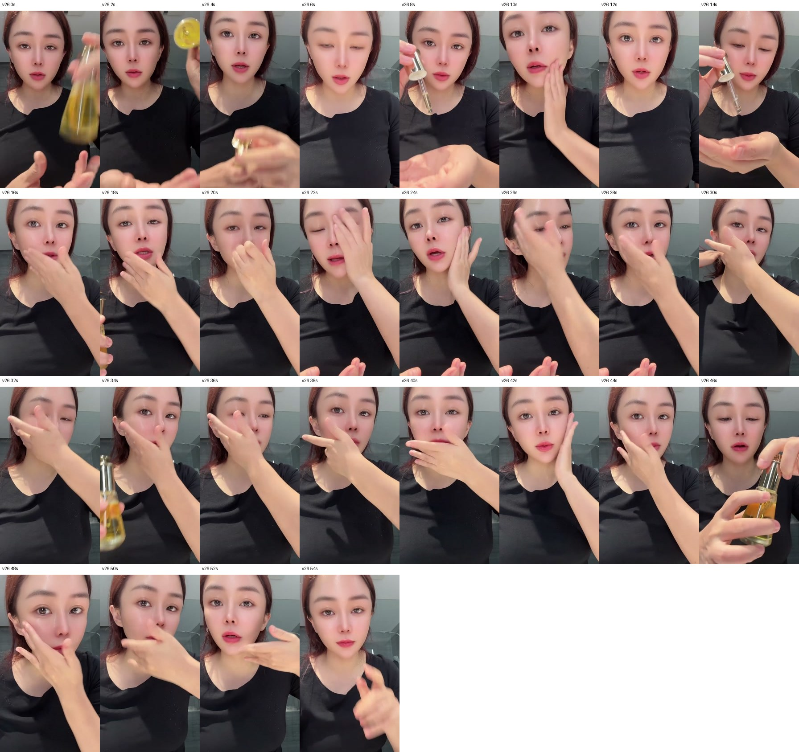 | ||||
| 待确认 | 待核查 | 待核查实词 待核查 近义扩展尚未扩展 | 举蓝白喷雾瓶、指额头 → 人参油举瓶、指面颊 → 展示皮肤照片并回喷雾讲解 → 打开人参油 → 持滴管，指尖在眼下附近操作，片段结束 表情目光：概览中可见朝镜头、看手中物或侧看；未逐段量化视线，表情不等同已核实情绪。 安排时机：需核对台词后确定 | 待补全 单次情境样例 5 次观察 · 1 个来源组 |
查看原话、视频和动作过程多产品讲解如何转入演示 已确认真人来源，仅保存视觉动作；不认定语言、情绪、手势之间的习惯关系。 待补全原因：尚未对原声听审、区分说话人或核对原话/语气/动作对应。ASR存在明显错字，不能用于ready关联。
原片证据 · 0–8 秒白蝴蝶T活动现场；视频原声ASR候选，可能混入旁人，不做本人逐字定稿。 待核查文字：有沒有就是臉結根缺水的時候就咔嚓咔嚓用噴霧水的 有沒有感覺到空角房你越吹的話那臉就乾 再反過來你可以先去噴霧水去打底 第二步的話我們要用的油 当时语气：待核查 台词与动作的关系：待核查 打开原片并定位来源：20261109-ginseng-daily-v28 · 独立来源组：20261109-ginseng-daily-v28 原片证据 · 8–18 秒白蝴蝶T活动现场；视频原声ASR候选，可能混入旁人，不做本人逐字定稿。 待核查文字：第二步的話我們要用的油 人身抗中沒用 然後再拿噴霧水 你拿一個濕度黏多讓六分鐘咱們急救 急變形成瓶頂膜 臉上沒有瓶頂膜 臉五年領的臉 是用紅骨的血絲的膀膜這種 当时语气：待核查 台词与动作的关系：待核查 打开原片并定位来源：20261109-ginseng-daily-v28 · 独立来源组：20261109-ginseng-daily-v28 原片证据 · 18–24 秒白蝴蝶T活动现场；视频原声ASR候选，可能混入旁人，不做本人逐字定稿。 待核查文字：是用紅骨的血絲的膀膜這種 然後受損的都是起皮 下瓶的話化妝還卡粉了嗎 用漆腰做油膚 然後眼睛下面小端圓小氣味有沒有 当时语气：待核查 台词与动作的关系：待核查 打开原片并定位来源：20261109-ginseng-daily-v28 · 独立来源组：20261109-ginseng-daily-v28 原片证据 · 24–28 秒白蝴蝶T活动现场；视频原声ASR候选，可能混入旁人，不做本人逐字定稿。 待核查文字：然後眼睛下面小端圓小氣味有沒有 我问你们一个演工情有的话 我能不能说你们三百块钱 可以 当时语气：待核查 台词与动作的关系：待核查 打开原片并定位来源：20261109-ginseng-daily-v28 · 独立来源组：20261109-ginseng-daily-v28 原片证据 · 28–33.933 秒白蝴蝶T活动现场；视频原声ASR候选，可能混入旁人，不做本人逐字定稿。 待核查文字：来这么淡一个游戏 我说第一演工情游戏 他还要多 演那下巴小刚小戏文的 这个游戏来 给他揉上来 当时语气：待核查 台词与动作的关系：待核查 打开原片并定位来源：20261109-ginseng-daily-v28 · 独立来源组：20261109-ginseng-daily-v28 抽帧证据（不代替连续播放和原声核查）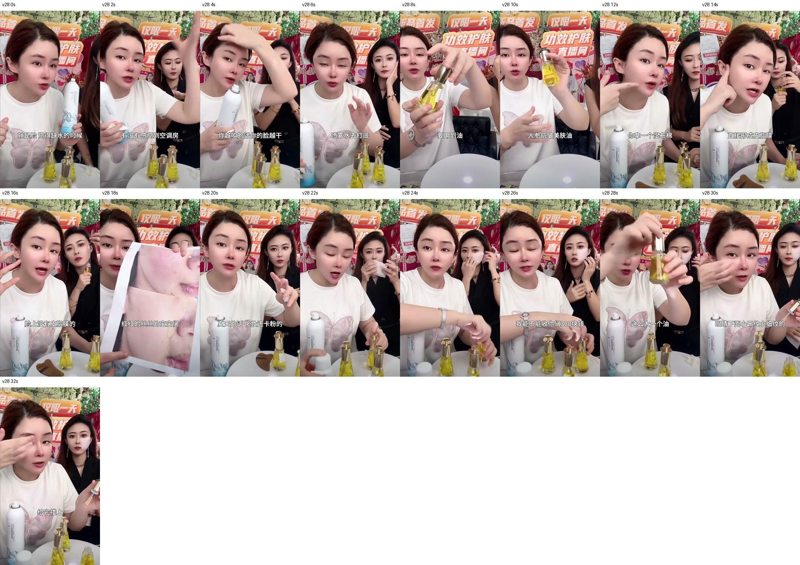 | ||||
| 待确认 | 待核查 | 待核查实词 待核查 近义扩展尚未扩展 | 整理头发、手移至后脑 → 向镜头竖食指后下指、回收 表情目光：概览中可见朝镜头、看手中物或侧看；未逐段量化视线，表情不等同已核实情绪。 安排时机：需核对台词后确定 | 待补全 单次情境样例 2 次观察 · 1 个来源组 |
查看原话、视频和动作过程无产品时的生活场景口播动作 已确认真人来源，仅保存视觉动作；不认定语言、情绪、手势之间的习惯关系。 待补全原因：尚未对原声听审、区分说话人或核对原话/语气/动作对应。ASR存在明显错字，不能用于ready关联。
原片证据 · 0–8 秒白卡通T飞机座位；视频原声ASR候选，可能混入旁人，不做本人逐字定稿。 待核查文字：今天我家阿姨说我脸一样了好多 我说我用了人身油 但人身油的断货呢 我跟你们说断货了就断货了 当时语气：待核查 台词与动作的关系：待核查 打开原片并定位来源：20261109-ginseng-daily-v29 · 独立来源组：20261109-ginseng-daily-v29 原片证据 · 8–16.9 秒白卡通T飞机座位；视频原声ASR候选，可能混入旁人，不做本人逐字定稿。 待核查文字：我跟你们说断货了就断货了 你们能看得到的 销量从昨天开始 到今天的话就三天两万单 两万单才能卖白了 现在已经一万多个销量了 而这个很多人买了四单 当时语气：待核查 台词与动作的关系：待核查 打开原片并定位来源：20261109-ginseng-daily-v29 · 独立来源组：20261109-ginseng-daily-v29 抽帧证据（不代替连续播放和原声核查）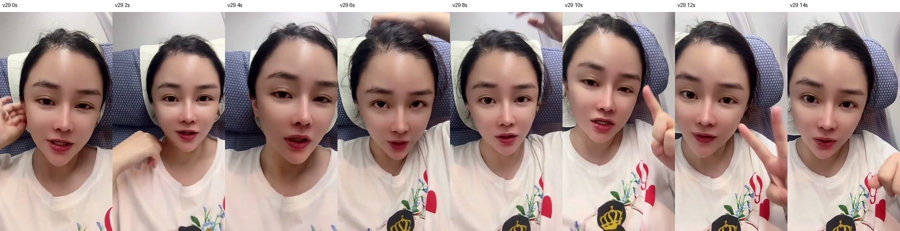 | ||||
| 待确认 | 待核查 | 待核查实词 待核查 近义扩展尚未扩展 | 脸侧举瓶、指瓶底和鼻侧 → 打开瓶，滴管靠近手掌或指尖 → 指尖在面颊鼻侧下巴涂抹，间隔取用 → 放低工具继续局部推抹 → 空手讲解收尾 表情目光：概览中可见朝镜头、看手中物或侧看；未逐段量化视线，表情不等同已核实情绪。 安排时机：需核对台词后确定 | 待补全 单次情境样例 5 次观察 · 1 个来源组 |
查看原话、视频和动作过程小区域指尖演示 已确认真人来源，仅保存视觉动作；不认定语言、情绪、手势之间的习惯关系。 待补全原因：尚未对原声听审、区分说话人或核对原话/语气/动作对应。ASR存在明显错字，不能用于ready关联。
原片证据 · 0–14 秒灰针织上衣置物架；视频原声ASR候选，可能混入旁人，不做本人逐字定稿。 待核查文字：快手游王要来新游了 这是人参游 就是因为大家喜欢那种满满的那种营养的游 我给大家做了一个人参游 这个是放了一颗人参游 当时语气：待核查 台词与动作的关系：待核查 打开原片并定位来源：20261109-ginseng-daily-v30 · 独立来源组：20261109-ginseng-daily-v30 原片证据 · 14–20 秒灰针织上衣置物架；视频原声ASR候选，可能混入旁人，不做本人逐字定稿。 待核查文字：这个是放了一颗人参游 然后这个就是我真的就夏天 像我这明明皮我现在还得用游了 当时语气：待核查 台词与动作的关系：待核查 打开原片并定位来源：20261109-ginseng-daily-v30 · 独立来源组：20261109-ginseng-daily-v30 原片证据 · 20–34 秒灰针织上衣置物架；视频原声ASR候选，可能混入旁人，不做本人逐字定稿。 待核查文字：像我这明明皮我现在还得用游了 有水的方法大概用起来 这个味道好人好生好人生 明天不要错过哦 哦,一碗油这个软软弄弄的 当时语气：待核查 台词与动作的关系：待核查 打开原片并定位来源：20261109-ginseng-daily-v30 · 独立来源组：20261109-ginseng-daily-v30 原片证据 · 34–46 秒灰针织上衣置物架；视频原声ASR候选，可能混入旁人，不做本人逐字定稿。 待核查文字：哦,一碗油这个软软弄弄的 这我终于僵固了个个您都断的所有油了 你们要不要封新的油了 哎,软软弄弄的 好奇啊 当时语气：待核查 台词与动作的关系：待核查 打开原片并定位来源：20261109-ginseng-daily-v30 · 独立来源组：20261109-ginseng-daily-v30 原片证据 · 46–50.9 秒灰针织上衣置物架；视频原声ASR候选，可能混入旁人，不做本人逐字定稿。 待核查文字：好奇啊 油我绝对封神蛋,就来我家断的事了 明天洗米手发 当时语气：待核查 台词与动作的关系：待核查 打开原片并定位来源：20261109-ginseng-daily-v30 · 独立来源组：20261109-ginseng-daily-v30 抽帧证据（不代替连续播放和原声核查）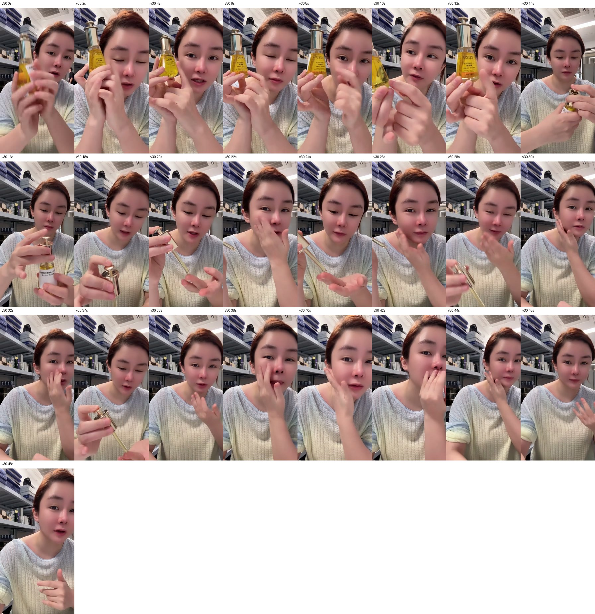 | ||||
| 待确认 | 待核查 | 待核查实词 待核查 近义扩展尚未扩展 | 粉色长瓶倒向掌心 → 搓掌和双手全脸推抹 → 再次展示粉色长瓶并触脸 → 空手交流，人参油在末尾入镜 表情目光：概览中可见朝镜头、看手中物或侧看；未逐段量化视线，表情不等同已核实情绪。 安排时机：需核对台词后确定 | 待补全 单次情境样例 4 次观察 · 1 个来源组 |
查看原话、视频和动作过程区分前段护理液与末尾人参油 已确认真人来源，仅保存视觉动作；不认定语言、情绪、手势之间的习惯关系。 待补全原因：尚未对原声听审、区分说话人或核对原话/语气/动作对应。ASR存在明显错字，不能用于ready关联。
原片证据 · 0–8 秒紫雏菊上衣衣帽间；视频原声ASR候选，可能混入旁人，不做本人逐字定稿。 待核查文字：用油的话搭配的水还有说的吗 要薄一点不要有那种很厚的 像我就用这个一直用这个水 其实它一定是很 当时语气：待核查 台词与动作的关系：待核查 打开原片并定位来源：20261109-ginseng-daily-v31 · 独立来源组：20261109-ginseng-daily-v31 原片证据 · 8–32 秒紫雏菊上衣衣帽间；视频原声ASR候选，可能混入旁人，不做本人逐字定稿。 待核查文字：其实它一定是很 它一定是比较薄的水 这在克斯美斯做的 克斯美斯是一个牌子咸酸的工厂 台底的水的话就是不要很厚 都算你毛孔 后面的油都被你堵门外了 后面厚品的系统不要了 所以一定要有薄一点的水 也好闻还好用 当时语气：待核查 台词与动作的关系：待核查 打开原片并定位来源：20261109-ginseng-daily-v31 · 独立来源组：20261109-ginseng-daily-v31 原片证据 · 32–42 秒紫雏菊上衣衣帽间；视频原声ASR候选，可能混入旁人，不做本人逐字定稿。 待核查文字：这款保持自认以购用 都挺好的 这个就是青春景华许空 因为这个就是 没有夹那么厚的成分 所以它比较适合来做大地 当时语气：待核查 台词与动作的关系：待核查 打开原片并定位来源：20261109-ginseng-daily-v31 · 独立来源组：20261109-ginseng-daily-v31 原片证据 · 42–48.2667 秒紫雏菊上衣衣帽间；视频原声ASR候选，可能混入旁人，不做本人逐字定稿。 待核查文字：所以它比较适合来做大地 先用这个可以再去用其他的油 比如人生油啊这些 当时语气：待核查 台词与动作的关系：待核查 打开原片并定位来源：20261109-ginseng-daily-v31 · 独立来源组：20261109-ginseng-daily-v31 抽帧证据（不代替连续播放和原声核查）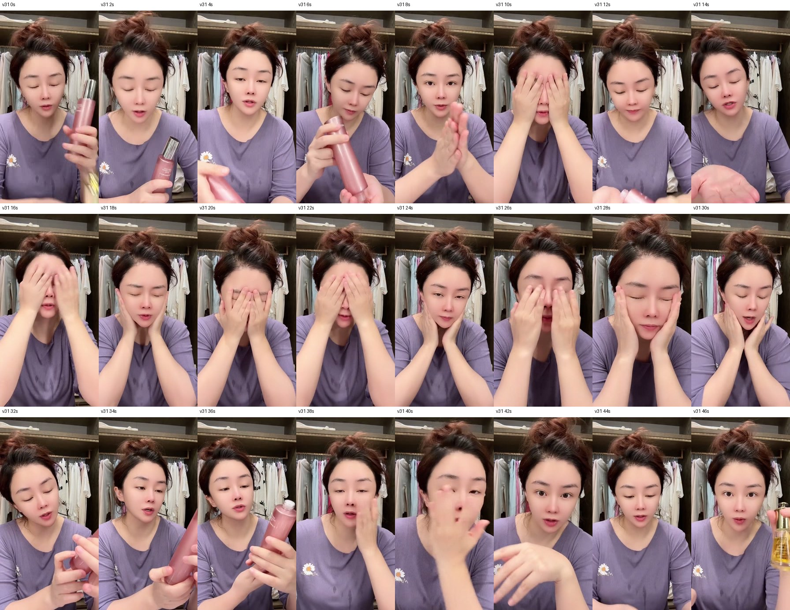 | ||||
| 待确认 | 待核查 | 待核查实词 待核查 近义扩展尚未扩展 | 竖指和指示鼻侧眼下 → 边走边侧看、捏指朝镜头 → 换大厅角度继续指脸和手势 表情目光：概览中可见朝镜头、看手中物或侧看；未逐段量化视线，表情不等同已核实情绪。 安排时机：需核对台词后确定 | 待补全 单次情境样例 3 次观察 · 1 个来源组 |
查看原话、视频和动作过程移动生活场景口播 已确认真人来源，仅保存视觉动作；不认定语言、情绪、手势之间的习惯关系。 待补全原因：尚未对原声听审、区分说话人或核对原话/语气/动作对应。ASR存在明显错字，不能用于ready关联。
原片证据 · 0–10 秒白卡通T机场大厅；视频原声ASR候选，可能混入旁人，不做本人逐字定稿。 待核查文字：人参游和美白游 哪一个共驱咒来选 A纯游 奶奶 A纯游 就有一个可能有可能会爆皮 你去阴谋门 你去驱咒的话 它也是寂寞光 啪啪啪啪给你打几下的 当时语气：待核查 台词与动作的关系：待核查 打开原片并定位来源：20261109-ginseng-daily-v33 · 独立来源组：20261109-ginseng-daily-v33 原片证据 · 10–32 秒白卡通T机场大厅；视频原声ASR候选，可能混入旁人，不做本人逐字定稿。 待核查文字：啪啪啪啪给你打几下的 给你爆怎么皮 就有这个问题 然后人参游的话 一天外两万来单 它就没有快没有货了 受窍 但是你要说驱咒的游的话 去演的咒的游 咱家有专门的演游 厚一点的 就是带一个按摩棒了 因为那个厚一点 可以按摩这吸收 另外一个带个滚轮扭是吸收快的 然后那带你要想真正的驱逐效果来的猛的话 当时语气：待核查 台词与动作的关系：待核查 打开原片并定位来源：20261109-ginseng-daily-v33 · 独立来源组：20261109-ginseng-daily-v33 原片证据 · 32–52.338 秒白卡通T机场大厅；视频原声ASR候选，可能混入旁人，不做本人逐字定稿。 待核查文字：然后那带你要想真正的驱逐效果来的猛的话 你觉得是A纯 A纯的有 A纯的有的话就有一个问题 就是你有可能会爆皮 A纯的话就是给你有可能爆层皮 你产生新的皮 然后越来越紧致 然后驱逐的话全世界你给我找 有没有一个成分别 A纯跟牛的 没有就落A纯有 但是就是有爆皮 然后你可能会剥脱一层皮 有这个问题 好了回答完了 当时语气：待核查 台词与动作的关系：待核查 打开原片并定位来源：20261109-ginseng-daily-v33 · 独立来源组：20261109-ginseng-daily-v33 抽帧证据（不代替连续播放和原声核查）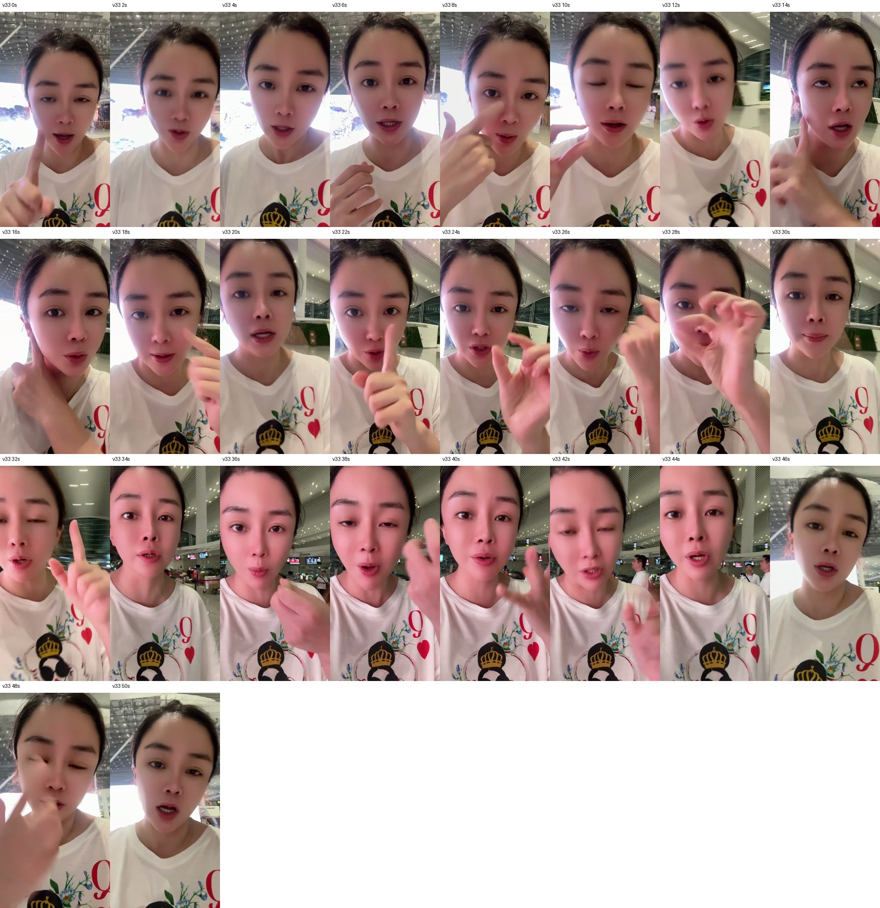 | ||||
| 待确认 | 待核查 | 待核查实词 待核查 近义扩展尚未扩展 | 斜持或倒持瓶、指眼下鼻侧 → 直立和倒持瓶交替靠脸 → 放低产品 表情目光：概览中可见朝镜头、看手中物或侧看；未逐段量化视线，表情不等同已核实情绪。 安排时机：需核对台词后确定 | 待补全 单次情境样例 3 次观察 · 1 个来源组 |
查看原话、视频和动作过程闭盖倒持看内容物 已确认真人来源，仅保存视觉动作；不认定语言、情绪、手势之间的习惯关系。 待补全原因：尚未对原声听审、区分说话人或核对原话/语气/动作对应。ASR存在明显错字，不能用于ready关联。
原片证据 · 0–12 秒白字母毛衣红顶；视频原声ASR候选，可能混入旁人，不做本人逐字定稿。 待核查文字：在机场吃个牛肉面子 你看我就是所有东西都没带 就带了一个人生油 今天晚上就够了 就是飞机上空调吹得特别大 你不管多好的航空 它都很干 当时语气：待核查 台词与动作的关系：待核查 打开原片并定位来源：20261109-ginseng-daily-v35 · 独立来源组：20261109-ginseng-daily-v22 原片证据 · 12–28 秒白字母毛衣红顶；视频原声ASR候选，可能混入旁人，不做本人逐字定稿。 待核查文字：就用这个人生油 就放在这个底线干皮使用 油皮用那个是油平衡的那个 那个带点油的 干皮用这个 这只剧好用调的面膜 里面调的份子里面 万物几个调 头子了 就是它 当时语气：待核查 台词与动作的关系：待核查 打开原片并定位来源：20261109-ginseng-daily-v35 · 独立来源组：20261109-ginseng-daily-v22 原片证据 · 28–29.536 秒白字母毛衣红顶；视频原声ASR候选，可能混入旁人，不做本人逐字定稿。 待核查文字：就是它 当时语气：待核查 台词与动作的关系：待核查 打开原片并定位来源：20261109-ginseng-daily-v35 · 独立来源组：20261109-ginseng-daily-v22 抽帧证据（不代替连续播放和原声核查）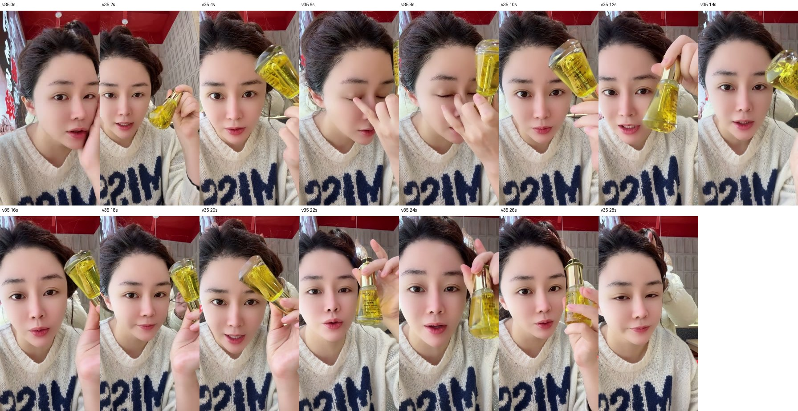 | ||||
| 待确认 | 待核查 | 待核查实词 待核查 近义扩展尚未扩展 | 举瓶脸侧、竖指后放低 → 边走边在脸侧倾斜和改变瓶距离 → 放低瓶并侧看 表情目光：概览中可见朝镜头、看手中物或侧看；未逐段量化视线，表情不等同已核实情绪。 安排时机：需核对台词后确定 | 待补全 单次情境样例 3 次观察 · 1 个来源组 |
查看原话、视频和动作过程移动口播中的持品稳定 已确认真人来源，仅保存视觉动作；不认定语言、情绪、手势之间的习惯关系。 待补全原因：尚未对原声听审、区分说话人或核对原话/语气/动作对应。ASR存在明显错字，不能用于ready关联。
原片证据 · 0–10 秒白字母毛衣机场；视频原声ASR候选，可能混入旁人，不做本人逐字定稿。 待核查文字：飞机上敷面膜脸的一桶 还好我带了人身油 把人身油几的面膜里面敷了半天 终于缓不来了 热热的亮亮的 透透的 当时语气：待核查 台词与动作的关系：待核查 打开原片并定位来源：20261109-ginseng-daily-v36 · 独立来源组：20261109-ginseng-daily-v22 原片证据 · 10–30 秒白字母毛衣机场；视频原声ASR候选，可能混入旁人，不做本人逐字定稿。 待核查文字：透透的 睡了十几个小时 终于到达了整个人身油晚上端过了 如果你看到视频晚一点的话 你应该预售 但是预售的话 也就一周的时间也行 反而每次买这个都买不到先货 你看脸下回机 热热亮亮透透的 脸干就那人身油 早上用那个精华的一个手柔平衡的 当时语气：待核查 台词与动作的关系：待核查 打开原片并定位来源：20261109-ginseng-daily-v36 · 独立来源组：20261109-ginseng-daily-v22 原片证据 · 30–33.367 秒白字母毛衣机场；视频原声ASR候选，可能混入旁人，不做本人逐字定稿。 待核查文字：早上用那个精华的一个手柔平衡的 晚上用这个 当时语气：待核查 台词与动作的关系：待核查 打开原片并定位来源：20261109-ginseng-daily-v36 · 独立来源组：20261109-ginseng-daily-v22 抽帧证据（不代替连续播放和原声核查）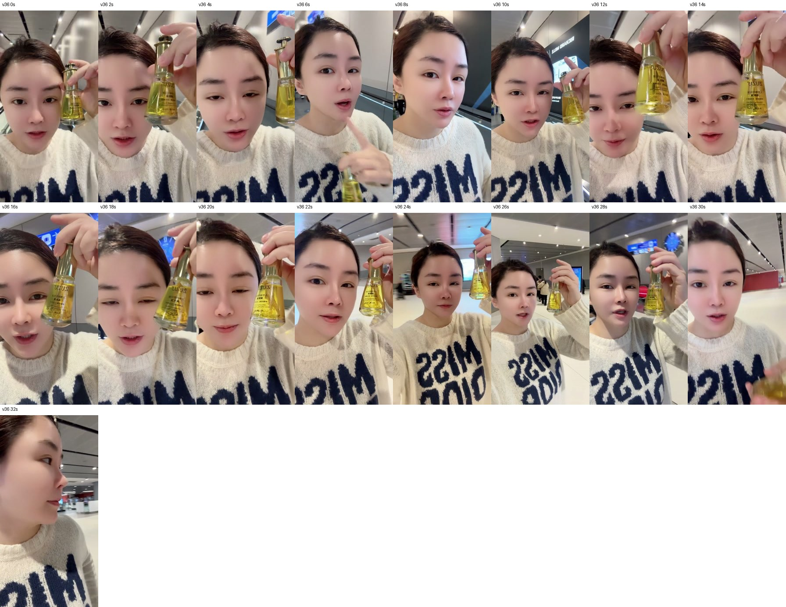 | ||||
| 待确认 | 待核查 | 待核查实词 待核查 近义扩展尚未扩展 | 瓶近镜，指瓶底 → 脸侧直立与倒持交替 → 横向纵向转瓶 → 脸侧持续持瓶和小幅转角 表情目光：概览中可见朝镜头、看手中物或侧看；未逐段量化视线，表情不等同已核实情绪。 安排时机：需核对台词后确定 | 待补全 单次情境样例 4 次观察 · 1 个来源组 |
查看原话、视频和动作过程闭盖瓶多角度展示 已确认真人来源，仅保存视觉动作；不认定语言、情绪、手势之间的习惯关系。 待补全原因：尚未对原声听审、区分说话人或核对原话/语气/动作对应。ASR存在明显错字，不能用于ready关联。
原片证据 · 0–6 秒紫睡衣衣帽间；视频原声ASR候选，可能混入旁人，不做本人逐字定稿。 待核查文字：选用很热很热的理由就选这款人生有每一个里面给大家泡一个人生 这个现在就是深得大家闲断货断了两次 每一次的话都断一个来月 当时语气：待核查 台词与动作的关系：待核查 打开原片并定位来源：20261109-ginseng-daily-v38 · 独立来源组：20261109-ginseng-daily-v38 原片证据 · 6–18 秒紫睡衣衣帽间；视频原声ASR候选，可能混入旁人，不做本人逐字定稿。 待核查文字：这个现在就是深得大家闲断货断了两次 每一次的话都断一个来月 这个难得出货了 我说有问题还有多少人要拍 要不再给你们 近点货 再做点货 你们怎么总拍的那么快啊 因为这个卖的便宜 一直挂在里边没有卖 当时语气：待核查 台词与动作的关系：待核查 打开原片并定位来源：20261109-ginseng-daily-v38 · 独立来源组：20261109-ginseng-daily-v38 原片证据 · 18–30 秒紫睡衣衣帽间；视频原声ASR候选，可能混入旁人，不做本人逐字定稿。 待核查文字：近点货 再做点货 你们怎么总拍的那么快啊 因为这个卖的便宜 一直挂在里边没有卖 然后你大家都是自动拍的和回购拍的 所以就是你们要是 后面还要回购物了 跟我说一声 多点点赞告诉我一声 当时语气：待核查 台词与动作的关系：待核查 打开原片并定位来源：20261109-ginseng-daily-v38 · 独立来源组：20261109-ginseng-daily-v38 原片证据 · 30–47.996 秒紫睡衣衣帽间；视频原声ASR候选，可能混入旁人，不做本人逐字定稿。 待核查文字：多点点赞告诉我一声 然后就给大家做做做做一下的 因为这个大家也能看到身的成本 还有包装的成本 很多成本在这边放着 还有油的成本都已经很贵了 然后如果存太多的话 压线太多了 你们要的话再给大家存点 当时语气：待核查 台词与动作的关系：待核查 打开原片并定位来源：20261109-ginseng-daily-v38 · 独立来源组：20261109-ginseng-daily-v38 抽帧证据（不代替连续播放和原声核查）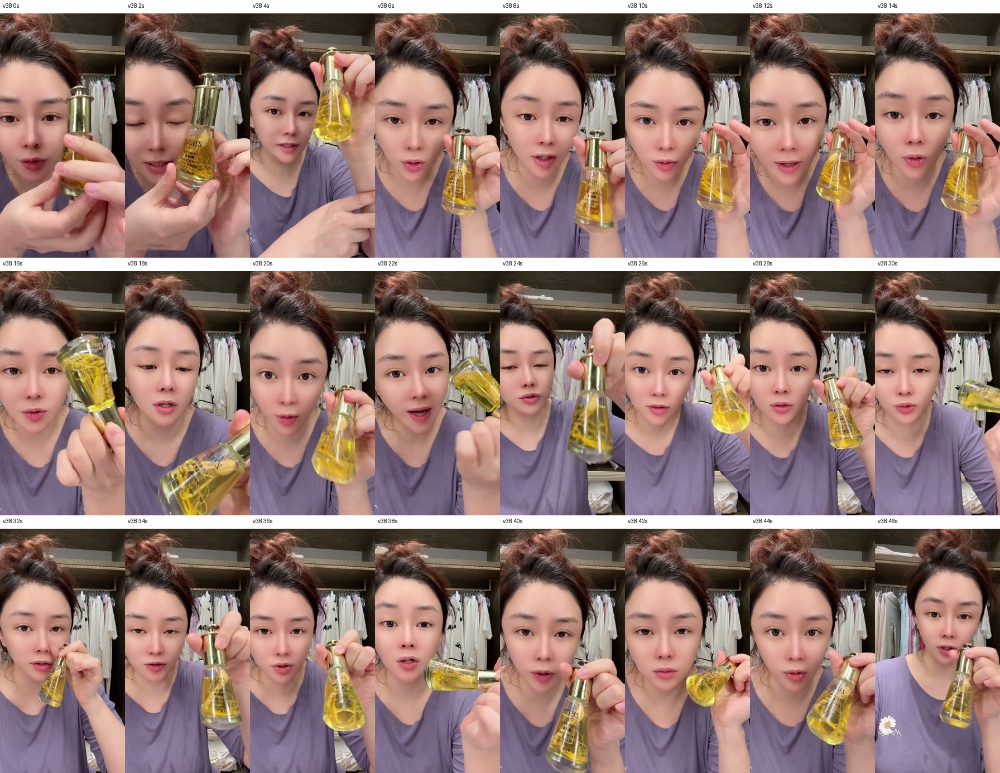 | ||||
| 待确认 | 待核查 | 待核查实词 待核查 近义扩展尚未扩展 | 举瓶、滴管朝掌心、搓掌 → 上脸推抹、间隔举瓶 → 打开蓝白面膜袋 → 滴管朝袋口，回瓶后重复 → 揉拍袋外并取膜 → 展开面膜并贴上 → 沿额头鼻翼面颊下巴整理膜布 → 手掌和颈部手势 → 保留面膜，举瓶近镜 → 伸手移镜头，末尾突变角度 表情目光：概览中可见朝镜头、看手中物或侧看；未逐段量化视线，表情不等同已核实情绪。 安排时机：需核对台词后确定 | 待补全 单次情境样例 10 次观察 · 1 个来源组 |
查看原话、视频和动作过程贴膜后的状态保持与回到产品 已确认真人来源，仅保存视觉动作；不认定语言、情绪、手势之间的习惯关系。 待补全原因：尚未对原声听审、区分说话人或核对原话/语气/动作对应。ASR存在明显错字，不能用于ready关联。
原片证据 · 0–8 秒白长袖深色柜架；视频原声ASR候选，可能混入旁人，不做本人逐字定稿。 待核查文字：一会儿去打球 打上去来 就用个油的面 用这个人手油 当时语气：待核查 台词与动作的关系：待核查 打开原片并定位来源：20261109-ginseng-daily-v40 · 独立来源组：20261109-ginseng-daily-v40 原片证据 · 8–22 秒白长袖深色柜架；视频原声ASR候选，可能混入旁人，不做本人逐字定稿。 待核查文字：用这个人手油 给人手油老票 看这边 因为早上就不用尾牌了 打球的又要放了 等这个尾牌停不了那么久 当时语气：待核查 台词与动作的关系：待核查 打开原片并定位来源：20261109-ginseng-daily-v40 · 独立来源组：20261109-ginseng-daily-v40 原片证据 · 22–34 秒白长袖深色柜架；视频原声ASR候选，可能混入旁人，不做本人逐字定稿。 待核查文字：昨天还烧上来很美 買這個才是有的到達全部的家裡那一家 当时语气：待核查 台词与动作的关系：待核查 打开原片并定位来源：20261109-ginseng-daily-v40 · 独立来源组：20261109-ginseng-daily-v40 原片证据 · 34–50 秒白长袖深色柜架；视频原声ASR候选，可能混入旁人，不做本人逐字定稿。 待核查文字：就沒有刺激它也不行 就沒有刺激它 這個 就把它帶上身子 填一點 就填一點 然後很多都買過了 当时语气：待核查 台词与动作的关系：待核查 打开原片并定位来源：20261109-ginseng-daily-v40 · 独立来源组：20261109-ginseng-daily-v40 原片证据 · 50–68 秒白长袖深色柜架；视频原声ASR候选，可能混入旁人，不做本人逐字定稿。 待核查文字：然後很多都買過了 買了很多 沒有閃利軟炸 就讓普通的用油 用油 這是乾皮的油 又可以拍另外一塊 我覺得相當級就 一片口粉188的麵衫買了5票 当时语气：待核查 台词与动作的关系：待核查 打开原片并定位来源：20261109-ginseng-daily-v40 · 独立来源组：20261109-ginseng-daily-v40 原片证据 · 68–88 秒白长袖深色柜架；视频原声ASR候选，可能混入旁人，不做本人逐字定稿。 待核查文字：一片口粉188的麵衫買了5票 30塊1票 昨天用口粉滑完油整個臉好太多了 今天早上回來一點 因為海邊風吹很大了 大修 我这个手的现在是算的 当时语气：待核查 台词与动作的关系：待核查 打开原片并定位来源：20261109-ginseng-daily-v40 · 独立来源组：20261109-ginseng-daily-v40 原片证据 · 88–124 秒白长袖深色柜架；视频原声ASR候选，可能混入旁人，不做本人逐字定稿。 待核查文字：这可以了 所有油除了在用以外 最后一步是它们非常常用的 还是非常高效率的用油 眼睛下巴一定要解决 眼睛下巴干了洗油一定要解决 用水是解决不了干的洗油 就得用油 脚后不能用上那个那么干 当时语气：待核查 台词与动作的关系：待核查 打开原片并定位来源：20261109-ginseng-daily-v40 · 独立来源组：20261109-ginseng-daily-v40 原片证据 · 124–134 秒白长袖深色柜架；视频原声ASR候选，可能混入旁人，不做本人逐字定稿。 待核查文字：脚后不能用上那个那么干 用不抹油 抹水 肯定会那么干 这是根本问题 当时语气：待核查 台词与动作的关系：待核查 打开原片并定位来源：20261109-ginseng-daily-v40 · 独立来源组：20261109-ginseng-daily-v40 原片证据 · 134–144 秒白长袖深色柜架；视频原声ASR候选，可能混入旁人，不做本人逐字定稿。 待核查文字：好了,这个是油,给它推荐一下 让我去烤过了,吃点饭,一会儿再重新 当时语气：待核查 台词与动作的关系：待核查 打开原片并定位来源：20261109-ginseng-daily-v40 · 独立来源组：20261109-ginseng-daily-v40 原片证据 · 144–147.377 秒白长袖深色柜架；视频原声ASR候选，可能混入旁人，不做本人逐字定稿。 待核查文字：让我去烤过了,吃点饭,一会儿再重新 当时语气：待核查 台词与动作的关系：待核查 打开原片并定位来源：20261109-ginseng-daily-v40 · 独立来源组：20261109-ginseng-daily-v40 | ||||
| 待确认 | 待核查 | 待核查实词 待核查 近义扩展尚未扩展 | 底部照亮瓶，摇转 → 脸侧持瓶持续交流 表情目光：概览中可见朝镜头、看手中物或侧看；未逐段量化视线，表情不等同已核实情绪。 安排时机：需核对台词后确定 | 待补全 单次情境样例 2 次观察 · 1 个来源组 |
查看原话、视频和动作过程底光衬托瓶内结构 已确认真人来源，仅保存视觉动作；不认定语言、情绪、手势之间的习惯关系。 待补全原因：尚未对原声听审、区分说话人或核对原话/语气/动作对应。ASR存在明显错字，不能用于ready关联。
原片证据 · 0–4 秒黑白条纹开衫花卉背景；视频原声ASR候选，可能混入旁人，不做本人逐字定稿。 待核查文字：給大家看看 咱家人生有 直播是昨天剛給大家賣 今天就要端貨了 当时语气：待核查 台词与动作的关系：待核查 打开原片并定位来源：20261109-ginseng-daily-v41 · 独立来源组：20261109-ginseng-daily-v41 原片证据 · 4–14.8 秒黑白条纹开衫花卉背景；视频原声ASR候选，可能混入旁人，不做本人逐字定稿。 待核查文字：直播是昨天剛給大家賣 今天就要端貨了 有需要自己拍吧 不給大家直播的時候叫 這個是很油的那種 很潤的 小青好像拍到第二個一間 当时语气：待核查 台词与动作的关系：待核查 打开原片并定位来源：20261109-ginseng-daily-v41 · 独立来源组：20261109-ginseng-daily-v41 抽帧证据（不代替连续播放和原声核查）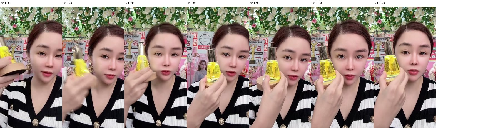 | ||||
| 待确认 | 待核查 | 待核查实词 待核查 近义扩展尚未扩展 | 脸侧斜持横转瓶 → 行走中持瓶讲解 → 地点视角变化，瓶在胸前脸侧轮换 表情目光：概览中可见朝镜头、看手中物或侧看；未逐段量化视线，表情不等同已核实情绪。 安排时机：需核对台词后确定 | 待补全 单次情境样例 3 次观察 · 1 个来源组 |
查看原话、视频和动作过程移动场景的展示距离变化 已确认真人来源，仅保存视觉动作；不认定语言、情绪、手势之间的习惯关系。 待补全原因：尚未对原声听审、区分说话人或核对原话/语气/动作对应。ASR存在明显错字，不能用于ready关联。
原片证据 · 0–16 秒白字母毛衣机场；视频原声ASR候选，可能混入旁人，不做本人逐字定稿。 待核查文字：里面真的有人身的油 怎么办 眼干 秋冬用啥 怎么办 就用人身油 调到你们眼膜里面 调分离液里面 让你的分离液更润 为什么分干 皮分离液和油皮分离液 就差了这个油 这里面的话 真的放在人身的 这满满的 当时语气：待核查 台词与动作的关系：待核查 打开原片并定位来源：20261109-ginseng-daily-v42 · 独立来源组：20261109-ginseng-daily-v22 原片证据 · 16–32 秒白字母毛衣机场；视频原声ASR候选，可能混入旁人，不做本人逐字定稿。 待核查文字：这满满的 这一罐 三什么油的 人身油 我家最热的一款油 品家特别特别好 有需要你们自己拍 出发了 出去旅游了 我就是自备的 这个人身油 洗完妆 我自己再用A纯 A准去灼非常牛 但是你的脸干的时候 你就拿这个人生油解饭物 当时语气：待核查 台词与动作的关系：待核查 打开原片并定位来源：20261109-ginseng-daily-v42 · 独立来源组：20261109-ginseng-daily-v22 原片证据 · 32–45.047 秒白字母毛衣机场；视频原声ASR候选，可能混入旁人，不做本人逐字定稿。 待核查文字：你就拿这个人生油解饭物 你就是用面霜啊 牛水煮完都没有这个油来得快 脚后跟在上干 你天天泡脚油吗 这就是干你把一千块水有用吗 是不是都要用油 就是这个人生油怎么呢 当时语气：待核查 台词与动作的关系：待核查 打开原片并定位来源：20261109-ginseng-daily-v42 · 独立来源组：20261109-ginseng-daily-v22 抽帧证据（不代替连续播放和原声核查）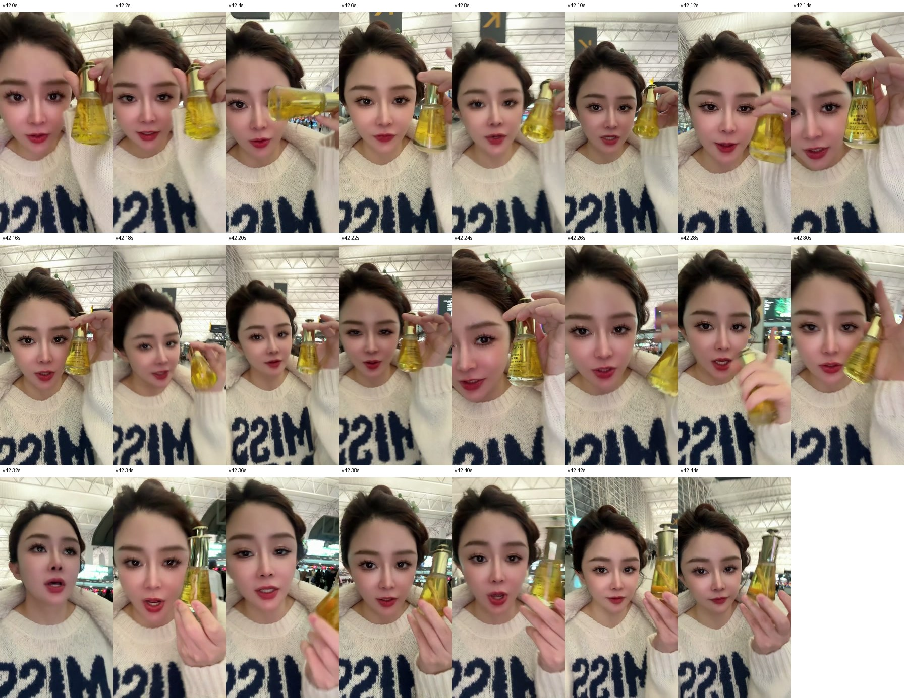 | ||||
| 待确认 | 待核查 | 待核查实词 待核查 近义扩展尚未扩展 | 瓶移至脸前近镜 → 边走边脸侧持品 → 近镜举瓶和轻微转头 表情目光：概览中可见朝镜头、看手中物或侧看；未逐段量化视线，表情不等同已核实情绪。 安排时机：需核对台词后确定 | 待补全 单次情境样例 3 次观察 · 1 个来源组 |
查看原话、视频和动作过程厚外套出行场景持品 已确认真人来源，仅保存视觉动作；不认定语言、情绪、手势之间的习惯关系。 待补全原因：尚未对原声听审、区分说话人或核对原话/语气/动作对应。ASR存在明显错字，不能用于ready关联。
原片证据 · 0–8 秒白羊羔绒外套机场；视频原声ASR候选，可能混入旁人，不做本人逐字定稿。 待核查文字：再拿第一站了 昨天晚上干的时候 敷了个面膜连烙疼了 我立刻把这个人身油挤进去了 你看 当时语气：待核查 台词与动作的关系：待核查 打开原片并定位来源：20261109-ginseng-daily-v43 · 独立来源组：20261109-ginseng-daily-v43 原片证据 · 8–24 秒白羊羔绒外套机场；视频原声ASR候选，可能混入旁人，不做本人逐字定稿。 待核查文字：就卡卡的起 终于就是不疼了 然后起来的话特别润 你就用油连干的时候 你看越敷面膜连越疼 谁疼得疼的 嘎嘎疼 你就用油 嘴干的时候疼 手干的时候疼 当时语气：待核查 台词与动作的关系：待核查 打开原片并定位来源：20261109-ginseng-daily-v43 · 独立来源组：20261109-ginseng-daily-v43 原片证据 · 24–32.671 秒白羊羔绒外套机场；视频原声ASR候选，可能混入旁人，不做本人逐字定稿。 待核查文字：手干的时候疼 你就用油 你不用水 错误的想法 这个干瓶用的老好我都好用了 每一个里面都有一个人身啊 当时语气：待核查 台词与动作的关系：待核查 打开原片并定位来源：20261109-ginseng-daily-v43 · 独立来源组：20261109-ginseng-daily-v43 抽帧证据（不代替连续播放和原声核查）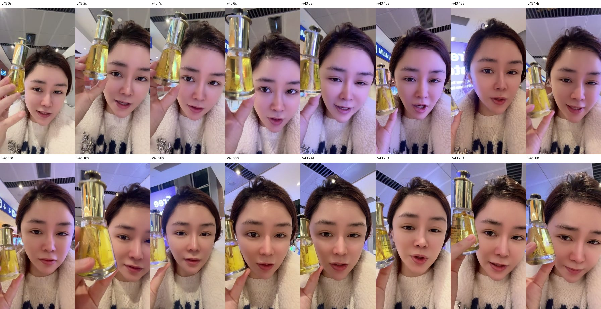 | ||||
| 待确认 | 待核查 | 待核查实词 待核查 近义扩展尚未扩展 | 脸侧举瓶短幅上下摇 → 放低举起交替，视线朝旁边 → 再次举瓶停在脸侧 表情目光：概览中可见朝镜头、看手中物或侧看；未逐段量化视线，表情不等同已核实情绪。 安排时机：需核对台词后确定 | 待补全 单次情境样例 3 次观察 · 1 个来源组 |
查看原话、视频和动作过程口播中自然收放产品 已确认真人来源，仅保存视觉动作；不认定语言、情绪、手势之间的习惯关系。 待补全原因：尚未对原声听审、区分说话人或核对原话/语气/动作对应。ASR存在明显错字，不能用于ready关联。
原片证据 · 0–8 秒粉开衫机场候机区；视频原声ASR候选，可能混入旁人，不做本人逐字定稿。 待核查文字：咱家这个人生油啊 秋冬的 你们问问哪一款油好用 对这个在人生油 每一个里边就泡了一只小人生 啊 就这个就是最润的 我们家现在就是所有油里面顶着顶着你要说你在东北上巴大干皮干皮就用这个 当时语气：待核查 台词与动作的关系：待核查 打开原片并定位来源：20261109-ginseng-daily-v44 · 独立来源组：20261109-ginseng-daily-v44 原片证据 · 8–18 秒粉开衫机场候机区；视频原声ASR候选，可能混入旁人，不做本人逐字定稿。 待核查文字：啊 就这个就是最润的 我们家现在就是所有油里面顶着顶着你要说你在东北上巴大干皮干皮就用这个 超级润啊 就用这块油给大家抗这块老的回头课超级多啊 这三个没有的油 当时语气：待核查 台词与动作的关系：待核查 打开原片并定位来源：20261109-ginseng-daily-v44 · 独立来源组：20261109-ginseng-daily-v44 原片证据 · 18–30.8 秒粉开衫机场候机区；视频原声ASR候选，可能混入旁人，不做本人逐字定稿。 待核查文字：超级润啊 就用这块油给大家抗这块老的回头课超级多啊 这三个没有的油 挺到位的 你看这种胶囊的话十五没有的十五没有的 在这三十再一个顶甲康胶囊你就算了 这个家人就划划算 有效自己拍喔 当时语气：待核查 台词与动作的关系：待核查 打开原片并定位来源：20261109-ginseng-daily-v44 · 独立来源组：20261109-ginseng-daily-v44 抽帧证据（不代替连续播放和原声核查）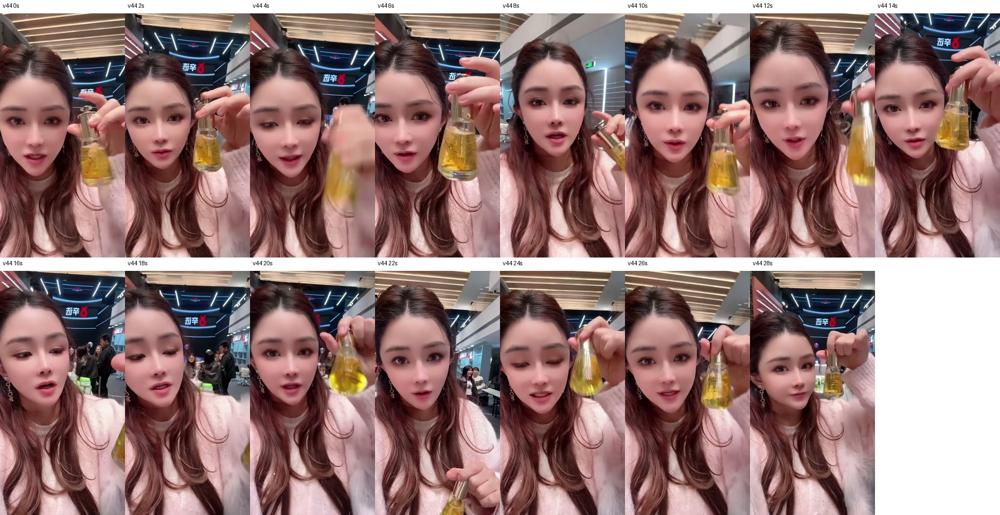 | ||||
| 待确认 | 待核查 | 待核查实词 待核查 近义扩展尚未扩展 | 近镜举瓶转瓶后开盖 → 滴管朝掌心和单手触颊交替 → 单手面颊鼻侧额头推开 → 指腹沿口周下巴和面颊推抹 → 再举瓶取用后触颊口周 → 放低工具、靠近镜头指面颊 表情目光：概览中可见朝镜头、看手中物或侧看；未逐段量化视线，表情不等同已核实情绪。 安排时机：需核对台词后确定 | 待补全 单次情境样例 6 次观察 · 1 个来源组 |
查看原话、视频和动作过程完整单手分区演示及近镜收尾 已确认真人来源，仅保存视觉动作；不认定语言、情绪、手势之间的习惯关系。 待补全原因：尚未对原声听审、区分说话人或核对原话/语气/动作对应。ASR存在明显错字，不能用于ready关联。
原片证据 · 0–12 秒黑T灰墙湿发；视频原声ASR候选，可能混入旁人，不做本人逐字定稿。 待核查文字：今天刷眉刷了3-4次 整个脸真的受不了 刷眉不能总刷的 当时语气：待核查 台词与动作的关系：待核查 打开原片并定位来源：20261109-ginseng-daily-v45 · 独立来源组：20261109-ginseng-daily-v04 原片证据 · 12–24 秒黑T灰墙湿发；视频原声ASR候选，可能混入旁人，不做本人逐字定稿。 待核查文字：今天刷眉刷了3-4次 整个脸真的受不了 刷眉不能总刷的 一周我觉得大家刷两次 到点了 我们的脸就是 因为刷眉的话 虽然它不是去角质 它也不给你掉这么皮 但是它必须会让你这个脸 当时语气：待核查 台词与动作的关系：待核查 打开原片并定位来源：20261109-ginseng-daily-v45 · 独立来源组：20261109-ginseng-daily-v04 原片证据 · 24–42 秒黑T灰墙湿发；视频原声ASR候选，可能混入旁人，不做本人逐字定稿。 待核查文字：但是它必须会让你这个脸 这个就相当于自己自生生成的这种东西 帮助我们把这个肺瘸脚膜质给吃掉 这个过程 我这个脸的话现在就刷了几次 每次因为给它卖货都同样没有四十分 给它两千的话 当时语气：待核查 台词与动作的关系：待核查 打开原片并定位来源：20261109-ginseng-daily-v45 · 独立来源组：20261109-ginseng-daily-v04 原片证据 · 42–60 秒黑T灰墙湿发；视频原声ASR候选，可能混入旁人，不做本人逐字定稿。 待核查文字：给它两千的话 四五次就好多 这个油我给它挂上 我自己皮肤 我要觉得有点 就是 或者是過度使用,我就會拿油去急救一下 你用其他的動作都沒有用的 就像這個油,這個泡在人身,味道非常好聞 当时语气：待核查 台词与动作的关系：待核查 打开原片并定位来源：20261109-ginseng-daily-v45 · 独立来源组：20261109-ginseng-daily-v04 原片证据 · 60–72 秒黑T灰墙湿发；视频原声ASR候选，可能混入旁人，不做本人逐字定稿。 待核查文字：就像這個油,這個泡在人身,味道非常好聞 有活動啊,有需要自己拍 秋冬的話,我會說你不要有一點油 給它敷一酒 天天早上起來,皮膚就老了 当时语气：待核查 台词与动作的关系：待核查 打开原片并定位来源：20261109-ginseng-daily-v45 · 独立来源组：20261109-ginseng-daily-v04 原片证据 · 72–82.083 秒黑T灰墙湿发；视频原声ASR候选，可能混入旁人，不做本人逐字定稿。 待核查文字：天天早上起來,皮膚就老了 好好好,這角色 臉乾而細味的 眼睛咱们干什么小人缺的水后绝对不是水吧 当时语气：待核查 台词与动作的关系：待核查 打开原片并定位来源：20261109-ginseng-daily-v45 · 独立来源组：20261109-ginseng-daily-v04 | ||||
| 待确认 | 待核查 | 待核查实词 待核查 近义扩展尚未扩展 | 滴管靠近额头和面颊 → 单手上脸后举瓶，再次提管 → 单手面颊额头鼻侧推抹 → 持瓶与单手触脸交替 → 脸颊和下巴颈侧推抹 → 举瓶至脸侧收尾 表情目光：概览中可见朝镜头、看手中物或侧看；未逐段量化视线，表情不等同已核实情绪。 安排时机：需核对台词后确定 | 待补全 单次情境样例 6 次观察 · 1 个来源组 |
查看原话、视频和动作过程出行现场的单手使用节奏 已确认真人来源，仅保存视觉动作；不认定语言、情绪、手势之间的习惯关系。 待补全原因：尚未对原声听审、区分说话人或核对原话/语气/动作对应。ASR存在明显错字，不能用于ready关联。
原片证据 · 0–6 秒白字母毛衣机场候机；视频原声ASR候选，可能混入旁人，不做本人逐字定稿。 待核查文字：刚才在机场卸了个妆啊 然后现在 我要护个敷 当时语气：待核查 台词与动作的关系：待核查 打开原片并定位来源：20261109-ginseng-daily-v47 · 独立来源组：20261109-ginseng-daily-v22 原片证据 · 6–14 秒白字母毛衣机场候机；视频原声ASR候选，可能混入旁人，不做本人逐字定稿。 待核查文字：能用油都可以了 一个油 人质有几么 这个人油给他挂下房 我啥也不带 我就带个油都可以了 当时语气：待核查 台词与动作的关系：待核查 打开原片并定位来源：20261109-ginseng-daily-v47 · 独立来源组：20261109-ginseng-daily-v22 原片证据 · 14–30 秒白字母毛衣机场候机；视频原声ASR候选，可能混入旁人，不做本人逐字定稿。 待核查文字：我啥也不带 我就带个油都可以了 人干 不是水也有用的 你脚护跟他干 你天天泡脚有用吗 没有用 你嘴干 你抹一千块钱的护护水有用吗 没有用 你得抹油是几么 所以啥也不戴 像飞机飞十几个小时 我就戴一瓶油就可以了 当时语气：待核查 台词与动作的关系：待核查 打开原片并定位来源：20261109-ginseng-daily-v47 · 独立来源组：20261109-ginseng-daily-v22 原片证据 · 30–46 秒白字母毛衣机场候机；视频原声ASR候选，可能混入旁人，不做本人逐字定稿。 待核查文字：我就戴一瓶油就可以了 叫人参油 这人参油具好用啊 很润 而且气王效果很明显 里边真的有一颗人参啊 当时语气：待核查 台词与动作的关系：待核查 打开原片并定位来源：20261109-ginseng-daily-v47 · 独立来源组：20261109-ginseng-daily-v22 原片证据 · 46–64 秒白字母毛衣机场候机；视频原声ASR候选，可能混入旁人，不做本人逐字定稿。 待核查文字：看到了吗 真的一大颗人参 不能洗脸啥也不涂 就某个油 安心放腻子一手在飞机上 咋吹我都不在干吗的 干了就不油 嘴干的话我也抹点油 没事 我都干了 抹点油 万物几个图 当时语气：待核查 台词与动作的关系：待核查 打开原片并定位来源：20261109-ginseng-daily-v47 · 独立来源组：20261109-ginseng-daily-v22 原片证据 · 64–72.075 秒白字母毛衣机场候机；视频原声ASR候选，可能混入旁人，不做本人逐字定稿。 待核查文字：万物几个图 脚后跟内也能抹油 就在这有 飞机掌护肤结束 稍微再睡觉 当时语气：待核查 台词与动作的关系：待核查 打开原片并定位来源：20261109-ginseng-daily-v47 · 独立来源组：20261109-ginseng-daily-v22 抽帧证据（不代替连续播放和原声核查）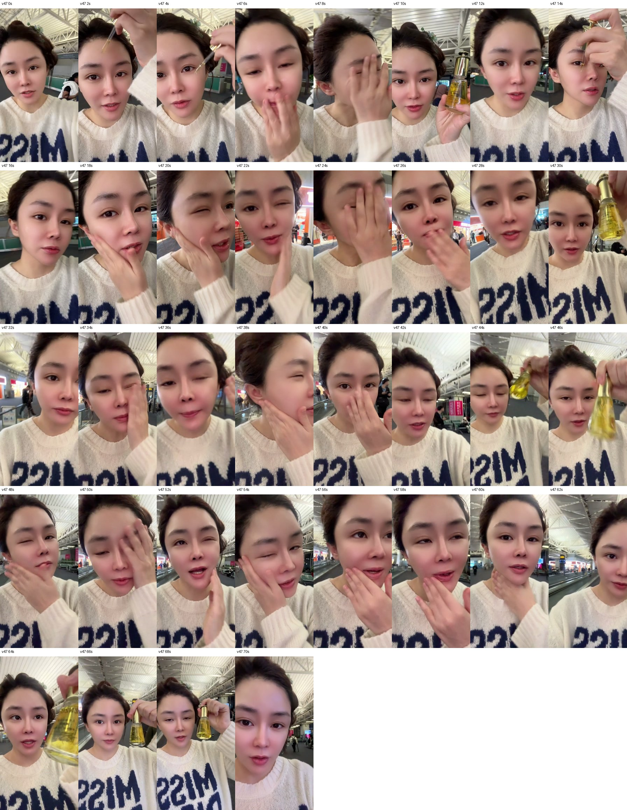 | ||||
| 待确认 | 待核查 | 待核查实词 待核查 近义扩展尚未扩展 | 举瓶、掌心取用、搓开 → 双手全脸推抹 → 开袋准备并继续触脸 → 展开面膜贴到脸上 → 揭去外层承托片并整理 → 沿下巴鼻侧面颊按压整理 → 取纸巾擦手 → 继续局部触脸、纸巾手势，瓶回桌面 表情目光：概览中可见朝镜头、看手中物或侧看；未逐段量化视线，表情不等同已核实情绪。 安排时机：需核对台词后确定 | 待补全 单次情境样例 8 次观察 · 1 个来源组 |
查看原话、视频和动作过程揭外层的动作次序和擦手收尾 已确认真人来源，仅保存视觉动作；不认定语言、情绪、手势之间的习惯关系。 待补全原因：尚未对原声听审、区分说话人或核对原话/语气/动作对应。ASR存在明显错字，不能用于ready关联。
原片证据 · 0–8 秒白雏菊短袖白桌；视频原声ASR候选，可能混入旁人，不做本人逐字定稿。 待核查文字：就是急救 脸有红有脸的宝宝们 急救就是找一下人身有肉 我今天还是加大力度下 当时语气：待核查 台词与动作的关系：待核查 打开原片并定位来源：20261109-ginseng-daily-v48 · 独立来源组：20261109-ginseng-daily-v14 原片证据 · 8–18 秒白雏菊短袖白桌；视频原声ASR候选，可能混入旁人，不做本人逐字定稿。 待核查文字：我今天还是加大力度下 因为我家的阿姨是我的脸 今天有点干 明天早上之后 人身有浮在我的脸上 当时语气：待核查 台词与动作的关系：待核查 打开原片并定位来源：20261109-ginseng-daily-v48 · 独立来源组：20261109-ginseng-daily-v14 原片证据 · 18–32 秒白雏菊短袖白桌；视频原声ASR候选，可能混入旁人，不做本人逐字定稿。 待核查文字：人身有浮在我的脸上 然后再拿出面膜 再去浮 这就是油浮面膜 让水分更好的吸收 水和油太在几个性能批准 明天早上我见不散了 当时语气：待核查 台词与动作的关系：待核查 打开原片并定位来源：20261109-ginseng-daily-v48 · 独立来源组：20261109-ginseng-daily-v14 原片证据 · 32–40 秒白雏菊短袖白桌；视频原声ASR候选，可能混入旁人，不做本人逐字定稿。 待核查文字：明天早上我见不散了 最后一下子了 不服了 我的脸是超级明明肌 当时语气：待核查 台词与动作的关系：待核查 打开原片并定位来源：20261109-ginseng-daily-v48 · 独立来源组：20261109-ginseng-daily-v14 原片证据 · 40–48 秒白雏菊短袖白桌；视频原声ASR候选，可能混入旁人，不做本人逐字定稿。 待核查文字：然后很容易过敏 又很容易干 当时语气：待核查 台词与动作的关系：待核查 打开原片并定位来源：20261109-ginseng-daily-v48 · 独立来源组：20261109-ginseng-daily-v14 原片证据 · 48–74 秒白雏菊短袖白桌；视频原声ASR候选，可能混入旁人，不做本人逐字定稿。 待核查文字：好了,这是你们用面膜之前不要干巴拉鸡的,直接敷面膜,这是不对的 给点水,也特别干的时候,给点油 玩什么呀 你要拼多久呀 当时语气：待核查 台词与动作的关系：待核查 打开原片并定位来源：20261109-ginseng-daily-v48 · 独立来源组：20261109-ginseng-daily-v14 原片证据 · 74–84 秒白雏菊短袖白桌；视频原声ASR候选，可能混入旁人，不做本人逐字定稿。 待核查文字：你要拼多久呀 应该,应该要拼很久吧 就把剩下的面膜料敷了去 当时语气：待核查 台词与动作的关系：待核查 打开原片并定位来源：20261109-ginseng-daily-v48 · 独立来源组：20261109-ginseng-daily-v14 原片证据 · 84–97.5 秒白雏菊短袖白桌；视频原声ASR候选，可能混入旁人，不做本人逐字定稿。 待核查文字：就把剩下的面膜料敷了去 你的声音我们要回家做活动了 好了 不要做过戏迷索班 Bye love Elsa's mother 当时语气：待核查 台词与动作的关系：待核查 打开原片并定位来源：20261109-ginseng-daily-v48 · 独立来源组：20261109-ginseng-daily-v14 | ||||
| 待确认 | 待核查 | 待核查实词 待核查 近义扩展尚未扩展 | 躺姿瓶在脸侧和眼前倾斜停留 → 放低瓶、抬手整理发顶 → 空手口播、手放发顶和短暂竖指 表情目光：概览中可见朝镜头、看手中物或侧看；未逐段量化视线，表情不等同已核实情绪。 安排时机：需核对台词后确定 | 待补全 单次情境样例 3 次观察 · 1 个来源组 |
查看原话、视频和动作过程卧床产品展示到空手的过渡 已确认真人来源，仅保存视觉动作；不认定语言、情绪、手势之间的习惯关系。 待补全原因：尚未对原声听审、区分说话人或核对原话/语气/动作对应。ASR存在明显错字，不能用于ready关联。
原片证据 · 0–20 秒白睡衣软包床头；视频原声ASR候选，可能混入旁人，不做本人逐字定稿。 待核查文字：万能的油是啥钱们 咱家的这个人生油真的全是好评 就是总端户 我跟他腿老板了 我就给我腿用着这个人生油了 这个就紧线干皮 油皮用那个水油平衡的这个 这个干皮 人生油 绝了 都没有啥货了 就我家卖的最快的一个油就是人生油了 当时语气：待核查 台词与动作的关系：待核查 打开原片并定位来源：20261109-ginseng-daily-v49 · 独立来源组：20261109-ginseng-daily-v49 原片证据 · 20–32 秒白睡衣软包床头；视频原声ASR候选，可能混入旁人，不做本人逐字定稿。 待核查文字：都没有啥货了 就我家卖的最快的一个油就是人生油了 就是我们家就没有100块钱的科兰的油 你们这个要需要的话就抓紧去拍 刚才拍的用的样态速度面霜也好润 当时语气：待核查 台词与动作的关系：待核查 打开原片并定位来源：20261109-ginseng-daily-v49 · 独立来源组：20261109-ginseng-daily-v49 原片证据 · 32–48.994 秒白睡衣软包床头；视频原声ASR候选，可能混入旁人，不做本人逐字定稿。 待核查文字：刚才拍的用的样态速度面霜也好润 好喜欢 咱俩东西正在先封绳了 封绳了 真好做的 太好 刷没刷头过什么 晚安 太晚睡觉了 在这儿在市场睡着好晚 拜拜 当时语气：待核查 台词与动作的关系：待核查 打开原片并定位来源：20261109-ginseng-daily-v49 · 独立来源组：20261109-ginseng-daily-v49 抽帧证据（不代替连续播放和原声核查）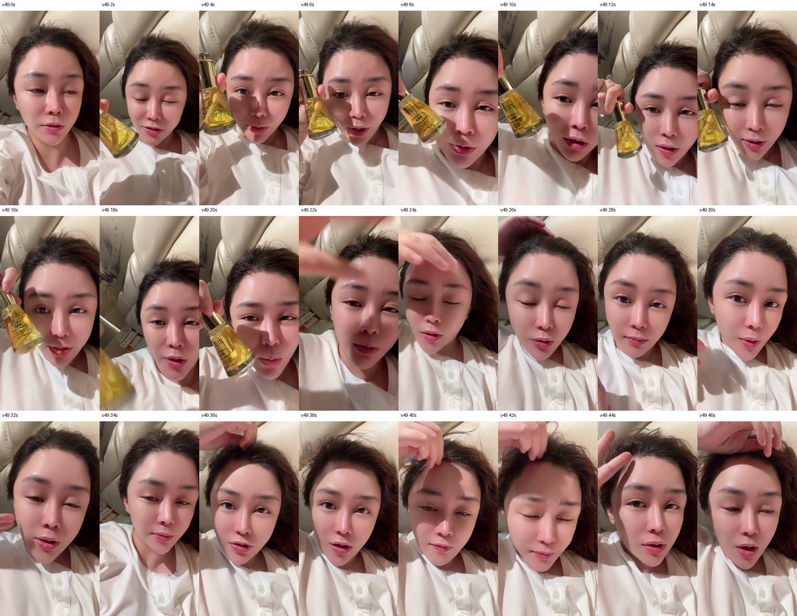 | ||||
| 待确认 | 待核查 | 待核查实词 待核查 近义扩展尚未扩展 | 手机底光照瓶转动 → 撤光，正常光持瓶近脸 → 另举蓝色渐变瓶，与人参油交替或同框 → 放瓶后竖指讲解 表情目光：概览中可见朝镜头、看手中物或侧看；未逐段量化视线，表情不等同已核实情绪。 安排时机：需核对台词后确定 | 待补全 单次情境样例 4 次观察 · 1 个来源组 |
查看原话、视频和动作过程透光结构、正常外观、两产品比较三层次 已确认真人来源，仅保存视觉动作；不认定语言、情绪、手势之间的习惯关系。 待补全原因：尚未对原声听审、区分说话人或核对原话/语气/动作对应。ASR存在明显错字，不能用于ready关联。
原片证据 · 0–12 秒浅蓝上衣衣帽间；视频原声ASR候选，可能混入旁人，不做本人逐字定稿。 待核查文字：你们问我家哪款油是最润的 乌泳之仪肯定是这款 而且超级亮 看不见 这边真的有一个人身的 还有粉丝问我这个人身 到最后能不能拿出来 当时语气：待核查 台词与动作的关系：待核查 打开原片并定位来源：20261109-ginseng-daily-v50 · 独立来源组：20261109-ginseng-daily-v50 原片证据 · 12–24 秒浅蓝上衣衣帽间；视频原声ASR候选，可能混入旁人，不做本人逐字定稿。 待核查文字：你要蹲菜区的话 我也不知道 这一款最润最润的油 可以调那边双调面膜 万物几颗调 有需要什么的 自己去搭 在这款上 这款是最清爽 当时语气：待核查 台词与动作的关系：待核查 打开原片并定位来源：20261109-ginseng-daily-v50 · 独立来源组：20261109-ginseng-daily-v50 原片证据 · 24–32 秒浅蓝上衣衣帽间；视频原声ASR候选，可能混入旁人，不做本人逐字定稿。 待核查文字：这个是水油平衡的 它俩我建议你们可以一起带走 最近很好用 就是人都是出油的 当时语气：待核查 台词与动作的关系：待核查 打开原片并定位来源：20261109-ginseng-daily-v50 · 独立来源组：20261109-ginseng-daily-v50 原片证据 · 32–41.448 秒浅蓝上衣衣帽间；视频原声ASR候选，可能混入旁人，不做本人逐字定稿。 待核查文字：就是人都是出油的 眼睛下面干完腥味的减膜 一定要把油用起来 脚后跟子上一部抹油 你泡多少次脚 它都不会解决干完 当时语气：待核查 台词与动作的关系：待核查 打开原片并定位来源：20261109-ginseng-daily-v50 · 独立来源组：20261109-ginseng-daily-v50 | ||||
| 待确认 | 待核查 | 待核查实词 待核查 近义扩展尚未扩展 | 近镜举瓶转瓶 → 手机底光照瓶 → 开瓶、滴管朝掌心并搓抹 → 另一黑色泵头瓶朝手背取浅色膏液，随后举近手背推抹；不是已确认喷雾 → 纸巾擦手、回收工具 → 多瓶摆桌，转头互动和展示印刷卡 → 旁人举瓶讲解，初瑞雪转头或听 → 本人举指和持瓶讲解 → 旁人再次举瓶，本人桌前交流 → 本人举两瓶、手机底光再展示 → 持瓶互动收尾 表情目光：概览中可见朝镜头、看手中物或侧看；未逐段量化视线，表情不等同已核实情绪。 安排时机：需核对台词后确定 | 待补全 单次情境样例 9 次观察 · 1 个来源组 |
查看原话、视频和动作过程瓶内展示到手部演示再回持品的长直播结构 已确认真人来源，仅保存视觉动作；不认定语言、情绪、手势之间的习惯关系。 待补全原因：尚未对原声听审、区分说话人或核对原话/语气/动作对应。ASR存在明显错字，不能用于ready关联。
原片证据 · 0–16 秒黑西装红色直播背景；视频原声ASR候选，可能混入旁人，不做本人逐字定稿。 待核查文字：还有那个给他带一个我是我我我这个油来人真有 看到吗你们冒着个白不含了但含真不一样那个人生状态一下就来了还就是环节疲劳的啊 这个油你们带人生的就一个人生的咱们说多少钱一个人是网上说几百块钱得要吧 当时语气：待核查 台词与动作的关系：待核查 打开原片并定位来源：20261109-ginseng-daily-v51 · 独立来源组：20261109-ginseng-daily-v51 原片证据 · 16–24 秒黑西装红色直播背景；视频原声ASR候选，可能混入旁人，不做本人逐字定稿。 待核查文字：这个油你们带人生的就一个人生的咱们说多少钱一个人是网上说几百块钱得要吧 看不呢人身泡里边请问你看这个来火性满满哦看不见营养足足的平时你问我脸干 当时语气：待核查 台词与动作的关系：待核查 打开原片并定位来源：20261109-ginseng-daily-v51 · 独立来源组：20261109-ginseng-daily-v51 原片证据 · 24–38 秒黑西装红色直播背景；视频原声ASR候选，可能混入旁人，不做本人逐字定稿。 待核查文字：看不呢人身泡里边请问你看这个来火性满满哦看不见营养足足的平时你问我脸干 深圳肝,怎么办你们,你可以挑你的分底液 那分底液拿来,万物皆可调,你加上这一个油 眼睛下面干了细纹的,所有你们我都说了,给大家放过福利啊,江大云 油这如果你肝来,明白吗 当时语气：待核查 台词与动作的关系：待核查 打开原片并定位来源：20261109-ginseng-daily-v51 · 独立来源组：20261109-ginseng-daily-v51 原片证据 · 38–50 秒黑西装红色直播背景；视频原声ASR候选，可能混入旁人，不做本人逐字定稿。 待核查文字：什么叫肝皮的分底液,还有油皮的分底液 你们不能够拿一个暗好的吗 这个肝皮你们是不是都搓不开,揉不开 你如果平常有油呢,能懂吗 好用拿好用来回锅炸,回购 当时语气：待核查 台词与动作的关系：待核查 打开原片并定位来源：20261109-ginseng-daily-v51 · 独立来源组：20261109-ginseng-daily-v51 原片证据 · 50–58 秒黑西装红色直播背景；视频原声ASR候选，可能混入旁人，不做本人逐字定稿。 待核查文字：好用拿好用来回锅炸,回购 我看有多少姐妹想要,我快来给大家上下来,直接 这一瓶 我原来租租你们买个码罩的 一个罩我卖你108的话 当时语气：待核查 台词与动作的关系：待核查 打开原片并定位来源：20261109-ginseng-daily-v51 · 独立来源组：20261109-ginseng-daily-v51 原片证据 · 58–108 秒黑西装红色直播背景；视频原声ASR候选，可能混入旁人，不做本人逐字定稿。 待核查文字：一个罩我卖你108的话 你们我给你卖一个 这个油收你130吧 没毛病吗 没毛病 那这是三支拼货你们手组 现货多少上多少 多一单不加 好吗 现货多少 好 现货一共有7000个 7000个 你这有这个链接 就卖了100万瓶了 其实不对 电波 电波卖的价格 99都卖了100万瓶了 记得吗 老百姓 看 我没有给你对着这支 总盲会对几个人 这么多人对几个人 总盲会没见过你 你进尺难 定不准 改台来八九块钱 到手三平 八九三分钱 再送一个人来 八九到四个人 什么点了吗 改价 七九四平上升 七九 什么 十年这是精华油 精华油三十毫升 当时语气：待核查 台词与动作的关系：待核查 打开原片并定位来源：20261109-ginseng-daily-v51 · 独立来源组：20261109-ginseng-daily-v51 原片证据 · 128–148 秒黑西装红色直播背景；视频原声ASR候选，可能混入旁人，不做本人逐字定稿。 待核查文字：我是拿我的租租的东西 再拉人气 以为我不是拿来卖的 我现在没有空卖租租 但是租租确实没有什么货了 所有买货的姐们都知道 我日常卖多少钱 所以我自己的铁板 知道七十九块钱 我给你们四个 我就是一分钟的肤利 那能比租租更更猛的 因为租租卖多少年的都知道多少钱 拿租租来破的话那才叫实力 当时语气：待核查 台词与动作的关系：待核查 打开原片并定位来源：20261109-ginseng-daily-v51 · 独立来源组：20261109-ginseng-daily-v51 原片证据 · 158–170 秒黑西装红色直播背景；视频原声ASR候选，可能混入旁人，不做本人逐字定稿。 待核查文字：太给力了 黑了没有 第一个就是精华油 哇 全是活性油 我以后你们我再说一遍 美妆这一块我竟然没有空卖 但最近的话都需要了 因为昏过年了 来自己看了活性来 里边给大家每一个里面都加一颗人身 当时语气：待核查 台词与动作的关系：待核查 打开原片并定位来源：20261109-ginseng-daily-v51 · 独立来源组：20261109-ginseng-daily-v51 原片证据 · 170–182.648 秒黑西装红色直播背景；视频原声ASR候选，可能混入旁人，不做本人逐字定稿。 待核查文字：里边给大家每一个里面都加一颗人身 最后 人生根 没有了 我就告诉你们 你们真的是拿不到货 你真的抢不到 因为准则多少钱 徐杰亚 我昨晚睡觉我没有看到我设计几个小时 当时语气：待核查 台词与动作的关系：待核查 打开原片并定位来源：20261109-ginseng-daily-v51 · 独立来源组：20261109-ginseng-daily-v51 | ||||
| 待确认 | 待核查 | 待核查实词 待核查 近义扩展尚未扩展 | 近镜举瓶 → 瓶悬在圆形灯座上方照亮 → 手背已有浅色膏液，开瓶并将滴管朝手背取油，推抹展示 → 再次提滴管朝手背，回瓶后举近并推开浅色混合物 → 拿纸巾擦手 → 关瓶转瓶近镜 → 灯座透瓶，撤手短暂展示 → 灯座与瓶举起放下轮换 → 放下工具，空手手势结束 表情目光：概览中可见朝镜头、看手中物或侧看；未逐段量化视线，表情不等同已核实情绪。 安排时机：需核对台词后确定 | 待补全 单次情境样例 9 次观察 · 1 个来源组 |
查看原话、视频和动作过程独立灯座底光与手背底妆搭配演示的组合；包装身份待核。 已确认真人来源，仅保存视觉动作；不认定语言、情绪、手势之间的习惯关系。 待补全原因：尚未对原声听审、区分说话人或核对原话/语气/动作对应。ASR存在明显错字，不能用于ready关联。
原片证据 · 0–8 秒白礼服珍珠项链直播；视频原声ASR候选，可能混入旁人，不做本人逐字定稿。 待核查文字：那个我给大家上一个人参游 人参游 对 这里面是真的有一个人参的 能看到吗 那么一整颗人参 当时语气：待核查 台词与动作的关系：待核查 打开原片并定位来源：20261109-ginseng-daily-v52 · 独立来源组：20261109-ginseng-daily-v52 原片证据 · 8–16 秒白礼服珍珠项链直播；视频原声ASR候选，可能混入旁人，不做本人逐字定稿。 待核查文字：就是你们觉得我暖暖的 我也觉得你们暖暖的 那你要你打灯的话 那我还得装个屁了 看完的人参泡过的精华 看到了吗 有没有脸干的 眼睛上面干了气泡多的 当时语气：待核查 台词与动作的关系：待核查 打开原片并定位来源：20261109-ginseng-daily-v52 · 独立来源组：20261109-ginseng-daily-v52 原片证据 · 16–26 秒白礼服珍珠项链直播；视频原声ASR候选，可能混入旁人，不做本人逐字定稿。 待核查文字：眼睛上面干了气泡多的 有 然后包括用分体液的卡粉的 分体液拿来 嗯 分体 不要久都给你卖货 我来给你放福利了 你说得没错 姐姐给我收楼感受到你 当时语气：待核查 台词与动作的关系：待核查 打开原片并定位来源：20261109-ginseng-daily-v52 · 独立来源组：20261109-ginseng-daily-v52 原片证据 · 26–42 秒白礼服珍珠项链直播；视频原声ASR候选，可能混入旁人，不做本人逐字定稿。 待核查文字：这个油 我们可以调整面膜 分贴拿来来 9块9 傻板呀 傻板呀 一个人卖不到价钱 我在 我都说了今天 我给你们乘的没有用的东西 就来看看了吗 是不是直接就顺滑开了 对 当时语气：待核查 台词与动作的关系：待核查 打开原片并定位来源：20261109-ginseng-daily-v52 · 独立来源组：20261109-ginseng-daily-v52 原片证据 · 42–50 秒白礼服珍珠项链直播；视频原声ASR候选，可能混入旁人，不做本人逐字定稿。 待核查文字：对 我今天就是感谢你 就是非常非常谢你 所以今天某一个人找的多 我的生活其实是妈妈嘛 就围着孩子 9块9 一只人设有 当时语气：待核查 台词与动作的关系：待核查 打开原片并定位来源：20261109-ginseng-daily-v52 · 独立来源组：20261109-ginseng-daily-v52 原片证据 · 50–64 秒白礼服珍珠项链直播；视频原声ASR候选，可能混入旁人，不做本人逐字定稿。 待核查文字：一只人设有 怎么样了吗 咱就背着我店里外多少钱了 你将我顶铺 好吧 我家一瓶水的话 都没有100多块钱的 有更不用说了 有这个还加了一颗人身的 也没有几百块钱出不来 但没关系 当时语气：待核查 台词与动作的关系：待核查 打开原片并定位来源：20261109-ginseng-daily-v52 · 独立来源组：20261109-ginseng-daily-v52 原片证据 · 64–78 秒白礼服珍珠项链直播；视频原声ASR候选，可能混入旁人，不做本人逐字定稿。 待核查文字：但没关系 还没有用过有肉节目的 今天人身油 人身泡过油全都是营养 改价就快走上车 我只能限量两万单 我不能忍受一单 天哪 上车来 谢谢 能想到算 今天是最合心的 几百块钱两万单 当时语气：待核查 台词与动作的关系：待核查 打开原片并定位来源：20261109-ginseng-daily-v52 · 独立来源组：20261109-ginseng-daily-v52 原片证据 · 78–90 秒白礼服珍珠项链直播；视频原声ASR候选，可能混入旁人，不做本人逐字定稿。 待核查文字：几百块钱两万单 几百块钱 一整颗人身 一整颗人身 我们公司最合心的品 我现在是 不卖了 他就给你们拿出来 赶紧 一秒没齐 当时语气：待核查 台词与动作的关系：待核查 打开原片并定位来源：20261109-ginseng-daily-v52 · 独立来源组：20261109-ginseng-daily-v52 原片证据 · 90–93.669 秒白礼服珍珠项链直播；视频原声ASR候选，可能混入旁人，不做本人逐字定稿。 待核查文字：一秒没齐 我不能在手里打 但是我 我想一 当时语气：待核查 台词与动作的关系：待核查 打开原片并定位来源：20261109-ginseng-daily-v52 · 独立来源组：20261109-ginseng-daily-v52 | ||||